形式幂级数讲解（maspy 博客中文翻译）
作者（原文）：maspy（maspypy.com） 来源分类页：https://maspypy.com/形式的べき級数解説 说明：本文件由分类页中列出的博客文章链接下载后翻译整理而成。数学公式（$...$ 与
$$...$$）保持原样，未作改动。
目录
- 第1篇：与计数问题的对应
- 第2篇：通过代数式变形推导解法
- 第3篇：线性递推与形式幂级数
- 第4篇：可高速计算的情形
- 第5篇（补充）：定义与式变形正当性的验证
- 第6篇：FPS 复合与反函数讲解（1）反函数与 Power Projection
- 第7篇（英文）：FPS 复合与反函数（第1部分）
- 第8篇：FPS 复合与反函数讲解（2）基于转置原理的复合算法推导
- 第9篇（英文）：FPS 复合与反函数（第2部分）
- 第10篇：FPS 24 题
- 第11篇：O(1) 模逆元、模对数、模幂
- 第12篇：树上 0-1 背包 / 京都观光 train seats
第1篇：与计数问题的对应
目录（本系列）：
- （１）数え上げとの対応付け ← 本篇
- （２）式変形による解法の導出
- （３）線形漸化式と形式的べき級数
本篇目录：概要 / 例题 / 基于分配律的说明 / 用多项式表示状态转移 / 习题 / 高维状态转移
概要
某些计数计算，可以与“多项式·形式幂级数上的计算”联系起来。把计数问题重新解读为多项式·形式幂级数上的计算，再通过代数式的变形来求得答案——这种手法在竞技编程中也开始受到关注。
只要学会把各种各样的问题翻译成“带字母的式子（文字式）问题”，那么只要加深对这些字母式的理解，就能同时提升解决广泛问题的能力。另外，它在魅力上也在于可以运用在初高中数学里学过的、对文字式和函数进行式变形的能力。
这里，我们来练习把计数对象对应到多项式·形式幂级数的问题上去。（反过来说，本篇不处理“对应过去之后，如何求解多项式·形式幂级数问题”的说明。）
把多项式重新表述这件事，在没有经验的时候可能会觉得突兀，但频繁出现的模式是有限的，只要知道一点点思路，就能在很多场合适用。
我打算不再形式化地说明思路，而是不断罗列问题例子来推进说明。通过反复看类似的例子，大致的思路应该就能掌握。
“问题”里问的是计数，而“解答”只写到“对应到多项式·形式幂级数”为止。至于实际怎么计算，本篇不涉及。
那么，开始吧。
例题
【问题１】 有集合 $A = \{2,3\}$、$B = \{2,4\}$、$C = \{3,5,7\}$。从各个集合中各选一个元素 $a,b,c$。使得 $a + b + c = n$ 的选法有多少种？
【解答】 令 $f = (x^2 + x^3) (x^2 + x^4) (x^3 + x^5+x^7)$，则 $f$ 中 $x^n$ 的系数即为答案。
下面我们用两种方法说明得到这个解答的理由。
基于分配律的说明
一般地，计算 $(a_1 + a_2+\cdots)(b_1+b_2 +\cdots )(c_1+c_2 +\cdots )$ 这样的积时，结果等于把形如 $a_ib_jc_k$ 的积全部各加一次。本次的情况中：
- 选 $x^2$ 或 $x^3$
- 选 $x^2$ 或 $x^4$
- 选 $x^3$ 或 $x^5$ 或 $x^7$
- 把所选之物的积全部加起来
这样就能算出 $f = (x^2 + x^3) (x^2 + x^4) (x^3 + x^5+x^7)$。若把所选之物记为 $x^a, x^b, x^c$，则所选之物的积为 $x^{a+b+c}$，因此 $[x^n] f$ 与使得 $a+b+c = n$ 的 $(a,b,c)$ 的选法总数一致。
用多项式表示状态转移
我个人感觉这个思路用得更多。
当每个状态都计算着某个值时，把计算结果以多项式的形式持有。此时原则是：让“多项式的次数”表示“所考虑的状态”，“系数”表示每个状态的“计算出的值”（多数情况下是计数）。
在本次问题中，把“能组成怎样的‘和’”、“有几种组成方法”作为状态·值，来更新多项式。
- 什么都没选的状态 → $1$
- 选集合 $A$ 的元素 → $x^2 + x^3$
- 进一步选集合 $B$ 的元素 → ？？？（这里是问题）
从 $B$ 选 $2$ 的情况 → $(x^2 + x^3)x^2$。 从 $B$ 选 $4$ 的情况 → $(x^2 + x^3)x^4$。 合起来 → $(x^2 + x^3)(x^2 + x^4)$。
从 $B$ 选，是“把状态 $+2$ 的选项”和“把状态 $+4$ 的选项”。像这样，把所有状态同时只改变一个常数的操作，可以表示为“乘以 $x^n$”。既然是“从这些操作中任选其一，把计算结果加起来”，那取和就行了。继续下去吧。
假设选到集合 $B$ 时已经得到了多项式 $g$。
进一步选集合 $C$ 的元素：
- 从 $C$ 选 $3$ → $gx^3$
- 从 $C$ 选 $5$ → $gx^5$
- 从 $C$ 选 $7$ → $gx^7$
- 合起来 → $g(x^3 + x^5 + x^7)$
“选一个”就成了“乘上某个多项式”的操作。什么都没选的状态是 $1$，经过从 $A,B,C$ 的选择，最终完成了多项式 $(x^2 + x^3) (x^2 + x^4) (x^3 + x^5 + x^7)$。
好了，虽然只解决了一个问题，但仅靠这一个思路就能不断用多项式来立式。我们加速一下，一口气介绍问题吧。
【问题２】 苹果卖 $2$ 个、橘子 $3$ 个、葡萄 $4$ 个。合计买 $n$ 个的方法有几种？（同类水果之间不区分）
【解答】 $[x^n](1+x+x^2)(1+x+x^2+x^3)(1+x+x^2+x^3+x^4)$
把购买个数作为状态、把计数作为系数来考虑多项式。关于苹果的选项有“0个、1个、2个”三种，对应 $(1+x+x^2)$。同样考虑橘子、葡萄带来的转移，取出状态 $n$ 即为答案。
【问题３】 苹果·橘子·葡萄有无限多个在卖。合计买 $n$ 个的方法有几种？（同类水果之间不区分）
【解答】 令 $f = \sum_{n=0}^{\infty} x^n = 1 + x + x^2 + x^3 + x^4 + x^5 + \cdots$（无限继续下去），则 $[x^n]f^3$ 为答案。
对苹果的选项没有个数上限，于是出现了“带有无限多项的多项式”——也就是形式幂级数。
实际上，也可以不考虑“买比 $n$ 个更多的苹果”的选项，因此也可以用多项式的范围来描述。
【解答】 令 $f_n = 1 + x + x^2 + x^3 + \cdots + x^n$，则 $[x^n]f_n^3$ 为答案。
即便考察时按形式幂级数推进，实现时一般也终究是只把 $n$ 次以下作为多项式来计算的步骤。
习题
习题或文章的链接，出于避免剧透的考虑，已隐藏问题名。请知悉这一点，必要时再顺着链接去看。
即便标了“出处”，多数情况下也只是抽出适当的要素改了标题，或者把数值具体化以便思考。
【问题４】 给定集合 $A = \{a_1,a_2,\ldots,a_k\}$。满足 $n = a_i + a_j$ 的 $(i,j)$ 有几组？（相关：■、■ 等）
【解答】 令 $f = x^{a_1} + x^{a_2} + \cdots + x^{a_k}$，则 $[x^n] f^2$ 为答案。
【问题５】 编号 $1$ 到 $N$ 的 $N$ 个格子排成一条直线。一次移动中，可以从格子 $x$ 移动到 $x+2$ 或 $x+3$。求移动 $n$ 次后到达终点的移动方法数。（出处：把 ■ 的一部分极其简化地改了标题）
【解答】 $[x^{N-1}]$ $(x^2+x^3)^n$ 为答案。
或者，若把格子编号看作“状态”，下面这样可能更自然：
【解答】 $[x^{N}]$ $x(x^2+x^3)^n$ 为答案。
【问题６】 与问题５相同设定下，求移动次数任意时的移动方法数。
【解答】 $\sum_{n = 0}^{\infty}[x^{N-1}]$ $(x^2+x^3)^n$ 为答案。
即便无限和也可以，总之归约到文字式的问题。移动次数顶多 $(N-1)/2$ 左右，所以截断成有限和也行。
【问题７】 1 日元硬币、5 日元硬币、10 日元硬币有无限多个。恰好支付 $n$ 日元的方法有几种？
【解答】 令 $f_1 = \sum_{n=0}^{\infty}x^n$、$f_5 = \sum_{n=0}^{\infty}x^{5n}$、$f_{10} = \sum_{n=0}^{\infty}x^{10n}$，则 $[x^n]f_1f_5f_{10}$ 为答案。
把合计金额作为状态。例如，确定 5 日元硬币的枚数，对应从状态转移“$+0, +5, +10, +15\ldots$”中选择。
【问题８】 有重量 $w_1$ 的行李、重量 $w_2$ 的行李、…、重量 $w_k$ 的行李各一个。往耐重 $W$ 的包里装的方法有几种？（装的顺序等忽略。也可以一个都不选）
【解答】 $\sum_{n=0}^{W}[x^n]$ $(1+x^{w_1})(1+x^{w_2})\cdots (1+x^{w_k})$ 为答案。
也可以利用乘积符号 $a_1a_2\cdots a_n = \prod_{i=1}^na_i$（西格玛符号的乘积版本），写成下面这样：
【解答】 $\sum_{n=0}^{W}[x^n]\prod_{i=1}^k$ $(1+x^{w_i})$ 为答案。
【问题９】 满足 $a_1+a_2+\cdots + a_8 = 6N$ 且 $0\leqq a_i \leqq N$ 的整数组 $(a_1,\ldots,a_8)$ 有几组？（出处：■）
【解答】 令 $f = \sum_{n=0}^{N}x^n$，则 $[x^{6N}] f^8$ 为答案。
【问题１０】 $N$ 以下的 $3$ 个素数组成的组 $(a,b,c)$ 中，使得 $a+b+c$ 为素数的有几组？（出处：把 ■ 中 $a,b,c$ 的顺序约束去掉的版本）
【解答】 令 $P_N$ 为 $N$ 以下所有素数的集合。令 $f = \sum_{p\in P_N}x^p$，则 $\sum_{p\in P_{3N}} [x^p] f^3$ 为答案。
【问题１１】 求把 $N$ 表示为正整数之和的方法数。不过，和的顺序不同要区分。
$N = 4$ 时，有 $4, 1+3, 3+1, 2+2, 1+1+2, 1+2+1, 2+1+1, 1+1+1+1$ 共 $8$ 种。
【解答】 令 $f=x+x^2+x^3+x^4+\cdots$，则 $[x^N]\sum_{n=0}^{\infty}f^n$ 为答案。
这里把“作为 $n$ 个之和来组成”的方法加起来。另外，答案会变成 $2^{N-1}$ 这个简单的式子。既可以通过对应到“进行 $N-1$ 次二选一的方法”来证明，也可以通过形式幂级数的处理来证明。
【问题１２】 求把 $N$ 表示为正整数之和的方法数。不过，和的顺序不同不区分。
$N = 4$ 时，有 $4, 1+3, 2+2, 1+1+2, 1+1+1+1$ 共 $5$ 种。这种计数 $p_n$ 被称为划分数。
【解答】 对每个 $k$ 令 $f_k=\sum_{i=0}^{\infty} x^{ki}$，则 $[x^N]\prod_{k=1}^{\infty}f_k$ 为答案。
“不区分和的顺序”这一点很麻烦，不能使用和上一题相同的立式。那么如何区分计数对象呢——是各个整数的使用次数。看成“$1$ 用 $a_1$ 个、$2$ 用 $a_2$ 个、$3$ 用 $a_3$ 个、…”就会得到这个式子。（例如和上述 1 日元·5 日元·10 日元硬币的问题是一样的）
【问题１３】 求把 $N$ 表示为互异正整数之和的方法数。和的顺序不同不区分。
【解答】 对每个 $k$ 令 $f_k=(1 + x^k)$，则 $[x^N]\prod_{k=1}^{\infty}f_k$ 为答案。
这次，对 $1,2,3,\ldots$ 各个整数进行“用 1 次·不用”的二选一，所以变成这样。
【问题１４】 设 $N,M$ 为正整数。求满足下列条件的整数列 $A_1,\ldots,A_N$：
- $0 < A_1\leqq A_2\leqq \cdots \leqq A_N = M$
- 对任意 $1\leqq i\leqq N-1$ 有 $3\leqq A_{i+1} – A_i \leqq 5$ （出处：把 ■ 稍微简化）
【解答】 令 $f=\sum_{n=1}^{\infty}x^n$、$g=x^3+x^4+x^5$，则 $[x^M]f\cdot g^{N-1}$ 为答案。
$A_1,\ldots,A_N$ 的值是状态。选到 $A_1$ 时，状态 $1,2,3,\ldots$ 各有可能 $1$ 种，用 $f$ 表示。每推进一项，把状态 $+3,+4,+5$ 的方法各有 $1$ 种，所以这里可以写成乘 $g$。
或者，也可以认为 $A_0 = 0$，只有第一步能进行任意正大小的状态转移。
【问题１５】 设 $N,M$ 为正整数。求满足下列条件的整数列 $A_1,\ldots,A_N$：
- $0 < A_1\leqq A_2\leqq \cdots \leqq A_N < M$
- 对任意 $1\leqq i\leqq N-1$ 有 $3\leqq A_{i+1} – A_i \leqq 5$ （※与问题１４几乎相同，只是改成 $A_N < M$）
我认为有自然的两种做法。
【解答】 取与【问题１４】说明相同的 $f,g$，则 $\sum_{m = 0}^{M-1}$ $[x^m]fg^{N-1}$ 为答案。
这是按最终状态分类后相加。
【解答】 取与【问题１４】说明相同的 $f,g$，则 $[x^M]$ $f\cdot g^{N-1}\cdot f$ 为答案。
补上 $A_{N+1} = M$，看作“最后一步能进行任意正大小的状态转移”，就变成这样。
【问题１６】 掷标准骰子 $100$ 次。求出目之和为 $n$ 的概率。
【解答】 令 $f = \frac{1}{6}(x+x^2+x^3+x^4+x^5+x^6)$，则 $[x^n] f^{100}$ 为答案。
把各“状态”的“概率”作为系数来构造多项式。可以认为把状态 $+1, +2, \ldots, +6$ 的方法各有 $1/6$ 种。
【问题１７】 开始时在数轴的原点。有满足 $p + q = 1$ 的实数 $p,q$。掷“正面以概率 $p$、反面以概率 $q$ 出现的硬币”，正面则向正方向走 $1$、反面则向负方向走 $1$。掷 $100$ 次硬币后，位于 $x = n$ 的概率。
【解答】 令 $f = (px+qx^{-1})$，则 $[x^n]f^{100}$ 为答案。
这是个有点新类型的角色。若把到达地点的坐标看作“状态”、用多项式持有计算结果，就会出现 $x^{-1}, x^{-2}$ 这样的负幂项。含有这种项的“多项式”称为 Laurent 多项式。不过需要注意的地方不多，几乎可以和多项式一样处理。
编程实现时，负下标不好处理，所以有时会采取如下解决办法。
【解答】 答案为 $[x^n](px+qx^{-1})^{100}$。这等于 $[x^{n+100}]x^{100}(px+qx^{-1})^{100}$，因此等于 $[x^{n+100}](px^2+q)^{100}$。这样，计算对象中的负幂项就消失了。
【问题１８】 考虑把 $N = a_1 + a_2 + \cdots + a_k$（其中 $a_i$ 为正整数）表示出来（同【问题１１】）。对这种分割定义其“美观度”为 $\prod_{i=1}^k a_i^2$。求所有分割的“美观度”之和。（出处：■ 中无禁止点的情况）
【解答】 令 $f = \sum_{k=1}^{\infty}k^2x^k = x + 4x^2 + 9x^3 + 16x^4 + \cdots$，则 $[x^N] \sum_{n=0}^{\infty} f^n$ 为答案。
这个相当难吧。构造多项式时让每个“状态”持有“值”，而这里让“值”持有“美观度之和”。第 $n$ 次转移把“状态”推进 $k$ 时，“值”变为 $k^2$ 倍，所以变成这个形式。
或者，考虑用分配律展开 $f^n$，就能直接确认：对每个 $N$ 的分割，“美观度”被加算了一次。
高维状态转移
想持有高维状态时，用多变数的多项式或形式幂级数就好。不过，据我所知，多变数形式幂级数的处理比单变数更难，若没有好的结构，往往无法高速计算。在考察上它是有用的。
【问题１９】 有：
- 价格 $3$ 日元、重量 $4$ 克的商品 A
- 价格 $5$ 日元、重量 $6$ 克的商品 B
各最多可买 $2$ 个。恰好花 $n$ 日元、重 $m$ 克的方法有几种？
【解答】 令 $f = 1 + x^3y^4 + x^6y^8$、$g = 1 + x^5y^6 + x^{10}y^{12}$，则 $[x^ny^m] fg$ 为答案。
把“状态（$a$ 日元、$b$ 克）”对应到“$x^ay^b$”。基于至今的思路，我觉得没有特别难的地方。
【问题２０】 1 日元、5 日元、10 日元硬币有无限个。求恰好用 $n$ 枚、恰好支付 $m$ 日元的方法数。
【解答】 令 $f_1 = \sum_{n=0}^{\infty}x^ny^n$、$f_5 = \sum_{n=0}^{\infty}x^{5n}y^{n}$、$f_{10} = \sum_{n=0}^{\infty}x^{10n}y^{n}$，则 $[x^my^n] f_1f_5f_{10}$ 为答案。
把状态（金额 $a$，枚数 $b$）对应到 $x^ay^b$。
【问题２１】 从二维坐标平面上的原点出发随机游走。即在 $(x,y)$ 时，等概率地移动到 $(x\pm 1, y)$、$(x,y \pm 1)$。每秒移动 $1$ 次。求 $T$ 秒后位于 $(a,b)$ 的概率。（相关：■）
【解答】 令 $f = (x + x^{-1} + y + y^{-1})/4$，则 $[x^ay^b] f^T$ 为答案。
【问题２２】 有 $3$ 个变数 $X,Y,Z$，初始它们的值都是 $0$。一次操作中可以：
- 选一个变数，加 $1$ 或 $-1$；或者
- 对所有变数同时加 $1$，或同时加 $-1$。
求 $N$ 次操作后变成 $X=p, Y=q, Z=r$ 的操作序列数。（出处：■）
【解答】 令 $f = x + x^{-1} + y + y^{-1} + z + z^{-1} + xyz + (xyz)^{-1}$，则 $[x^py^qz^r] f^N$ 为答案。
问题２１·２２有好的结构，可以简单计算。→ 我的文章
【问题２３】 从三维空间内的原点出发。在 $(x,y,z)$ 时，选一组非负整数 $(a,b,c)$（但除去 $(0,0,0)$），可以瞬移到 $(x+a,y+b,z+c)$。求从原点到 $(X,Y,Z)$ 的移动方法数。（出处：■）
【解答】 令 $f_x=1+x+x^2+x^3+\cdots$、$f_y=1+y+y^2+y^3+\cdots$、$f_z=1+z+z^2+z^3+ \cdots$。令 $f =f_xf_yf_z-1$。则 $\sum_{n = 0}^{\infty}[x^Xy^Yz^Z] f^n$ 为答案。
若没有“除去 $(0,0,0)$”这条规则，则 $f_xf_yf_z$ 就是一次移动的状态转移。附加“除去 $(0,0,0)$”这条规则后得到的就是 $f$。
【问题２４】 从三维空间内的原点出发随机游走（以各 $1/6$ 的概率那样移动）。设 $T$ 秒后到达 $(a,b,c)$，求满足 $3a+4b+5c=n$ 的概率。（出处：■）
【解答】 令 $f=(x+x^{-1}+y+y^{-1}+z+z^{-1})/6$，则 $\sum_{3a+4b+5c=n}[x^ay^bz^c]f^T$ 为答案。
虽然这样写了，其实变量可以减少。从 $3$ 变数多项式中取出 $3a+4b+5c$ 的信息。
令 $x = t^3$、$y = t^4$、$z = t^5$，则 $x^ay^bz^c=t^{3a+4b+5c}$，于是变成下面这样：
【解答】 令 $f=(t^3+t^{-3}+t^4+t^{-4}+t^5+t^{-5})/6$，则 $[t^n]f^T$ 为答案。
实际上，从一开始就“把 $3a+4b+5c$ 当作状态”来考虑，直接弄成这个形式可能更易懂，不过有时哪种步骤会自然浮现因人而异。
第2篇：通过代数式变形推导解法
目录（本系列）：
- （１）数え上げとの対応付け
- （２）式変形による解法の導出 ← 本篇
- （３）線形漸化式と形式的べき級数
本篇目录：概要 / 前提代数 / 形式幂级数环的拓扑 / 形式幂级数的逆元 / 通过无限和变形化简 / 因式分解的应用 / 习题 / 由累积和推导 dp 转移 / 回退 DP 的推导 / 交换律·快速幂的应用 / 总结 / 相关
概要
第１回：与计数问题的对应 → ■
上次我们确认了各种计数问题可以转换为多项式（形式幂级数）的问题。但仅此而已的话，只是把通常的 dp 思路原样翻译了过来。毕竟只是把数据的持有方式改成了多项式。
既然能改写成多项式，dp 转移的立式就已经完成了。另一方面，有时基于原样立式会导致计算量过大，被迫需要削减计算量。有必要通过某种式子变形的形式，把它弄成容易高速计算的样子。我们来看看这样的例子。
前提代数
总之，本篇利用如下文字式的计算。
二项式定理
$\binom{n}{i}$ 是二项式系数，有时也记作 ${}_n\mathrm{C}_i$。
另外，由于对 $i<0$ 或 $i>n$ 有 $\binom{n}{i}=0$，所以求和范围可以随意，例如写成 $\sum_{i=0}^{\infty}$ 也行。
等比数列的和
对 $r\neq 1$，有
形式幂级数的和·差·积
形如 $F=\sum_{n=0}^{\infty}f_nx^n$ 的式子称为形式幂级数。多项式也是某种形式幂级数。 当 $G = \sum_{n=0}^{\infty} g_nx^n$ 也是形式幂级数时，它们的和·差·积按如下要领定义：
作为重要性质，$F\pm G$、$FG$ 的 $n$ 次以下部分只由 $F,G$ 的 $n$ 次以下部分决定。只关注 $n$ 次以下时，形式幂级数的运算规则与多项式的运算（更准确地说是多项式 $\pmod{x^n}$ 的运算）相同。
由此也可知，形式幂级数的和·差·积充分满足交换律·结合律·分配律等关于运算的自然要求。 （※ 用术语说，就是构成一个环） （※ 由多项式环得到形式幂级数环的操作，是“由环的理想进行完备化”这一操作的特殊情况。重要的类似物有 $p$ 进整数环等。）
如果更详细的内容感兴趣，请适当参考下面的文章。不过只要在一定程度上理解了氛围，不纠结严格定义、直接读本篇就好。
- [多项式·形式幂级数]（补充）定义与式变形正当性的确认
本篇面向对形式幂级数的严格定义及其正当性产生疑问时阅读。它与下一篇的顺序无关紧要。如果想更简略地学有趣的部分、用于解决问题，建议先读（１）（２）（３）……
形式幂级数环的拓扑
“拓扑”是为定义“极限”而准备的结构。虽然搬出了这个词，但不需要拓扑空间等知识。而且即便不了解严格内容，粗略处理也往往能得到正确结论，所以觉得难的话跳过也没关系。
形式幂级数 $F$ 按“最低次项越高，越接近 $0$”来对待。利用这一点，可以定义形式幂级数列的极限：
【定义】 形式幂级数列 $F_1,F_2,F_3\cdots$ 收敛到 $F$，是指对任意 $k$，存在某个 $N$，使得当 $n\geq N$ 时，$F_n$ 与 $F$ 的 $k$ 次以下部分一致。
既然定义了数列的极限，无限级数的极限也可以作为部分和极限来定义。
形式幂级数的逆元
对形式幂级数 $F,G$，当 $FG = 1$ 成立时，称 $F$ 为 $G$ 的（或 $G$ 为 $F$ 的）逆元，记作 $F = \dfrac{1}{G}$ 等。把 $F\cdot \dfrac{1}{G}$ 写作 $\dfrac{F}{G}$。
虽然用了和分数相同的记号，但实际上可以确认它满足与分数相同的计算规则（如 $\dfrac{F_1}{G_1}\pm\dfrac{F_2}{G_2}=\dfrac{F_1G_2\pm F_2G_1}{G_1G_2}$ 等）（分数的计算规则由结合律·分配律等导出）。作为逆元，下面这个最频繁出现：
实际上，试着计算 $(1-x)(1+x+x^2+x^3+\cdots)$，可以确认除常数项外系数都变为 $0$。同样地，当 $F$ 是不含常数项的形式幂级数时，有
右边严格来说就是前面“形式幂级数环的拓扑”中所述的极限概念。部分和与等比数列的和一样呈 $\dfrac{1-F^N}{1-F}$ 的形式，与左边的差为 $\dfrac{F^N}{1-F}$，但若 $F$ 不含常数项，则该式不存在 $N$ 次以下的项，正当性得到保证。
通过无限和变形化简
【问题】 求把 $N$ 表示为正整数之和的方法数。不过，和的顺序不同要区分。
$N=4$ 时，有 $4, 1+3, 3+1, 2+2, 1+1+2, 1+2+1, 2+1+1, 1+1+1+1$ 共 $8$ 种。这个问题按所取个数 $n$ 分别计算时，可归约到如下的多项式计算：
令 $F=x+x^2+x^3+x^4+\cdots$，则 $[x^N]\sum_{n=0}^{\infty}F^n$ 为答案。
其实到了这一步，与最短的解法（组合解释一瞬间）相比已经绕了相当远的路。而且变成了无限和。
尽管如此，我们确认一下：从“对文字式通过式子变形来简化”这一视角，也能很自然地解出来。
首先，$F=x\cdot \dfrac{1}{1-x}=\dfrac{x}{1-x}$。想求的是 $G = \sum_{n=0}^{\infty}F^n$，而它可以表为 $G=\dfrac{1}{1-F}$。代入 $F = \dfrac{x}{1-x}$ 并整理，可知
计算 $G = (1-x)\cdot \frac{1}{1-2x}=(1-x)(1+2x+4x^2+8x^3+\cdots)$ 等，可知 $N$ 次系数为：当 $N=0$ 时为 $1$，当 $N\geqq 1$ 时为 $2^N-2^{N-1}=2^{N-1}$。
或者，做如下变形也能得到相同结论：
评论
总之，只要能翻译成文字式问题，接下来探寻该文字式尽量自然的表示，就能看清计数对象的简单表示与计算方法。文字式的变形功力可以直接活用到计数上。
另外，恐怕最简单的方法是运用组合解释（对应）：
$4＝1＋2＋1$ → 〇｜〇〇｜〇 （在 $1$ 个·$2$ 个·$1$ 个〇之间插入分隔）
这样，$4$ 的分割就对应到“对 $3$ 个位置进行‘插入/不插入分隔’的二选一”，共 $2^3$ 种。
因式分解的应用
文字式被因式分解时，计算方法有时会随之简化。例如看下面这个。
【问题】 ■ 在坐标平面上从原点出发随机游走。求 $T$ 秒后到达 $(a,b)$ 的路径数。 ※ 在二项数项系数预处理的前提下，要求每个查询 $O(1)$ 时间计算。
这个问题可以用多项式改写为如下形式：
令 $F = (x + x^{-1} + y + y^{-1})$，求 $[x^{a}y^{b}] F^{T}$。
$F$ 可以如下因式分解：
因此，计算 $[x^{a}y^{b}] F^{T}$ 时，令 $I = \{(i,j)\mid i+j-T=a, i-j=b\}$，计算 $\sum_{(i,j)\in I}\binom{T}{i}\binom{T}{j}$ 即可。$I$ 至多是一个一元集，从而得到计算结果。
评论
这个问题在 $1$ 维时很简单，所以 $2$ 维的情况只要把移动次数分配到 $x$、$y$ 方向，路径数就能用适当的二项式系数之积表示。于是，通过二项式系数的西格玛计算立式马上就能做，巧妙处理它也能解出来。
本问题在 DEGwer 先生的计数 PDF（■）中也有涉及（14.3 节）。说的是旋转 $45$ 度，也就是用 $(x+y,x-y)$ 代替 $(x,y)$。
这个思路与上述因式分解的思路是对应的。
令 $A = x^{1/2}y^{1/2}$、$B = x^{1/2}y^{-1/2}$，则可写作 $f = (A+A^{-1})(B+B^{-1})$，可以认为一次转移是“选 $A$ 或 $A^{-1}$”“选 $B$ 或 $B^{-1}$”独立进行。这对应到在旋转 $45$ 度的盘面上独立选择左右·上下移动。
请注意：从对文字式自然的操作（在初高中代数中习惯的）出发，能自然导出对计数的特殊解读。（文字式操作与计数解读，各自让人觉得多自然因人而异）
类题
贴一个问题和对应的我的解说文章。
问题 → ■、解说 → ■
即便认为是摆弄二项式系数的多重和，或是寻找像旋转 $45$ 度那样的解读，都会变成相当上位的问题；但若站在“把多项式因式分解”这一视角，它就属于类题范畴了。
由累积和推导 dp 转移
【问题】 ■ 给定 $a_1,\ldots, a_N$。选自然数 $0\leqq x_i\leqq a_i$ 使得 $x_1+\cdots + x_N = K$，求方法总数。 ※ $N\leqq 100$，$a_i\leqq K\leqq 10^5$。
替换为多项式问题后，如下：
令 $F_{i} = 1 + x + x^2 + \cdots + x^{a_i}$。求 $[x^K] F_1F_2\cdots F_N$。
一般地，$d$ 次多项式的积，愚直计算需要 $\Theta(d^2)$ 的计算量；在本题的约束下，$K$ 次式乘 $N$ 次很难。
对 $F_i$ 找出某种结构来降低计算量吧。和因式分解时一样，去寻找对多项式更好的表示。
由等比数列的和，可变形为 $F_i = \dfrac{1-x^{a_{i}+1}}{1-x}$。虽然是除法，但可以用两个稀疏的（系数几乎全为 $0$ 的）多项式表示，似乎能更好地处理 $F_i$。进一步，尝试表为
归根结底，对某多项式 $P$ 乘上 $F_{i}$ 的操作，可以分解如下：
- 操作１：乘上 $\dfrac{1}{1-x}$
- 操作２：乘上 $(1-x^{a_i+1})$
操作１如何计算呢？
一般地，设 $P = \sum_{n=0}^{\infty}p_nx^n$、$\dfrac{P}{1-x} = Q = \sum_{n=0}^{\infty}q_nx^n$。比起除法，乘法更好理解，所以把这些关系表为 $(1-x)Q = P$。
比较两边的 $[x^n]$ 部分，可知 $p_0=q_0$，且对 $n\geqq 1$ 有 $q_n-q_{n-1}=p_n$ 成立。因此 $q_n$ 可以用递推式 $q_n=q_{n-1}+p_n$ 与初项 $q_0=p_0$ 来计算，每个系数 $\Theta(1)$、$d$ 次以下部分 $\Theta(d)$ 可算。 （※ 一般地，用稀疏多项式做除法也能同样高速计算。） （※ 归根结底，$\{q_n\}$ 是 $\{p_n\}$ 的累积和。也可以基于 $\frac{1}{1-x}=1+x+x^2+\cdots$ 来说明，那可能更易懂；但为了强调“只要发现分解为稀疏的式子，计算量就会自然下降”这种思维法，上面采用了那样的说明。）
操作２呢？这只需按乘法的定义计算，计算量类似。只是把系数序列平移 $(a_i+1)$ 个再相减即可（一般地，与稀疏多项式相乘可高速计算）。
把两种操作合起来，最终发现 $F_i$ 带来的 dp 转移可以按如下形式计算：
- 把数列替换成累积和
- 取与平移 $(a_i+1)$ 个之后的差分，得到新数列
另外，由于形式幂级数的积满足交换律，可知即便把这两步颠倒顺序也能得到相同计算结果。计算 $N$ 个积 $f_1\cdots f_N$ 时，也可以先算 $\prod_i(1-x^{a_i})$ 再做 $N$ 次累积和。请按喜欢的顺序实现。
实现例(1)：https://atcoder.jp/contests/dp/submissions/45905298 实现例(2)：https://atcoder.jp/contests/dp/submissions/45905363
另外，若学习更高级的算法，也可以用 $\exp, \log$ 等在 $N=10^5$ 这样的约束下求解。
回退 DP 的推导
【问题】 ■ 给定 $a_1,\ldots, a_N$。选自然数 $0\leqq x_i\leqq a_i$ 使得 $x_1+\cdots + x_N = K$，求方法总数。 不，这个有点太简单了，再加点小要求…… 要求回答 $Q$ 个查询：“在 $x_k = c_k$ 的条件下计数”。 ※ $N\leqq 2000$，$0\leqq a_i\leqq M\leqq 2000$，$Q\leqq 500000$。
上一题的变形版。虽然有 $Q$ 个查询，但太多了，所以预期是对所有 $(k, c_k)$ 都计算。解下面这个问题：
令 $F_{i} = 1 + x + x^2 + \cdots + x^{a_i}$。对每个 $i$，求 $\prod_{j\neq i}F_j$ 的 $M$ 次以下部分。
从整体集合中去掉 $1$ 元再做某种统计算，典型技巧是计算从左和从右的累积（例：■）。但是，合并左右积的地方要花 $\Theta(M^2)$，做 $N$ 次很吃力（※ 即便如此，用 FFT 加速也能 AC）。想找更好的结构。
作为别的方法，很自然地会想到：
- 计算 $F = \prod_{j} F_j$
- 以 $\prod_{j\neq i}F_j = F / F_i$ 得到目标物
$F_i$ 带来的除法会怎样呢？
因为 $F_i = \dfrac{1-x^{a_i+1}}{1-x}$，所以可写作
- 乘上 $(1-x)$
- 用 $(1-x^{a_i+1})$ 除
两者都是用稀疏多项式做乘·除，所以 $\Theta(M)$ 可算，达成目的。更具体地，对系数的操作是：
- 取阶差数列
- 每 $d = a_i+1$ 项取累积和（$a_n \leftarrow a_n + a_{n-d}$，从小到大重复）
实现例：https://atcoder.jp/contests/arc028/submissions/45897289
评论
累积和式的 dp 更新、回退 dp 这些各自能想到的技巧，用文字式来看，被同时说明为单纯的乘·除。立式中让人混乱的要素也少了吧。
交换律·快速幂的应用
【问题】 ■ 给定像 ‘ ? ? 2 ? ? 5 ’ 这样的字符串。把各个 ‘?’ 填入 $0$ 到 $9$，求组成 $13$ 的倍数的方法数。 ※ 位数：$N\leqq 10^5$。
首先归约到多项式乘法：
- 个位：$+5$
- 十位：从 $+0, +10, +20, +30, \ldots, +90$ 中选
- 百位：从 $+0, +100, +200, +300, \ldots, +900$ 中选
- 千位：$+2000$
已经填好的数值部分就那样转移。其他位置，$10^k$ 位上放多项式 $F_k = \sum_{n=0}^{9}x^{10^kn}$。
计算这些的积即可，但只有指数 $\pmod{13}$ 的值才是问题。因此，在附加“$x^{13}=1$”这一规则的基础上计算多项式的积（给详细的人：多项式环的剩余环 $K[X]/(X^{13}-1)$ 中的积）。
乘 $x^5$ 等只是平移系数位置。进一步，利用 $F_n = F_{n+6}$，可知下面这个才是本质：
在（$x^{13} = 1$ 下）计算 $F_0^{a_0}F_1^{a_1}\cdots F_5^{a_5}$。$\sum a_i = N \leqq 10^5$。
愚直计算要对多项式积做约 $N$ 次计算。（这个方法也能解，与竞赛预期解同等）。但是，对于大的 $a$，计算 $F^a$ 的方法众所周知可以用 $\Theta(\log(a))$ 次乘法算出来。
归根结底，这个问题的主体部分对 $N$ 可 $\Theta(\log N)$ 时间计算（检测 ‘?’ 位置要 $\Theta(N)$，所以整体是 $\Theta(N)$ 解法）。
评论
感觉提到本问题计算量下降的人不多。在应用快速幂时，本质用到了多项式积的
- 交换律
- 结合律
但多项式的这些性质，很多人不用当作新算法知识去学，也能像空气一样使用吧？上面的解说中也没有明示用到交换律、结合律的地方。
用 dp 转移的话来说，会是如下形式：
- 数列的卷积满足结合·交换律
- 转移是线性的，所以可写成矩阵，因此满足结合律
等等；但与多项式不同，觉得在高中数学以前就不熟悉的人更多。另外，这种加速常被归在“矩阵快速幂”名下讨论，但若能用多项式解释，那样做计算量也有利（$D$ 次多项式乘除的愚直计算是 $\Theta(D^2)$，而 $D$ 次方阵乘除的愚直计算是 $\Theta(D^3)$）。
总结
想举很多例子的话，感觉会收不住，所以到此先告一段落。
对本篇内容更积极地主张的话，就是：
- 问题能用多项式·形式幂级数的形式自然表达
- 通过某种结构（组合解释等），dp 能好好计算
的时候，该结构应该能作为代数变形推导出来。
本次举的例子，都是即便没有多项式这种想法也能解的问题。而且对于每个问题本身，很多人可能觉得用组合解释等反而更简单、或更自然地立式。不过，看似完全不同的计数技巧，竟从“简化文字式”这一共同想法同样被推导出来，这一点值得关注。
相关
- ABC 159 F（问题·解说）
- ABC 321 F（问题）
- KUPC 2019 K（问题·解说）
- JSC 2019 预选 F（问题·解说）
第3篇：线性递推与形式幂级数
系列一览 → ■ 相关解说：
- [AtCoder] G – 斐波那契数的总和（square869120Contest）
- [AtCoder] E – Placing Squares（AGC 013）
本篇目录：有理式的结构 / 部分分数分解 / 微分 / 负二项式定理 / 数列的母函数 / 线性递推与形式幂级数 / 线性递推第 $N$ 项的计算 / 矩阵快速幂 / Fiduccia 算法 / Bostan–Mori 算法 / 各种计算例 / 确认具有线性递推
有理式的结构
本篇以“可用有理式表示的形式幂级数”为中心探讨。首先加深理解：这样的形式幂级数是什么样的。
部分分数分解
【定理】 对 $x$ 的有理式 $\frac{P}{Q}$（$P,Q$ 为多项式），当 $P$ 的次数小于 $Q$ 的次数，且 $Q = \prod (1-r_i x)^{m_i}$ 被因式分解时，$\frac{P}{Q}$ 等于 $(1-r_ix)^{-j}$（$1\leqq j\leqq m_i$）的线性组合。
符号有点乱，例如 $\dfrac{a+bx+cx^2}{(1-x)(1-2x)^2} = \dfrac{d}{1-x} + \dfrac{e}{1-2x} + \dfrac{f}{(1-2x)^2}$ 这样的要领。
有 $\deg P < \deg Q$ 这个条件，但它不太本质。一般的有理式，是上述形状的东西加上多项式（$1,x,x^2,\ldots$ 的线性组合），对形式幂级数来说只是产生有限个系数的例外。
关于“能被因式分解”的假设：只要 $Q$ 的常数项为 $1$，在 $P,Q$ 系数域的某个适当扩域中就成立。例如 $P,Q$ 为 $\C$ 系数时，适当的 $\C$ 中元素 $r_i$ 就满足条件（代数基本定理）。
综上，要理解可用有理式表示的形式幂级数，只要理解 $(1-r_ix)^{-j}$ 形的形式幂级数即可。
微分
顺便研究 $(1-r_ix)^{-j}$ 时，引入形式幂级数的微分。
对形式幂级数 $F = \sum_{n=0}^{\infty}f_nx^n$，其（形式）微分 $F’$ 定义为 $F’ = \sum_{n=0}^{\infty}nf_nx^{n-1}$（这是定义，而非计算方法）。
本篇很多读者可能听说过所谓“函数的微分”，但 $F$ 本身可能连“可微分”都谈不上，甚至无法定义代入数 $x$，连函数的表达式都算不上。但这里只是做了模仿它的纯代数操作。同样出于这个原因，系数域不包含在 $\R$ 或 $\C$ 中时（有限域 $\F_q$ 等）也能完全同样地处理。
Leibniz 律（积的微分）：$(FG)’ = F’G + FG’$ 成立（因为没采用解析定义，所以即便知道函数微分的人也该重新证明这个命题）。由 Leibniz 律还能导出：
- 商的微分：$\biggl(\dfrac{F}{G}\biggr)’ = \dfrac{F’G – FG’}{G^2}$．（商 $\dfrac{F}{G}$ 有定义时）
- $n$ 次幂的微分：$(F^n)’ = nF^{n-1}F’ \quad (n\in \Z)$．（对 $n<0$ 的结论在商 $\dfrac{1}{F}$ 有定义时成立）
商的微分的推导：令 $H = \frac{F}{G}$，则对 $F=GH$ 两边微分得 $F’ = G’H + GH’$。由此 $H’ = \frac{F’-G’H}{G}$，整理即得所证。另外（只要商有定义）形式幂级数总是可微的，所以比分析学中的商微分有更简单的证明。
$n$ 次幂微分的推导：Leibniz 律是关于两个积微分的，但它可推广到 $n\geq 1$ 个积。例如三个积：$(F_1F_2F_3)’ = F_1’F_2F_3 + F_1F_2’F_3 + F_1F_2F_3’$；四个积类似，“把某个 $F_i$ 换成 $F_i’$ 的所有项之和”就是右边。这由对 $n$ 的归纳法易证。特别地取 $F_1 = F_2 = \cdots = F_n = F$ 就是 $n$ 次幂的微分。再用商的微分即得 $n<0$ 的情况。
负二项式定理
【定理】 $(1-rx)^{-d} = \sum_{n=0}^{\infty}\binom{n+d-1}{d-1}(rx)^n$ 成立。
由于出现了二项式系数，也可以对应到某种计数来证明，但这里我们用微分试一下。
把 $rx$ 换成 $x$，只要证 $r=1$ 的情况即可。用关于 $d$ 的归纳法。假设对 $d$ 成立，证 $d+1$。对归纳假设 $(1-x)^{-d} = \sum_{n=0}^{\infty}\binom{n+d-1}{d-1}x^n$ 两边微分，得 $-d(1-x)^{-d-1}\cdot(-1) = \sum_{n=0}^{\infty}\binom{n+d}{d-1} (n+1)x^n$，所以
另外，二项式系数 $\binom{n}{k}$ 是 $n$ 的 $\Q$ 系数多项式，因此可以直接定义对任意 $x\in\C$ 的 $\binom{x}{k}$。上面的等式，与从二项数定理得到的等式 $(1-x)^d = \sum_{n=0}^{\infty}\binom{d}{n}(-x)^n$ 在 $d$ 取负时完全一致，因此也被称为负二项式定理。此外，二项数定理适当处理的话也能推广到 $(x+y)^d\ (d\in\C)$（■）。
数列的母函数
对数列 $a_0,a_1,a_2,\ldots$，把形式幂级数 $A = \sum_{n=0}^{\infty} a_nx^n = a_0 + a_1x + a_2x^2 + \cdots$ 称为 $\{a_n\}$ 的母函数。本篇若无特别说明，“数列 $\{a_n\}$ 的母函数 $A$”这样用小写·大写字母对应数列与母函数。
对数列的若干操作，可表示为对母函数非常简单的操作。看几个重要例子：
- 移位：数列 $\{b_n\}_{n\geqq k}$ 由 $b_n = a_{n-k}$ 定义，则 $B = x^{k}A$ 成立（$k<0$ 时 $B$ 含负幂项）。
- 线性组合：数列 $\{c_n\}$ 由 $c_n = pa_n + qb_n$（$p,q$ 为常数）定义，则 $C = pA + qB$ 成立。
- 与等比数列的点积：数列 $\{b_n\}$ 由 $b_n = a_nr^n$ 定义，则 $B = A(rx)$ 成立。
- 与多项式的点积：数列 $\{b_n\}$ 由 $b_n = na_n$ 定义，则 $B = xA’$ 成立。
- 累积和：数列 $\{b_n\}$ 由 $b_n = \sum_{i=0}^na_i$ 定义，则 $B = A\cdot \frac{1}{1-x}$ 成立。
- 卷积：数列 $\{c_n\}$ 由 $c_n = \sum_{i+j=n}a_ib_j$ 定义，则 $C = AB$ 成立。
非平凡的不多。$b_n = na_n$ 几乎就是微分定义本身。既然能表示 $na_n$ 的母函数，反复做就能表示 $n^2a_n$、$n^3a_n$ 等的母函数，所以取线性组合就得到“与多项式的点积”。累积和只需想起 $\dfrac{1}{1-x} = \sum_{n=0}^{\infty}x^n$。卷积就是形式幂级数积的定义本身。
线性递推与形式幂级数
对常数 $c_1,c_2,c_3,\ldots,c_d$，能写成
对这种具有线性递推的数列 $\{a_n\}$，考察其母函数 $A$。右边是 $\{a_n\}$ 移位的线性组合，所以这个等式应该用 $A$ 的语言重写。实际上，因为 $a_{n-i} = [x^{n-i}]A = [x^n]x^iA$，上面的递推式可表示为
注意“$n\geqq d\implies$”这部分，由此可知 $P=QA$ 是 $d$ 次以下的多项式。由于 $A=\dfrac{P}{Q}$，有如下对应。
【定理】 对数列 $\{a_n\}_{n\geq 0}$，以下等价： （１）具有线性递推。 （２）存在多项式 $P,Q$（$\deg P < \deg Q$，$Q$ 的常数项为 $1$）使得 $A = \dfrac{P}{Q}$。 （３）$a_n$ 是形如 $\binom{n+j-1}{j-1}r^n$（$1\leqq j$）的数列的线性组合。 （４）$a_n$ 是形如 $n^jr^n$（$0\leqq j$）的数列的线性组合。
已说明（１）$\implies$（２）。（２）$\implies$（１）也几乎同样。另外，也要确认线性递推的形状与有理式分母 $Q$ 是对应的。
（２）$\iff$（３）由部分分数分解与负二项式定理可知。（３）$\iff$（４）要证 $\binom{x+j-1}{j-1}$（$1\leqq j \leqq m$）的所有线性组合与 $m$ 次以下多项式全体一致，这很容易。
也要确认（３）·（４）中该用的 $r,j$ 与（２）的分母 $Q$ 的因式分解是对应的。
线性递推第 $N$ 项的计算
已知数列 $\{a_n\}$ 满足的线性递推时，对巨大的 $N$ 可在 $\Theta(\log N)$ 时间内计算 $a_N$。确认一下。
参考：https://judge.yosupo.jp/problem/kth_term_of_linearly_recurrent_sequence
矩阵快速幂
给出把 $a_{n+d}$ 表为 $a_n, \ldots, a_{n+d-1}$ 线性组合的线性递推时，映射 $(a_n, \ldots, a_{n+d-1})\mapsto (a_{n+1},\ldots, a_{n+d})$ 是线性映射。计算这个线性映射的 $N$ 次复合即可，用称为“矩阵快速幂”的技巧可计算 $a_N$。例如斐波那契数列（$a_{n+2}=a_{n+1}+a_n$）有
一般 $d$ 阶线性递推时，矩阵乘法最朴素的实现是 $O(d^3)$ 时间，所以对 $d, N$ 是 $O(d^3\log N)$ 时间。
参考：算法导论（CLRS）3.4 节
Fiduccia 算法
利用多项式的乘·除来高效计算 $a_N$ 的方法称为 Fiduccia 算法。学术上似乎是 Fiduccia, C.M.: An Efficient Formula for Linear Recurrences. 最早。在国内竞赛编程圈也有叫“きたまさ法”的。
设具有线性递推的数列 $\{a_n\}$ 的母函数为 $A = \dfrac{P_A}{Q}$（$P_A,Q$ 是 $\deg P_A < \deg Q$ 的多项式）。
数列 $\{b_n\}$ 由 $b_n = a_{N+n}$ 定义。$\{b_n\}$ 显然与 $\{a_n\}$ 有相同的线性递推，因此可写 $B=\dfrac{P_B}{Q}$。令 $A$ 的 $N$ 次以下部分为 $R = \sum_{0\leq i < N}a_ix^i$。
此时 $\dfrac{P_A}{Q} = R + x^N\cdot\dfrac{P_B}{Q}$ 成立。去分母得 $P_A = RQ + x^NP_B$。$P_A, P_B$ 是次数小于 $Q$ 的多项式。另外，$x$ 在 $\pmod{Q}$ 下（或者说环 $K[X] / (Q)$ 中）可逆（例如 $Q = 1 + 2x + 3x^2$ 时，$-(2 + 3x)$ 给出 $\pmod{Q}$ 下的逆元）。
因此可由 $P_B = x^{-N}P_A\pmod{Q}$ 求得多项式 $P_B$。由于是 $N$ 次幂的余数，用快速幂以 $\Theta(\log N)$ 次多项式乘·除得到 $P_B$。$P_B$ 的常数项是 $b_0 = a_N$，这样就算出了 $a_N$。
$Q$ 为 $d$ 次式时，多项式的乘·除最自然地做也能 $\Theta(d^2)$ 计算。对大的 $d$，用基于 FFT 的方法可 $\Theta(d\log d)$ 计算。比上面的矩阵快速幂更快。
Bostan–Mori 算法
参考：http://q.c.titech.ac.jp/docs/progs/polynomial_division.html → 截至 2025 年 5 月，链接已失效。请改参考： https://qiita.com/ryuhe1/items/da5acbcce4ac1911f47a
这是不需经过多项式除法、实现简单且常数倍也轻的方法。我是参考上面的文章实现的。也建议确认： https://qiita.com/ryuhe1/items/c18ddbb834eed724a42b
在竞赛语境中，$d$ 小、FFT 与朴素卷积差距小的情况很多，所以即便没准备 FFT，也可以先把它实用化。
各种计算例
高中数学学的递推式解法，多数也能替换成形式幂级数。特别是“为什么取特征方程的解就能成功”，在高中数学的标准教育中相当隐晦。
例 求由 $a_0=3, a_1=4, a_{n}=5a_{n-1}-6a_{n-2}$ 确定的数列 $\{a_n\}$ 的第 $n$ 项。
省略 $n$ 的范围。可知存在某一次以下多项式 $P$ 使 $A = \dfrac{P}{1-5x+6x^2}$。因为 $1-5x+6x^2=(1-2x)(1-3x)$，所以存在常数 $p,q$ 使 $A = p(1-2x)^{-1} + q(1-3x)^{-1}$（部分分数分解）。
由 $(1-rx)^{-d} = \sum_{n=0}^{\infty}\binom{n+d-1}{d-1}(rx)^n$ 特别有 $(1-rx)^{-1}=\sum_{n=0}^{\infty}r^nx^n$，故知 $a_n = p\cdot 2^n + q\cdot 3^n$。
求 $p,q$ 主要有两种方法： （１）追踪上面的计算，认真算 $P, p,q$。 $P = (1-5x+6x^2)A = (1-5x+6x^2)(3 + 4x + \cdots)$。又知结果是一次以下多项式，所以只算 $(1-5x)(3+4x)$ 的一次以下部分即可。得 $P=3-11x$。于是 $3-11x=p(1-3x)+q(1-2x)$，得 $p=5,q=-2$。 （２）按与 $a_0,a_1$ 吻合来定 $p,q$。 由 $a_0,a_1$ 的值以及 $a_n = p\cdot 2^n + q\cdot 3^n$，知 $3=p+q$ 且 $4=2p+3q$。故 $p=5, q=-2$。
综上证得 $a_n=5\cdot 2^n-2\cdot 3^n$。
例 求由 $a_0=3, a_1=4, a_{n}=6a_{n-1}-9a_{n-2}$ 确定的数列 $\{a_n\}$ 的第 $n$ 项。
存在一次以下多项式 $P$ 使母函数写为 $\dfrac{P}{(1-3x)^2}$。这是 $(1-3x)^{-1}, (1-3x)^{-2}$ 的线性组合。$a_n$ 是 $3^n$ 与 $n3^n$ 的线性组合。再由 $a_0,a_1$ 的值得 $a_n = \bigl(3-\frac53n\bigr)\cdot 3^n$。
例 求由 $a_0=0, a_1=1, a_{n} = a_{n-1} + a_{n-2}$ 确定的第 $n$ 项。（斐波那契数列）
因式分解 $(1-x-x^2) = (1-\alpha x)(1-\beta x)$，则同样可写 $a_n = p\alpha^n + q\beta^n$。再由 $a_0$, $a_1$ 的值适当确定。$a_0$ 的值给出 $q=-p$，故 $a_n = p(\alpha^n-\beta^n)$。结合 $a_1$ 的值得 $a_n = \dfrac{ \alpha^n-\beta^n}{\alpha-\beta}$。
（参考）通常取 $\alpha = \dfrac{1+\sqrt{5}}{2}$, $\beta = \dfrac{1-\sqrt{5}}{2}$，但域不必是复数域 $\C$ 的子域。例如对 $a_n\pmod{11}$ 感兴趣时，在域 $\F_{11}$ 中考虑，由因式分解 $(1-x-x^2) = (1-4x)(1-8x)$ 知 $a_n = \dfrac{1}{4}(8^n-4^n)$。结合费马小定理可知 $a_n\pmod{11}$ 具有 $10$ 的约数作为周期。域为 $\F_5$ 时，因式分解为 $(1-3x)^2$，得 $a_n=2n\cdot3^n$，也知有周期 $20$（用这种方法可以理解斐波那契数模 $p$ 时的周期）。
例 设 $a_n = 2^n$，求 $b_n = \sum_{i=0}^na_i$。
只是等比数列的和，但用形式幂级数算。$a_n$ 的母函数是 $\frac{1}{1-2x}$。故 $b_n$ 的母函数是 $\dfrac{1}{(1-2x)(1-x)} = \dfrac{2}{1-2x} – \dfrac{1}{1-x}$，所以 $b_n=2\cdot 2^n-1$。
除显式公式外，也建议确认可导出 $b_n$ 满足线性递推 $b_n=3b_{n-1}-2b_{n-2}$。
例 设 $a_0=0, a_1=1, a_n=a_{n-1}+a_{n-2}$，求 $b_n = \sum_{i=0}^na_i$。
$A$ 是有分母 $(1-x-x^2)$ 的有理式，所以 $B$ 是有分母 $(1-x-x^2)(1-x)$ 的有理式。把 $(1-x-x^2)(1-x)=(1-\alpha x)(1 -\beta x)(1-x)$，则 $B$ 是 $(1-x)^{-1}$, $(1-\alpha x)^{-1}$, $(1-\beta x)^{-1}$ 的线性组合。故 $b_n$ 是三个等比数列 $1^n, \alpha^n, \beta^n$ 的线性组合，可照常计算。
也给出不同路径。$(1-\alpha x)^{-1}$, $(1-\beta x)^{-1}$ 的线性组合，是 $\dfrac{1}{1-x-x^2}$ 与 $\dfrac{x}{1-x-x^2}$ 的线性组合。故这部分是 $x^{-1}A$ 与 $A$ 的线性组合，所以知 $b_n$ 是 $a_n, a_{n+1}, 1$ 的线性组合。由此知存在 $b_n=pa_n+qa_{n+1}+r$ 形的表示，也能发现 $b_n = a_n+a_{n+1}-1$ 形的关系式。
至此我们看到，从母函数的有理式表示得到第 $n$ 项的表示时，可采取“由有理式分母说明它是若干数列的线性组合”“由 $a_0,a_1,a_2$ 等的值得到线性组合的系数”这样的步骤。只要得到了有理式分母，后面就是同样的步骤了。
另外，很多时候对把 $a_n$ 表为 $n$ 的式子没兴趣。这种情况下，归根结底只要知道小 $n$ 的 $a_n$ 与线性递推，就能算第 $N$ 项。
无论如何，重要的是知道数列具有怎样的线性递推（母函数的分母）。看看这样的方法。省略数列初值。
- $a_n = a_{n-1} + a_{n-2}$, $b_n = \sum_{i+j=n}a_ia_j$ 时，求 $B$ 的有理式表示的分母。 $B = A^2$。$A$ 有分母 $(1-x-x^2)$，故 $B$ 有分母 $(1-x-x^2)^2$。由此得到 $\{b_n\}$ 的线性递推，既可逐项算，也能对巨大 $N$ 高速计算（问题例）。
- $a_n=n^32^n$, $b_n=\sum_{i=0}^na_i$ 时，求 $A$, $B$ 的有理式表示的分母。 $A$ 的分母是 $(1-2x)^4$、$B$ 的分母是 $(1-2x)^4(1-x)$。例如可知满足 $a_{n}=8a_{n-1}-24a_{n-2}+32a_{n-3}-16a_{n-4}$。对 $B$ 展开也能得 6 阶递推。由此可对巨大 $N$ 高速计算 $b_N$。
- $a_n = (5n^2+6n+7)^{8}$, $b_n=\sum_{i=0}^na_i$ 时，求 $A$, $B$ 的有理式表示的分母。 $a_n$ 是 $16$ 次多项式，故 $A$ 有分母 $(1-x)^{17}$。$B$ 是 $A$ 的累积和，故有分母 $(1-x)^{18}$。于是愚直算出 $b_0,\ldots,b_{17}$，就能算巨大 $N$ 的 $b_N$。 用一般线性递推的手法算 $b_N$ 似乎要 $\Theta(\log N)$ 时间，但也能 $\Theta(1)$ 时间求。考虑部分分数分解，$B$ 可写为 $(1-x)^k$（$1\leq k\leq 18$）的线性组合，因此 $b_N$ 可作为 $\binom{N+k-1}{k}$ 的线性组合计算。
- $a_n=2a_{n-1}+3$ 时，求 $A$ 的有理式表示的分母。
高中数学典型。这是常系数非齐次线性递推，在本篇到目前为止处理的线性递推范围之外，但没关系。
由递推 $a_n-2a_{n-1}=0$ 得到性质 $(1 – 2x)A = 多项式$。这次右边多出“3”，所得式子变为
$$ (1 – 2x)A = 多项式 + (3+3x+3x^2+3x^3+\cdots) $$由 $(1-2x)A=多项式+\dfrac{3}{1-x}$ 知 $A$ 有分母 $(1-x)(1-2x)$。
- $a_n = a_{n-1} + a_{n-2}$, $b_n = 2b_{n-1} + a_n$ 时，求 $A$ 的有理式表示的分母。 同样可知 $(1-2x)B = 多项式 + A$。由 $A$ 有分母 $(1-x-x^2)$ 知 $B$ 有分母 $(1-2x)(1-x-x^2)$。
- $a_n = 2a_{n-1} + 3a_{n-2} + 4^n + 5n^2+6n+7$ 时，求 $A$ 的有理式表示的分母。 令 $b_n = 4^n + 5n^2+6n+7$，由 $B$ 有分母 $(1-4x)(1-x)^3$ 以及 $(1-2x-3x^2)A = 多项式 + B$，知 $A$ 有分母 $(1-4x)(1-x)^3(1-2x-3x^2)$。
确认具有线性递推
有些情况，虽然在分母因式分解或求个别系数上费事，但“是有理式（具有线性递推）”这件事本身容易知道。其实“具有线性递推”这一事实本身就有价值。从数列前面几项恢复递推式，用朴素的解联立一次方程组方法是 $\Theta(d^3)$，更巧妙可到 $\Theta(d^2)$（BM 法：Berlekamp–Massey 算法）。所以，若能立刻判断怎样的数列具有几阶线性递推，单凭这一点就能用于解题。
参考：https://judge.yosupo.jp/problem/find_linear_recurrence
- $a_n, b_n$ 具有线性递推时，其线性组合也具有线性递推。（因为有理式的线性组合是有理式。）
- $a_n, b_n$ 具有线性递推时，$c_n = a_nb_n$ 也具有线性递推。（由“具线性递推”与“可写为 $n^kr^n$ 形数列的线性组合”等价可知。） 令 $A$ 的分母为 $\prod_{i}(1-\alpha_i x)$、$B$ 的分母为 $\prod_{j}(1-\beta_j x)$，则可知 $C$ 的分母可取 $\prod (1-\alpha_i\beta_j x)$。另外若各自分母次数为 $d_A, d_B$，则 $C$ 的分母可取 $d_Ad_B$ 次式。 （注：包含重根的情况也正确。） 由 $A,B$ 的系数求 $C$ 的系数也有方法，这里省略（参考：https://codeforces.com/blog/entry/103136）。 若 $d_A, d_B$ 足够低次，手算也简单。例如取 $a_n$ 为斐波那契数列、$b_n = a_n^2$，则 $B$ 的分母可取 $(1-\alpha^2 x)(1-\alpha\beta x)(1-\beta^2 x) = (1+x)(1-3x+x^2)$。$c_n = \sum_{i=0}^nb_n$ 有分母 $(1-x)(1+x)(1-3x+x^2)$（问题例）。
- $a_n$ 为具线性递推的数列，$b_n = a_{3n}$ 时，$b_n$ 具有线性递推。 $a_n$ 是 $n^kr^n$ 形数列的线性组合，故 $b_n$ 是 $(3n)^kr^{3n}$ 形数列的线性组合。这是 $n^k(r^{3})^n$ 形数列的线性组合，所以具有线性递推。也能确认它与 $\{a_n\}$ 有相同阶数的线性递推。 实际得到递推式也稍费事。当 $A$ 的分母为 $\prod_i(1-\alpha_i x)$ 时，$B$ 的分母可取 $\prod_i(1-\alpha_i^3 x)$。例如 $\{a_n\}$ 为斐波那契数列时，可确认 $\{b_n\}$ 具有递推 $b_n = 4b_{n-1} + b_{n-2}$。 另外，取 $\zeta$ 为 $1$ 的三次本原根，也可有 $B(x^3) = \frac13\bigl(A(x) + A(\zeta x) + A(\zeta^2 x)\bigr)$ 这样的表示。由此也能确认 $B$ 是有理式。
- $a_n,b_n,c_n$ 为具线性递推的数列，$d_n$ 为按“$a_0,b_0,c_0,a_1,b_1,c_1,a_2,\ldots$”排列的数列时，$\{d_n\}$ 具有线性递推。 因为 $D(x) = A(x^3) + xB(x^3) + x^2C(x^3)$ 是有理式。 若按余数考察具有线性递推，则整体上也有线性递推，所以例如这样的计数也具有线性递推。
- $a_{n+1} = 2a_n + 3b_n + 4$, $b_{n+1} = 5a_n + 6b_n + 7^n$ 时，$\{a_n\}$, $\{b_n\}$ 具有线性递推。
这是联立递推，用形式幂级数考察得
$$ A-2xA-3xB=\frac{4}{1-x}+多项式,\qquad B-5xA-6xB=\frac{1}{1-7x}+多项式. $$理解为 $(1-2x)A – (3x)B$ 这样的联立一次方程组，方程的系数全是有理式。由问题设定方程有唯一解，所以 $A$ 是有理式。 具体写出分母也不难：除了 $(1-x), (1-7x)$，再乘上行列式 $(1-2x)(1-6x)-(-3x)(-5x)$ 即可。
- 设 $M$ 为 $d\times d$ 矩阵，则 $M^n$ 的各分量、以及分量的线性组合具有线性递推。 由凯莱-哈密顿定理，$M$ 自身具有线性递推，故显然。
例如对稀疏矩阵 $M$·列向量 $v,w$·巨大 $N$，想计算 ${}^tvM^Nw$（看似复杂的式子，但就是 $M^Nw$ 各分量的线性组合，几乎适用于所有以“矩阵快速幂”为预期解的问题）。假设 $M$ 为 $d\times d$ 矩阵、$C$ 为正常数，非零分量有 $O(Cd)$ 个。用快速幂算 $M^N$，除第一步外都可能变成稠密矩阵，只能保证 $O(d^3\log N)$。考虑到 $M$ 与列向量的积可 $O(Cd)$ 计算，则 $O(d)$ 个项能以 $O(Cd^2)$ 的计算量得到，结合 BM 法，${}^tvM^Nw$ 可 $O((C+1)d^2 + d\log d\log N)$ 等时间计算。
第4篇：可高速计算的情形
前提知识：
- （１）与计数问题的对应
- （２）通过代数式变形推导解法
- （３）线性递推与形式幂级数
上面 3 篇文章，我几乎不引用其他站点，仅靠我的文章就完成了讲解；但本篇并不打算让仅靠本篇就能追完所有讨论。
解说很少，或只有简单一句话解说。不过我会尽量写成能知道搜索方法等形式，若哪里不是这样请告诉我。
我想把多项式·形式幂级数相关、降低计算量的技巧类尽量汇总到一处，暂时主要凭记忆制作。若有增补会不定期更新。为了降低更新成本、提高覆盖率，没有怎么整理排列顺序。
- 写 $p$ 时，指系数是有理数（分母与 $p$ 互素）、求其 $\bmod p$ 的问题。输入输出的长度有时不加说明地记为 $N$。
- 常常隐含假设 $N < p$（尤其使用 $\exp, \log$ 时）。FFT / NTT 统一用 FFT 记法。
资料
- https://judge.yosupo.jp/ ：用于 verify 的题库。看每个问题的 Forum，有时会有解说和资料。
- https://nyaannyaan.github.io/library/ ：Nyaan 的库。尤其在本篇范围内，截至 2022 年 4 月有很多 Library Checker 最快实现。算法解说也很充实，想要本篇的解说时先查这个比较好（例如 https://nyaannyaan.github.io/library/fps/formal-power-series.hpp ）。
本篇目录（算法检索表）： 积（卷积） / $1/f$ / $\log f$ / $\exp f$ / $\exp, \log$ 的代表性应用 / 幂 / 稀疏情况的高速化 / 复合 $f(g(x))$ / 反函数 / 多项式除法 / 多项式 gcd / $f^k \bmod g$ / $x^k \bmod f$ / $f^k \bmod (1-x^N)$（$N$ 为 $2$ 的幂） / 分割的计数 (1) / 分割的计数 (2) / 多项式的总积 / 有理式的总和 / $i$ 次幂和的关于 $i$ 的列举 / 基本对称式的列举 / $(1-x)(1-qx)\cdots(1-q^{n-1}x)$ / $F_n^k$（斐波那契数列的 $k$ 次幂）满足的线性递推 / Polynomial Taylor Shift / Bell 数 / 第 1 类 Stirling 数 / 第 2 类 Stirling 数 / $\sum A_i(x+a)^i(x+b)^{N-i}$ / 多点求值 / 多项式插值 / 多项式的评估点平移 / 部分分数分解 / Vandermonde 矩阵的作用 / $\sum_{n=0}^N n^k$ / $\sum_{n=0}^{N-1} n^k$ 关于 $k$ 的列举 / $\sum_{n=0}^{N-1} f(n)$ 的计算 / $\sum_{k=L}^{R-1} f(kx)$ 的计算 / $\prod_{k=L}^{R-1} f(kx)$ 的计算 / 分割的计数 (3) / $\sum_{n=0}^N n^kr^n$, $\sum_{n=0}^{\infty} n^kr^n$ / $[x^M]1/(1-x-x^2)(1-x)^N$ / relaxed multiplication / $\prod_i(a_ix+b_i)^{c_i}$ / $\sum_i a_i \exp(b_ix)$ / 稀疏微分方程 / 稀疏情况的高速化 (2) / 特殊复合 / Catalan 卷积公式 / Prefix Sum Polynomial
积（卷积）
$f$, $g$ 的积可在 $O(N\log N)$ 时间计算。用 FFT。 https://judge.yosupo.jp/problem/convolution_mod 各种计算量改善的基础。不过这里已经非常厉害了。
$1/f$
假设 $[x^0]f\neq 0$。Newton 法 $O(N\log N)$ 时间。特别地，除法 $g/f$ 也可通过 $g\cdot (1/f)$ 在 $O(N\log N)$ 时间计算。 https://judge.yosupo.jp/problem/inv_of_formal_power_series
$\log f$
假设 $[x^0]f = 1$ 且 $N<p$。$O(N\log N)$ 时间。 例如定义为 $\log(1-f) = -\sum_{n=1}^{\infty} \dfrac{f^n}{n}$。想到对 $\dfrac{1}{1-x} = \sum x^n$ 积分就易记。也可能有文献定义为 $\log(1+f)$ 的形式。 满足 $\log(f)’ = f’/f$、$\log(fg) = \log f + \log g$。因此可通过积分 $f’/f$ 计算（性质证明见：定义与式变形正当性的确认）。 https://judge.yosupo.jp/problem/log_of_formal_power_series 由于分母有 $n$，在 $N > p$ 时通常无法处理。即“$\mathbb{F}_p$ 系数形式幂级数的 log”甚至没有定义。可以在只关注 $N$ 次以下的多项式环 $\mathbb{F}_p[x]/(x^N)$ 中定义，或视为在 $\Q[[x]]$ 中定义、考察对象落在 $\mathbb{Z}_p$ 中。
$\exp f$
假设 $[x^0]f = 0$ 且 $N< p$。Newton 法 $O(N\log N)$ 时间。 $\exp f$ 由 $\sum_{n=0}^{\infty} \dfrac{f^n}{n!}$ 给出，满足 $(\exp f)’ = (\exp f) f’$、$\exp(f+g) = \exp(f)\exp(g)$（性质证明见：定义与式变形正当性的确认）。 https://judge.yosupo.jp/problem/exp_of_formal_power_series
$\exp, \log$ 的代表性应用
$\exp, \log$ 互为反函数。结合二者，可通过
幂
对如下 $f, n$，$f^n$ 有定义，且可在 $O(N\log N)$ 时间计算（比重复平方更快）：
- $n$ 为非负整数
- $n$ 为有理数，且分母与 $p$ 互素。假设 $[x^0]f=1$。
后者可定义为 $f^n = \exp (n\log f)$，由 $\exp, \log$ 的性质可知 $f^{ab} = (f^a)^b$、$f^{a+b}=f^af^b$。例如取 $n=1/2$ 可定义 $\sqrt{f}$，但比起作为幂的特殊情况，专门实现 sqrt 常数倍更好。当 $[x^0]f \neq 1$ 时，通常不用 $\sqrt{f}$ 表示满足 $g^2 = f$ 的 $g$。 https://judge.yosupo.jp/problem/pow_of_formal_power_series https://judge.yosupo.jp/problem/sqrt_of_formal_power_series
稀疏情况的高速化
https://judge.yosupo.jp/problem/inv_of_formal_power_series_sparse https://judge.yosupo.jp/problem/exp_of_formal_power_series_sparse https://judge.yosupo.jp/problem/log_of_formal_power_series_sparse https://judge.yosupo.jp/problem/pow_of_formal_power_series_sparse https://judge.yosupo.jp/problem/sqrt_of_formal_power_series_sparse
当 $g$ 的非零系数有 $K$ 个时，$fg$、$f/g$ 可在 $O(NK)$ 时间计算（后者假设 $[x^0]g \neq 0$）。 只要按积的定义愚直计算即可。竞赛中最终问的往往就是这个。 另外，当 $f$ 的非零系数有 $K$ 个时，以下可在 $O(NK)$ 时间计算：$1/f$、$\exp f$、$\log f$、$f^n$。 $\log f$ 是积分 $f’/f$；$\exp f$ 与 $f^n$ 考虑微分可得系数间的稀疏递推，从下往上算。具体地，利用 $F=e^f$ 则 $F’=Ff’$，以及 $F=f^n$ 则 $fF’=nFf’$。也请参考下面的 issue 解说： https://github.com/yosupo06/library-checker-problems/issues/767 另外当 $f$ 为 $d$ 次多项式、只对结果 $N$ 次系数感兴趣时，同样由 $F, F’$ 关系知 $F$ 是 P-recursive，可在 $O(\sqrt{N}\log N \mathrm{poly}(d))$ 时间计算： https://atcoder.jp/contests/abc222/editorial/2742
复合 $f(g(x))$
https://judge.yosupo.jp/problem/composition_of_formal_power_series 把 $g$ 的幂分成 baby step, giant step 的平方分割，可在 $O(N^2)$ 时间等完成。也能到 $O((N\log N)^{1.5})$，但在竞赛约束下难以区分？截至 2022 年 4 月，Library checker 最快是 $O(N^2)$。 https://nyaannyaan.github.io/library/fps/fps-composition.hpp 不过，2024 年 3 月 noshi91 发表了证明复合与反函数可在 $O(N\log^2N)$ 时间求出的文章： https://noshi91.hatenablog.com/entry/2024/03/16/224034 算法也相当简单。具体实现请参考对该问题的提交： https://judge.yosupo.jp/problem/composition_of_formal_power_series_large 我也详细解说了：
- FPS 合成·逆函数讲解（１）反函数与 Power Projection
- FPS 合成·逆函数讲解（2）基于转置原理的复合算法推导
反函数
https://judge.yosupo.jp/problem/compositional_inverse_of_formal_power_series 设 $f$ 为 $[x^0] f = 0$ 且 $[x^1] f \neq 0$ 的形式幂级数，则称满足 $f(g(x)) = g(f(x)) = x$ 的 $g$ 为 $f$ 的反函数。给定 $f$ 到 $N$ 次，可在 $O(N^2)$ 或 $O((N\log N)^{1.5})$ 时间求出 $g$ 到 $N$ 次。考虑对方程 $f(g(x)) – x = 0$ 用 Newton 法，则只要能对各种 $p(x)$ 计算复合 $f(p(x))$、$f'(p(x))$ 等即可，复合的计算如上。计算 $1, 2, 4, \ldots, 2^k$（$2^k\geq N$）处的复合，由于复合是 $O(N^2)$ 或 $O((N\log N)^{1.5})$，反函数也同复杂度。 http://www.eecs.harvard.edu/~htk/publication/1978-jacm-brent-kung.pdf 另外由此讨论可知，若 $f(g(x))$ 能在 $O(N\log N)$ 时间求出，则 $f$ 的反函数也能 $O(N\log N)$ 求出。例如 $f$ 是低次多项式或有理式时可用。 不过，2024 年 3 月 noshi91 发表了复合与反函数可在 $O(N\log^2N)$ 时间求出的文章（参考上面的复合项）。具体实现参考提交： https://judge.yosupo.jp/problem/compositional_inverse_of_formal_power_series_large
多项式的除法
求多项式除法的商，可归约到 reverse 后做形式幂级数的除法，在 $O(N\log N)$ 时间完成。 https://judge.yosupo.jp/problem/division_of_polynomials
多项式的 gcd
用 half-gcd 手法 $O(N\log^2N)$ 时间。细节讨论和实现相当费劲（个人觉得截至 2022 年 4 月，在 Library Checker 的多项式·形式幂级数相关问题中是最难的）。 https://judge.yosupo.jp/problem/inv_of_polynomials https://scrapbox.io/37zigen-43465887/half-GCD
$f^k \bmod g$
设 $f, g$ 为 $N$ 次多项式，可在 $O(N\log N\log k)$ 时间完成。有了多项式乘法·除法，剩下的只需重复平方。重复平方有两种众所周知算法，当 $f$ 稀疏（与 $f$ 相乘快）时，分解成“$f$ 倍与平方”的递归方法常数倍更好。
$x^k \bmod f$
如上可在 $O(N\log N \log k)$ 时间完成，但也有比重复平方常数倍更好的方法： https://qiita.com/ryuhe1/items/c18ddbb834eed724a42b
$f^k \bmod (1-x^N)$（$N$ 为 $2$ 的幂）
FFT 有把 $\bmod 1-x^N$ 下的卷积变为各点积的性質，这种形式的卷积非常好处理。本来用 FFT 求多项式积时就在用这个性质。 因此做一次长度 $N$ 的 FFT，各点分别 $k$ 次幂后再 iFFT 即可。$O(N\log N + N\log k)$ 时间。 推广 $N$ 时，课题是足够高速地做长度 $N$ 的离散傅里叶变换。例如 $\mod p$ 下能取 $1$ 的 $N$ 次本原根时就能用此法。 https://dic.kimiyuki.net/chirp-z-transform https://judge.yosupo.jp/problem/multipoint_evaluation_on_geometric_sequence https://judge.yosupo.jp/problem/polynomial_interpolation_on_geometric_sequence $N$ 较小时也可 $O(N^2)$ 愚直傅里叶变换。例如下题用复数域长度 $10$ 以下的傅里叶变换也能解： https://atcoder.jp/contests/s8pc-6/tasks/s8pc_6_f
分割的计数 (1)
对 $N$ 以下的整数列 $(A_1,\ldots, A_M)$，$\prod (1 + x^{A_i})$ 或 $\prod (1-x^{A_i})^{-1}$ 到 $N$ 次可在 $O(M + N\log N)$ 时间计算。 https://judge.yosupo.jp/problem/sharp_p_subset_sum 用 $\prod f_i = \exp(\sum \log f_i)$。$\log (1+x^{A_i})$ 约有 $N/A_i$ 个非零系数。若预先求出每个 $n$ 满足 $A_i = n$ 的 $i$ 个数，则 $\sum \log f_i$ 可在 $\sum N/n \in O(N\log N)$ 时间计算。 特别地，前 $N$ 个划分数可在 $O(N\log N)$ 时间计算；但划分数方面，用五角数定理加 $1/f$ 计算常数倍更好。 https://judge.yosupo.jp/problem/partition_function
分割的计数 (2)
给定 $A_1,\ldots, A_M$ 且 $S = \sum A_i$ 时，$[x^N] \prod (1-x^{A_i})^{-1}$ 可在 $O(SM\log N)$ 或 $O(S\log S\log N)$ 时间。 归约到有理式系数 $[x^N] f/g$，但做 Bostan-Mori 时由于 $g(x)g(-x) = g(x^2)$（因 $1-x^2=(1-x)(1+x)$），$g$ 与 $g(-x)$ 交替使分母不变，这是意外之喜。分子需与 $g$ 卷积，可用 FFT 在 $O(S\log S)$ 或分解为稀疏多项式积逐个乘在 $O(SM)$ 时间。 https://yukicoder.me/problems/no/137 视为数位 dp 也能得同样的 $O(SM\log N)$ 解法（出题者解说）。用形式幂级数考察时其推导很有趣。
多项式的总积
设 $f_1, \ldots, f_M$ 为多项式，次数总和为 $N$。总积可在 $O(N\log^2 N)$ 时间计算。用分治计算。 https://atcoder.jp/contests/abl/tasks/abl_f https://judge.yosupo.jp/problem/product_of_polynomial_sequence 注意：即便 $f_i$ 低次，$\log f_i$ 也不一定稀疏，所以一般不能用 $\exp, \log$ 加速（会变成 $O(NM\log N)$）。 另外，乘 $2^N$ 个一次式的情况，会反复做“乘两个 $2^n$ 次多项式”类计算，这种多项式次数组合会持续触发 $2$ 幂 FFT 卷积的最坏情况。可通过计算长度 $2^{n+1}$ 的循环卷积后修正常数项·$2n$ 次系数等手段改善常数倍。
有理式的总和
设 $f_1, \ldots, f_M, g_1, \ldots, g_M$ 为多项式，次数总和为 $N$。$\sum_i f_i / g_i$ 可用 $N$ 次以下多项式 $g, h$ 写为 $g/h$。这 $g, h$ 可在 $O(N\log^2N)$ 时间计算。分治即可达到此复杂度。 https://yukicoder.me/problems/no/1857
$i$ 次幂和的关于 $i$ 的列举
给定 $A_1, \ldots, A_N$，在 $i=0, 1, \ldots, N$ 列举 $\sum_n A_n^i$ 可在 $O(N\log^2 N)$ 时间。要求的是 $\sum (1-A_ix)^{-1}$，作为有理式计算后再做形式幂级数除法即可。 常数倍更好的方法：积分归约到 $\sum \log (1-A_i x) = \log \prod(1-A_i x)$ 的计算。归约到多项式总积与 $\log f$ 的计算，为 $O(N\log^2N)$。 https://yukicoder.me/problems/no/1145
基本对称式的列举
给定 $A_1, \ldots, A_N$，列举 $d$ 次基本对称式 $\sum_{i_1 < \cdots < i_d} \prod_j A_{i_j}$ 可在 $O(N\log^2 N)$ 时间。只需计算 $\prod(1+A_ix)$，即多项式总积所述。
$(1-x)(1-qx)\cdots (1-q^{n-1}x)$
设 $f(x) = 1-x$，$F(x) = f(x)f(qx)f(q^2x)\cdots f(q^{n-1}x)$，则函数等式 $F(x) f(q^nx) = F(qx) f(x)$ 成立。由此得系数间的稀疏关系式，可顺序计算。 特别地，$q$ 二项式系数 $\binom{N}{i}_q$ 的列举可在 $O(N)$ 时间。 https://github.com/yosupo06/library-checker-problems/issues/980 更一般地考虑 $f(x)f(qx)\cdots f(q^{n-1}x)$。$f$ 稀疏时同理。$f$ 稠密时用 $\log, \exp$ 可在 $O(N\log N)$ 时间。
$F_n^k$（斐波那契数列的 $k$ 次幂）满足的线性递推
不限斐波那契，有 $3$ 项递推即可同样处理。 C-recursive 数列的积也是 C-recursive，所以特别地 $k$ 次幂也是 C-recursive。求这个数列满足的线性递推。 取 $1-x-x^2 = (1-ax)(1-bx)$ 的 $a, b$，以下设 $a\neq b$。$F_n$ 是 $a^n, b^n$ 的线性组合，故 $F_n^k$ 是 $a^k, a^{k-1}b, \ldots, ab^{k-1}, b^k$ 的 $n$ 次幂的线性组合。因此知 $F_n^k$ 有 $k+2$ 项递推。要恢复该递推，只需计算积 $(1-a^kx)(1-a^{k-1}bx)\cdots (1-ab^{k-1}x)(1-b^kx)$。 这与上面 $(1-x)\cdots (1-q^N x)$ 的计算相同。设积为 $f(x)$，由函数等式 $f(ax)(1-b^{k+1}x) = f(bx)(1-a^{k+1}x)$ 知相邻系数比可作为 $a^n-b^n$ 形数的比计算。$(a^n-b^n)/(a-b)$ 与原 $3$ 项递推满足同一递推，故该比也可顺序计算。$a,b$ 未必能取为 $\Q$ 或 $\mathbb{F}_p$ 的元素，但这一点最终也无碍，$(1-a^kx)(1-a^{k-1}bx)\cdots (1-b^kx)$ 可在 $O(k)$ 时间计算。 结果，系数可用连续斐波那契数的积的商表示，似乎也叫斐波那契二项式系数。
Polynomial Taylor Shift
$O(N\log N)$ 时间。直接构造 $O(N^2)$ 计算的式子，可知可用卷积计算。 https://judge.yosupo.jp/problem/polynomial_taylor_shift 特别地，可列举 $\sum_n A_n\binom{n}{i}$ 关于 $i$。
Bell 数
Bell 数是把 $n$ 个东西分成组的方法数。指数型母函数为 $\exp(\exp x – 1)$，故可在 $O(N\log N)$ 时间计算。
第 1 类 Stirling 数
无符号第 1 类 Stirling 数 $c(n,k)$ 是把 $n$ 个东西分成 $k$ 个环的方法总数。故例如 $\sum_k c(n,k) = n!$。给适当符号的 $s(n,k)$ 也叫第 1 类 Stirling 数。 $\sum_k c(n,k)x^k = x(x+1)\cdots (x+n-1)$。关于 $k$ 列举 $c(N,k)$ 可在 $O(N\log N)$ 时间。分治，利用一半的 polynomial shift 复用，可达 $O(N\log N)$。 https://judge.yosupo.jp/problem/stirling_number_of_the_first_kind 也可用下面的 $\prod_k f(kx)$。reverse 后知 $\prod_{n=0}^{N-1} (1 + nx)$ 的系数是 $c(N, N – k)$，故关于 $k = 0, 1, \ldots, K$ 列举 $c(N, N – k)$ 可在 $O(K\log K)$ 时间。此别解对巨大 $N$ 也能列举 $c(N, N-k)$，很优秀。 固定 $K$ 时关于 $n$ 列举 $c(n, K)$ 也可以。$c(n,k)$ 有双变量指数型母函数 $\sum_{n,k}c(n,k)t^k\dfrac{x^n}{n!} = (1-x)^{-t} = \exp t(-\log (1-x))$。固定 $K$ 看 $t^K$ 系数得 $\sum_{n}\dfrac{c(n,K)}{n!} x^n = \dfrac{1}{K!}\bigl(-\log(1-x)\bigr)^K$，故关于 $n$ 列举 $c(n,K)$ 可用形式幂级数的幂在 $O((N-K)\log (N-K))$ 时间。
第 2 类 Stirling 数
第 2 类 Stirling 数 $S(n,k)$ 是把 $n$ 个东西分成 $k$ 个非空子集的方法总数。故例如 $\sum_k S(n,k)$ 等于 Bell 数。 由容斥等知 $S(n,k) = \dfrac{1}{k!} \sum_{i=0}^k (-1)^{k-i}\binom{k}{i}i^n$、$\sum_{n} S(n,k)\dfrac{x^n}{n!} = \dfrac{1}{k!}(e^x-1)^k$。关于 $k$ 列举 $S(N,k)$ 用前一个式子加卷积在 $O(N\log N)$ 时间；关于 $n$ 列举 $S(n,K)$ 由后一个式子在 $O((N-K)\log (N-K))$ 时间。 https://judge.yosupo.jp/problem/stirling_number_of_the_second_kind
$\sum A_i(x+a)^i(x+b)^{N-i}$
分治为 $\Theta(N\log^2N)$ 时间，但巧妙用 polynomial taylor shift 可到 $O(N\log N)$（来自 ARC 133 F 参赛者的提交）。 做 polynomial taylor shift 可归约到 $\sum A_i(x+a)^ix^{N-i}$ 形的计算。这即 $x^N\sum A_i(1+ax^{-1})^i = x^N\sum a^iA_i (1/a + x^{-1})^i$，故可归约为对 $\sum a^iA_ix^i$ 平移 $1/a$ 再 reverse 的形来计算。
多点求值
为简单设多项式次数、评估点均为 $N$ 个。是 $N$ 次多项式在 $M$ 个点求值的问题。例如固定评估点，考虑多点求值映射的转置，用转置原理导出计算方法。可在 $O(N\log^2N)$ 时间计算。 https://judge.yosupo.jp/problem/multipoint_evaluation https://37zigen.com/multipoint-evaluation/ https://codeforces.com/blog/entry/100279 评估点为等比数列时则为 $O(N\log N)$ 时间： https://dic.kimiyuki.net/chirp-z-transform https://judge.yosupo.jp/problem/multipoint_evaluation_on_geometric_sequence
多项式插值
给定 $N$ 次多项式及在 $N+1$ 个互异评估点的值 $(x_i, f(x_i))$，恢复 $f$ 的系数序列的问题。分治在 $O(N\log^2N)$ 时间。 https://judge.yosupo.jp/problem/polynomial_interpolation https://37zigen.com/lagrange-interpolation/ 评估点为等比数列时则为 $O(N\log N)$ 时间： https://noshi91.github.io/algorithm-encyclopedia/polynomial-interpolation-geometric#noredirect https://judge.yosupo.jp/problem/polynomial_interpolation_on_geometric_sequence
多项式的评估点平移
这也被我个人当作“多项式插值”，但搞不清了，故按 Library checker 的问题名记为评估点平移。 $f$ 为 $N$ 次多项式，给定 $f(0), \ldots, f(N)$ 时，$f(a)$ 可在 $O(N)$ 时间计算。考虑 Lagrange 插值式，利用评估点等间隔，可归约到求某数列的区间积。 同时评估 $M$ 个点 $f(a), \ldots, f(a+M-1)$ 也可在 $O((N+M)\log(N+M))$ 时间，或卷积长度 $N, M$ 的序列的时间。 https://judge.yosupo.jp/problem/shift_of_sampling_points_of_polynomial （并不恢复 $f$ 的系数序列本身——没听说过 $f$ 的系数序列能到 $o(N\log^2N)$。）
部分分数分解
述最简单情况。设 $f(x)$ 为 $N$ 次以下多项式，$a_i$ 为互异的 $N$ 个评估点，求满足 $\dfrac{f(x)}{\prod_i (1-a_ix)}=\sum_i\dfrac{c_i}{1-a_ix}$ 的 $c_i$ 可在 $O(N\log^2N)$ 时间。 通过 reverse 等归约到 $\dfrac{f(x)}{\prod_i (x-a_i)}=\sum_i\dfrac{c_i}{x-a_i}$。变形 $f(x) = \sum_ic_i \prod_{j\neq i}(x-a_j)$ 并代入 $x=a_i$。左边 $f(a_i)$ 由多点求值计算。右边代入后写为 $g(x) = \prod_i(x-a_i)$ 时即 $g'(a_i)$，也可由多点求值计算。 https://atcoder.jp/contests/abc241/tasks/abc241_h
Vandermonde 矩阵的作用
设 $a_i$ 为互异的 $N$ 个点，$N\times N$ 矩阵 $A$ 由 $A_{i,j} = a_i^j$ 定义。以下 4 个均可 $O(N\log^2N)$ 计算：
- 给列向量 $v$，求 $Av$
- 给列向量 $v$，求 $A^{\mathsf{T}}v$
- 给列向量 $v$，求 $A^{-1}v$
- 给列向量 $v$，求 $(A^{\mathsf{T}})^{-1}v$
前 2 个分别对应于多点求值、有理式总和 $\sum_{i}\dfrac{v_i}{1-a_i x}$。因此后 2 个就是多项式插值、部分分数分解。这些都已解说可在 $O(N\log^2N)$ 完成。
$\sum_{n=0}^N n^k$
可在 $O(k)$ 时间计算。 此总和是 $N$ 的 $k+1$ 次多项式。故求 $N=0,1,\ldots,k+1$ 的值后做评估点平移即可。$n^k$ 关于 $n$ 的列举，对素数处（约 $k/\log k$ 个）用重复平方求出后，用 $(ap)^k=a^kp^k$ 插值，整体 $O(k)$ 时间。 另外，想要满足 $\sum_{n=0}^N n^k = S_k(N)$ 的 $k+1$ 次多项式 $S_k$ 本身时，由 Faulhaber 公式可归约到 Bernoulli 数的计算。用定义的形式幂级数除法列举 Bernoulli 数，可在 $O(k\log k)$ 时间求 $S_k$。 https://judge.yosupo.jp/problem/bernoulli_number 知道答案是多项式后，先算小的再评估点平移的思路，除简单 $k$ 次幂和外也可用。例如 $\sum_{n=0}^N(3+4n+5n^2)^k$ 等也在 $O(k\log k)$ 预处理下，每个 $N$ 用 $O(k)$ 时间。
$\sum_{n=0}^{N-1} n^k$ 关于 $k$ 的列举
固定 $N$，对 $k=0, 1, \ldots, K$ 列举 $\sum_{n=0}^{N-1} n^k$。$\sum A_i^k$ 的列举可在 $O(N\log^2N)$ 等时间，作为特例的这个可更快。 所需的和可从 $1 + e^x + e^{2x} + \cdots + e^{(N-1)x}$ 计算的系数的对应项取出。故只需算此和，而这是等比数列的和，故通过 $\dfrac{e^{Nx}-1}{e^x-1}$ 式变形可在 $O(K\log K)$ 时间。分母常数项为 $0$，故先分子·分母同除以 $x$ 归约到形式幂级数除法的形。
$\sum_{n=0}^{N-1} f(n)$ 的计算
$f$ 为 $K$ 次多项式时，$\sum_{n=0}^{N-1}f(n)$ 可在 $O(K\log K)$ 时间。如上，$\sum_{n=0}^{N-1} n^k$ 可关于 $k$ 列举即可。
$\sum_{k=L}^{R-1} f(kx)$ 的计算
$\sum_{k=L}^{R-1} f(kx)$ 到 $N$ 次可在 $O(N\log N)$ 时间。 考虑求 $n$ 次系数，只需能求 $\sum_{k=0}^{K-1}k^n$，这如上可对 $n=0,\ldots,N$ 列举。 $\sum_{k=L}^{R-1} f(k^2x)$ 等也同理。
$\prod_{k=L}^{R-1} f(kx)$ 的计算
$\prod_{k=L}^{R-1} f(kx)$ 到 $N$ 次可在 $O(N\log N)$ 时间。用 $\exp, \log$ 归约到求 $\sum_{k=L}^{R-1} f(kx)$ 即可。 确认 $[x^0]f \neq 1$ 时用 $\exp, \log$ 的讨论。可设 $f\neq 0$，取 $c\neq 0$、$d\geq 0$ 及 $[x^0]g=1$ 的 $g$ 使 $f(x) = cx^dg(x)$。$\prod f(kx) = \prod c(kx)^d\cdot \prod g(kx)$，其中 $\prod g(kx)$ 用 $\exp, \log$ 处理。 $\prod c(kx)^d = c^{R-L}x^{d(R-L)}\cdot (\prod k)^d$，似乎需要 $\prod_{k=L}^{R-1} k$ 形的计算。但 $d=0$ 时这部分无需计算；$d>0$ 时因有 $x^{d(R-L)}$ 项，当 $R-L > N$ 时答案本身就是 $0$。结果需要算 $\prod_{k=L}^{R-1} k$ 的只限于 $R-L\leq N$ 的情况，这部分 $O(N)$ 时间。
分割的计数 (3)
把 $N$ 分割为 $1, 5, 10, 50, 100, 500$ 的方法数，可对 $N$ 常数时间计算。 这是求分母为 $(1-x)(1-x^5)(1-x^{10})(1-x^{50})(1-x^{100})(1-x^{500})$ 的有理式系数。以该分母的倍数可取 $(1-x^{500})^6$，故答案是 $f(x) / (1-x^{500})^6$ 形的有理式的系数序列。特别地，每 $500$ 项看有 $5$ 次多项式的规律。因此预处理到 $3000$ 次系数后，可归约到 $5$ 次多项式的评估点平移。 https://yukicoder.me/problems/no/42
$\sum_{n=0}^N n^kr^n$, $\sum_{n=0}^{\infty} n^kr^n$
首先，数列 $n^kr^n$ 以 $f(x) / (1-rx)^{k+1}$ 形的有理式为母函数。故其累积和以 $f(x) / (1-x)(1-rx)^{k+1}$ 形有理式为母函数。 $r=1$ 时系数序列为多项式，可归约到评估点平移。以下设 $r\neq 1$。 考虑部分分数分解 $f(x) / (1-x)(1-rx)^{k+1} = c/(1-x) + g(x) / (1-rx)^{k+1}$（$c$ 常数，$g$ 为 $k$ 次以下）。看乘以 $(1-rx)^{k+1}$ 时 $k+1$ 次系数可恢复 $c$（只求一个系数，无需卷积，$c$ 在 $O(k)$ 时间得到）。 $g(x)/(1-rx)^{k+1}$ 的 $k+1$ 次系数可求。此系数序列是 $r^N$ 与多项式的积，故 $N$ 次系数归约到多项式的评估点平移，$O(k)$ 时间。 https://judge.yosupo.jp/problem/sum_of_exponential_times_polynomial 基于此理解，下题更简单。$g(x) / (1-rx)^{k+1}$ 的系数因是 $r^N$ 与多项式的积而趋于 $0$，故 $c$ 即答案。 https://judge.yosupo.jp/problem/sum_of_exponential_times_polynomial_limit $r\neq 1$ 时，也存在常数 $c$ 与 $k$ 次多项式 $f$ 使 $\sum_{n=0}^{N-1}r^nn^k = c + r^Nf(N)$。求此 $c, f$ 也可。想做的事类似 Faulhaber 公式，推导也类似：
$[x^M]1/(1-x-x^2)(1-x)^N$
只当线性递推插值想则是 $O(N\log N\log M)$ 时间，但通过考虑 $(a+bx)/(1-x-x^2) + f(x) / (1-x)^N$ 形的部分分数分解也能加速。$a, b$ 可由乘以 $(1-x)^N$ 时的 $N, N+1$ 次系数恢复。$[x^M] (a+bx)/(1-x-x^2)$ 可在 $O(M\log M)$ 时间；$[x^M] f(x) / (1-x)^N$ 部分是 $M$ 的 $N+1$ 次多项式，用评估点平移 $O(N)$ 时间。结果 $[x^M]1/(1-x-x^2)(1-x)^N$ 在 $O(N + \log M)$ 时间解。 https://atcoder.jp/contests/s8pc-3/tasks/s8pc_3_g
relaxed multiplication
有 $h = fg$，可对每个 $i=0, 1, \ldots$ 按顺序在 $O(N\log^2N)$ 时间做以下操作：
- 对 $i$ 升序进行：给定 $[x^i] f$, $[x^i] g$，求 $[x^i] h$。 限制：在求 $[x^i]h$ 之前，不给定 $[x^{i+1}]f$, $[x^{i+1}]g$。 分治要领在 $O(N\log^2N)$ 时间计算 $h$。 https://atcoder.jp/contests/abc230/editorial/3036 https://qiita.com/Kiri8128/items/1738d5403764a0e26b4c 几乎原题：https://atcoder.jp/contests/abc315/tasks/abc315_h 例如出现 $f = (xf + \ldots)g$ 或 $f’ = (f + \ldots) g$ 这种两边有同一未知数 $f$ 的方程时可用。
$\prod_i(a_ix+b_i)^{c_i}$
求 $M$ 个一次式的幂的积 $\prod_i(a_i+b_ix)^{c_i}$ 到 $N$ 次，可在 $O(M\log^2M + N\log N)$ 时间。 先适当处理 $a_i=0$ 的情况与常数倍，归约到 $a_i = 1$ 的 $\prod_i(1+b_ix)^{c_i}$。设 $F = \prod_i(1+b_ix)^{c_i}$，则
$\sum_i a_i \exp(b_ix)$
求 $M$ 个 $\exp(bx)$ 的线性组合 $\sum_i a_i \exp(b_ix)$ 到 $N$ 次，可在 $O(M\log^2M + N\log N)$ 时间。 利用 $\exp(bx) = \sum_n \dfrac{b^n}{n!}x^n$ 因每项乘 $n!$ 而对应到 $\sum_n b^nx^n = \dfrac{1}{1-bx}$。结果算完 $\dfrac{a_i}{1-b_ix}$ 后每项除以 $n!$ 即可。作为有理式的分子·分母可在 $O(M\log^2M)$ 时间计算，求其到 $N$ 次再除即可。 $b_i$ 为小非负整数时，也可视为对多项式 $f$ 计算了 $f(\exp x)$。
稀疏微分方程
设 $a(x), b(x)$ 为稀疏形式幂级数，满足 $[x^0]a=1$。则一阶线性微分方程
稀疏情况的高速化 (2)
设 $f, g$ 为稀疏形式幂级数，非零项有 $K_1, K_2$ 个。为简单设 $[x^0]f=[x^0]g=1$。则 $f^ng^m$、$\exp(f/g)$ 等可在 $O(NK_1K_2)$ 时间计算。 首先 $F = f^ng^m$ 由 $\log F = n\log f + m\log g$ 得 $\dfrac{F’}{F} = \dfrac{nf’}{f} + \dfrac{mg’}{g}$，得到关于 $F$ 的稀疏线性微分方程。 $f^ng^m$ 的 $n, m$ 也可为负。例如 $\dfrac{(x+x^2)^{N}}{(1-x^3)^N}$ 可线性时间计算（https://atcoder.jp/contests/abc276/tasks/abc276_g）。 $F = \exp(f/g)$ 也由 $\log F = f/g$、$\dfrac{F’}{F} = \dfrac{f’g-fg’}{g^2}$ 同理。 $\exp(f/g)$ 例题：https://yukicoder.me/problems/no/1080 也可把 $fgF$ 等通过 $gF, g’F$ 等使这些计算量到 $O(N(K_1+K_2))$：https://twitter.com/noshi91/status/1588918117417512963
特殊复合
设 $f$ 为 $N$ 次以下多项式，$g$ 为形式幂级数，求 $f(g(x))$ 到 $N$ 次。无特殊约束时上面已处理，这里处理比那计算量更好的情况。（注意：因发现一般复合可在 $O(N\log^2N)$ 时间，下面所述未必比无约束时改善。） 注意 $f$ 是多项式。实际上下面几个（如 $f(a+bx)$、$f(e^x)$）对一般形式幂级数 $f$ 无定义。$a,b,c$ 等无特别说明为适当常数。
$f(g(x))$ 中 $g(x)$ 为低次多项式：自然的分治 $O(N\log^2N)$。对区间 $[L,R)$ 计算 $g(x)^{R-L}$ 与 $\sum_{i=L}^{R-1} f_ig(x)^{i-L}$ 的组。
$f(g(x))$ 中 $g(x)$ 为分子·分母为低次的有理式时，同样计算方法·计算量。
$f(ax+b)$：$1$ 次以下多项式时 $O(N\log N)$。$a=0$ 显然；否则 $f(ax+b) = f(a(x+b/a))$ 归约到 $f(ax)$ 与 $f(x+c)$，前者每项乘 $a^i$，后者用 Polynomial Taylor Shift。
$f((a+bx)/(c+dx))$：也 $O(N\log N)$。经适当常数倍处理归约到 $f((1+ax)/(1+bx))$。考虑以 $(1+bx)^N$ 为分母时的分子，归约到 $\sum f_i(1+ax)^i(1+bx)^{N-i}$ 的计算，与 $\sum A_i(x+a)^i(x+b)^{N-i}$ 项完全同样 $O(N\log N)$。
$f(ax^2+bx+c)$：$O(N\log N)$。考虑配方，归约到 polynomial taylor shift 与 $f(ax+b)$（SSRS 先生信息）。
$f(e^x)$：如 $\sum_i a_i \exp(b_ix)$ 项 $O(N\log^2N)$。
$f(\log(1-x))$：设 $F(x)=f(\log(1-x))$ 则 $F(1-e^x)=f(x)$。即若能解“给定 $F(1-e^x) \bmod x^N$ 求 $F(x)\bmod x^N$”即可。此问题的解法可由计算 $F(1-e^x)$ 时步骤的逆步骤导出。 $F(1-e^x)$ 的计算可分解为：由 $F(x)$ 算 $F_1(x)=F(1-x)$，由 $F_1(x)$ 算 $F_2(x)=F_1(e^x)$。由 $F_1$ 算 $F_2$ 的步骤是：每项乘 $n!$ 等调整后做 $\sum_i b_ix^i \equiv \sum_i \dfrac{a_i}{1-ix}\pmod {x^N}$ 形计算（给 $a$ 求 $b$）。由 $F_2$ 算 $F_1$ 只需在同式给 $b$ 求 $a$，即部分分数分解。由 $F_1$ 算 $F$ 更简单，由 $F(x)=F_1(1-x)$。
$f((1-e^x)/(1+e^x))$：把 $f((1-t)/(1+t))$ 改写为 $(1+t)^{-N}F(t)$ 形后代入 $t=e^x$ 即可。
$f\bigl(\log\dfrac{1-x}{1+x}\bigr)$：由 $y=\dfrac{1-e^x}{1+e^x} \iff x = \log \dfrac{1-y}{1+y}$，这是上一步的逆操作。与 $\log(1-x)$ 时同样，考虑代入 $f((1-e^x)/(1+e^x))$ 时步骤的逆步骤可导出计算方法。 https://qoj.ac/contest/1195/problem/6184 可归约到计算此复合。
$f((1+x)^r-1)$：$O(N\log^2N)$。设 $f_1(x) = f(e^x-1)$、$f_2(x) = f_1(rx)$、$f_3(x) = f_2(\log(1+x))$，则 $f_3(x)$ 即所求。由 $f$ 得 $f_1$、$f_1$ 得 $f_2$、$f_2$ 得 $f_3$ 的操作已解说（或显然应用）。（此复合可用于此问题。）
有时想求 $f$ 非低次多项式时的复合到 $N$ 次，这里也提一下思路。此时适当变量变换归约到 $f$ 为低次多项式时往往成功。 例如 $K$ 远大于 $N$，设 $f(x) = (1+x)^K$、$g(x) = e^x$。$f(g(x))=(1+e^x)^K$。因 $[x^0]g(x) \neq 0$，即便取 $f^{(N)}(x) = f(x)\bmod x^N$ 也不成立 $f(g(x))\equiv f^{(N)}(g(x))\pmod{x^N}$。通过平移改为 $f(x)=(2+x)^K$ 与 $g(x)=-1+e^x$ 的复合，则 $[x^0]g(x) = 0$，故可用 $f(x)\bmod x^N$ 替换 $f(x)$。因此归约到多项式与 $-1+e^x$ 的复合，再经 Polynomial taylor shift 归约到多项式与 $e^x$ 的复合来计算。对有理式代入 $e^x$ 等也可类似手法。
$f\bigl(\log\dfrac{1-x}{1+x}\bigr)$ 的计算，在该问题解说中见到的意外手法也简单介绍。一般设 $g(x)$ 为 $[x^0]g=0$ 且 $g'(x) = b(x)/a(x)$ 为低次有理式（$a(0)\neq 0$）的形式幂级数。 考虑双变量形式幂级数 $H(x,z) = \exp(zg(x)) = \sum_{n=0}^{\infty} H_n(z)x^n$。 由 $\dfrac{\partial}{\partial x}H(x,z)=zH(x,z)g'(x)$ 得 $a(x)\dfrac{\partial}{\partial x}H(x,z)=zb(x)H(x,z)$。 这定义了 $H_n(z)$ 间的稀疏微分方程，可用某 $d\times d$ 矩阵 $A_0, A_1, \ldots$ 表为 $A_i [H_i,\ldots,H_{i-d+1}]^{\mathsf{T}} = [H_{i+1},\ldots,H_{i-d+2}]^{\mathsf{T}}$。$A_i$ 的分量是 $z$ 的 $1$ 次以下多项式。 最终归约到以下问题：
给定多项式 $f$ 及分量为 $z$ 的 $1$ 次以下多项式的 $d\times d$ 矩阵 $A_0, A_1, \ldots$。给列向量 $v, w$。 $z$ 的多项式 $H_n(z)$ 由 $H_n(z) = v^{\mathsf{T}}(\prod_{i<n} A_i) w$ 定义。 求 $\sum_n \bigl(\sum_i f_i [z^i]H_n(z)\bigr)x^n$。
参考解说中解说了此问题的转置、之后用转置原理即可。这里不用转置原理，直接解说解法。 $\sum_i f_i[z^i] H_n(z) = [z^0] f(1/z) H_n(z)$。分治解。区间 $[L,R)$ 内解如下问题：
给定由 Laurent 多项式组成的列向量 $v$ 与多项式矩阵 $A_L, \ldots, A_{R-1}$。 计算 $\prod_{L\leq i<R}A_i$ 与 $\sum_{L\leq i < R} [z^0]v^{\mathsf{T}} (\prod_{L\leq j<i} A_j) w$。
对区间 $[L,M)$ 算的 $\prod A_i$ 乘到 $v$，把该 $v$ 带入 $[M, R)$。利用长度 $n$ 区间内只需 $v$ 的 $-n, \ldots, 0$ 次部分，长度 $n$ 区间内只需 $n$ 次以下多项式，可达 $O(N\log^2N)$。
Catalan 卷积公式
设 $C(x)$ 为 Catalan 数的母函数，即 $C(x) = \sum_{n=0}^{\infty}C_nx^n = \sum_{n=0}^{\infty}\dfrac{1}{n+1}\binom{2n}{n}x^n$。 直接用形式幂级数 pow 算 $[x^N]C^k(x)$ 需 $O(N\log N)$ 时间。想更快算。 由 $f(x) = xC(x)$ 满足 $f(x)-f(x)^2=x$ 知，$f(x)$ 有复合反函数 $g(x) = x-x^2$。故对 $[x^n]C(x)^k=[x^{n+k}]f(x)^k$ 用 Lagrange 反演，得 $[x^n]C(x)^k=\dfrac{k}{n+k}[x^n](x/g(x))^{n+k}=\dfrac{k}{n+k}[x^n](1-x)^{-(n+k)}$，即 $[x^n]C(x)^k=\dfrac{k}{n+k}\binom{2n+k-1}{n}$。 因此 $C(x)^k$ 到 $N$ 次，用阶乘预处理或二项式系数差分更新，每项 $O(1)$ 时间可算。
Prefix Sum Polynomial
设 $f$ 为 $d$ 次多项式，则存在满足 $F(n)=\sum_{k=0}^nf(k)$ 的 $d+1$ 次多项式。由 $f$ 求 $F$ 可在 $O(d\log d)$ 时间。 由 Faulhaber 公式，只需把 $f$ 的系数序列与 Bernoulli 数序列适当卷积。 https://codeforces.com/blog/entry/98563
第5篇（补充）：定义与式变形正当性的验证
本篇面向对形式幂级数的严格定义及其正当性产生疑问时阅读。与下一篇的顺序无关紧要。如果想更简略地学有趣的部分、用于解决问题，建议先读（１）（２）（３）等。
- （１）与计数问题的对应
- （２）通过代数式变形推导解法
- （３）线性递推与形式幂级数
本篇的目标水平是初高中数学程度、对多项式有一定理解。
本篇目录：环·体 / 多项式的定义 / 形式幂级数的定义 / $\pmod{x^n}$ / $A[[x]]$ 构成环的证明 / 逆元及其式变形（环）/ 形式幂级数环中逆元的存在条件 / 逆元的例子 / 关于除法 / 形式幂级数环与极限 / 形式幂级数的微分 / $\log f$ 的定义与性质 / $\exp f$ 的定义与性质 / 有理数幂 / 形式幂级数的复合 / 为何以形式幂级数来考察？
环·体
把满足适当条件（存在单位元、$+,\times$ 的结合·交换·分配律、$+$ 的逆元存在等）的集合 $+, \times$ 称为环。严格定义请参考“环 (数学) - Wikipedia”等。另外虽有若干流派，但本篇所说“环”假设存在 $1$ 且乘法可交换（含 1 的交换环）。
在我的文章或大部分竞技编程中，认识以下实例即可：
- $\mathbb{Z}$：整数全体，$\mathbb{Q}$：有理数全体，$\mathbb{R}$：实数全体，$\mathbb{C}$：复数全体
- $\mathbb{Z}/n\mathbb{Z}$：当 $n\mid a-b$ 时认为两整数相等，由此得到的 $n$ 元集合上定义 $+, \times$
其中，$\times$ 的逆元存在者称为体。上面成为体的是 $\mathbb{Q}, \mathbb{R}, \mathbb{C}, \mathbb{Z}/p\mathbb{Z}$（$p$ 为素数）。$\mathbb{Z}/p\mathbb{Z}$ 是有限集合且为体，给出有限体（finite field）的例子（有限体不只有这种形式）。因此 $\mathbb{Z}/p\mathbb{Z}$ 也记作 $\mathbb{F}_p$。
多项式的定义
多项式在初高中数学大部分场合都会出现，我想相当多的人有一定程度的理解。
不过，我觉得相当多的人（或许连教的人也包括）对定义层面有误解（或者根本没考虑过定义）。这似乎也成为理解形式幂级数的阻碍因素，所以先回顾多项式的定义。
合适的多项式定义是数列而非函数。特作如下定义：
【定义（多项式）】 设 $A$ 为环。称 $A$ 的元组成的无限列 $(f_0, f_1, \ldots)$ 中，存在某个 $n$ 使得 $f_{n+1} = f_{n+2} = \cdots = 0$ 者为 $A$ 系数多项式。全体记为 $A[x]$。 称 $f_i$ 为 $f$ 的 $i$ 次系数。 多项式的相等定义为所有系数相等。多项式的和定义为系数-wise 的和。多项式的积定义为：对 $f = (f_0,f_1,\ldots)$ 与 $g = (g_0, g_1, \ldots)$，其积 $h = (h_0, h_1, \ldots)$ 由 $h_k = \sum_{i+j=k}f_ig_j$ 给出。 数列 $(f_0, f_1, \ldots)$ 也可记作 $f_nx^n+\cdots +f_{0}$。用 $f$ 表示 $f_n$ 时写作 $[x^n] f$。
多项式确定一个函数：
【定义（多项式函数）】 设 $f = (f_0, f_1, \ldots)$ 为多项式，$a\in A$。则 $\sum_i f_ia^i \in A$。将此值记作 $f(a)$，称映射 $A\ni a\longmapsto f(a) \in A$ 为代入映射。 能写成多项式的代入映射的映射，称为多项式映射或多项式函数。
恐怕学初高中数学的多数人并不区分多项式与多项式函数（在缺乏这种区分的状态下学形式幂级数，会成为在不必要处感到困难的原因）。
初高中数学中不太需要区分多项式与多项式函数，是因为如下定理：
【定理】 设 $K$ 为无限体（既是体又是无限集，如 $\mathbb{R}$ 或 $\mathbb{C}$）。对 $K$ 系数多项式 $f, g \in K[x]$，以下等价： (i) 多项式相等 $f = g$，即系数逐一一致。 (ii) 作为多项式函数的相等（或恒等式）$f=g$，即对任意 $a\in K$ 有 $f(a) = g(a)$。
证明标准地用因式定理，高中数学学的证明可推广到任意无限体，有兴趣可自证。 另外，在有限体中此定理不成立。例如在 $\mathbb{F}_2[x]$ 中 $x^2$ 与 $x$ 作为多项式不同，却确定同一多项式函数。（一般地，在 $q$ 元体的多项式环 $\mathbb{F}_q[x]$ 中 $x^q$ 与 $x$ 确定同一多项式函数。另外，由多项式无限个、函数有限个也显然可知定理不成立。）
在无限体中，证明多项式相等时可用“作为函数一致”的方法，但本来大多不需要，只比较系数即可。在接下来要处理的形式幂级数理论中，定义和证明也只需逐系数看，无需搬出收敛等不必要的函数论来添乱。
形式幂级数的定义
【定义（形式幂级数）】 设 $A$ 为环。称 $A$ 的元组成的无限列 $(f_0, f_1, \ldots)$ 为 $A$ 系数形式幂级数。全体记为 $A[[x]]$。 形式幂级数的和、积等与多项式情况完全同样定义。 数列 $(f_0, f_1, \ldots)$ 也可记作 $\sum f_ix^i = f_0 + f_1x + \cdots$。用 $f$ 表示 $f_n$ 时写作 $[x^n] f$。
形式幂级数英文是 Formal Power Series，国内竞技编程社区也普及了 FPS 这一简称。 与多项式几乎相同。若想把它看作函数，难度会一口气上升。
【定义（幂级数函数）】 设 $f = \sum f_ix^i \in \mathbb{C}[[x]]$。设正实数 $r$ 满足 $\lim_{n\to\infty}|f_n|r^n=0$。则对满足 $|z| < r$ 的 $z\in\C$ 可考虑代入 $\sum f_iz^i\in \C$，$f$ 确定开圆盘 $\{z\mid |z| < r\}$ 上的函数。这种形函数的称为幂级数函数。 （为简洁表述，有些地方用了稍不一般的定式。）
另外，当形式幂级数对应于幂级数函数时，与多项式和多项式函数的对应一样，系数-wise 一致与作为函数一致等价。 取不到 $r>0$ 时，形式幂级数不成其为幂级数函数，但考虑形式幂级数并无特别不便。（只要不特意作为幂级数函数讨论即可。）
性质良好的函数局部地与幂级数函数一致（Taylor 定理等），幂级数函数在分析学中也很重要，但至少在竞技编程对计数问题的利用中，几乎都可忽略。 口号地说，大部分讨论不需要分析学，可代数地进行。 虽说也存在从分析学结果导出形式幂级数结果的方法，但入门阶段避开更易理解。本篇也不处理。
$\pmod{x^n}$
引入如下合同式： 对 $f, g \in A[[x]]$，$f\equiv g\pmod{x^n}$ 意指 $f,g$ 的 $n$ 次以下系数全部一致。
以下性质易验证（为与表示系数的下标区分，处理多个形式幂级数时用上标）： 当 $f^{(0)}\equiv f^{(1)}\pmod{x^n}$、$g^{(0)}\equiv g^{(1)}\pmod{x^n}$ 时，有 $f^{(0)} \pm g^{(0)}\equiv f^{(1)}\pm g^{(1)}\pmod{x^n},\quad f^{(0)}g^{(0)}\equiv f^{(1)}g^{(1)}\pmod{x^n}$。 即和或积的 $n$ 次以下部分只由原形式幂级数的 $n$ 次以下部分决定。另外也成立： $f = g$ 等价于对任意 $n$ 有 $f\equiv g\pmod{x^n}$。
由此，关于形式幂级数的许多性质证明可归约到多项式情况。 （参考）“确定形式幂级数”与“对所有 $n$ 适当确定多项式 $\pmod{x^n}$”等价。推进这一视角，也可把 $A[[x]]$ 构造为直积环 $\prod_n (A[x]/(x^n))$ 的子环，用代数语言可表述为“$A[[x]]$ 是 $A[x]/(x^n)$ 的逆极限”。类似的重要构造有 $p$ 进数环 $\mathbb{Z}_p = \mathop{\varprojlim}\limits_{n} (\mathbb{Z}/p^n\mathbb{Z})$，即“对所有 $n$ 适当确定整数 $\pmod{p^n}$ 者”。
$A[[x]]$ 构成环的证明
已知多项式环 $A[x]$ 是环，来证明形式幂级数环 $A[[x]]$ 是环。 这里作为例子只证积的结合律： 对 $f, g, h\in A[[x]$，有 $(fg)h=f(gh)$。 为证此，任取 $n$，证 $(fg)h \equiv f(gh) \pmod{x^n}$ 即可。 取满足 $f\equiv F\pmod{x^n}$ 的多项式 $F$。同样取 $G, H$。由上面关于 $\pmod{x^n}$ 所述， $(fg)h \equiv (fg)H \equiv (fG)H\equiv (FG)H\pmod{x^n}$。 同样也有 $f(gh) \equiv F(GH) \pmod{x^n}$。由 $A[x]$ 的结合律知 $(FG)H\equiv F(GH) \pmod{x^n}$，得证。
（另外，也可由系数序列的定义式更直接地证，但这里介绍了“由多项式性质导出”的强调点。） （注：也可把 $A[[x]]$ 视为 $A[x]$ 在 $(x)$ 处的完备化；详见“（３）线性递推”篇关于 $\mathbb{Z}_p$ 的注记。）
逆元及其式变形（环）
本节的讨论并非形式幂级数环特有，而是在一般环中（因此只由分配律、结合律等）即可证明。 设 $A$ 为环。称满足 $ab = 1$ 的 $b$ 为 $a$ 的逆元，记作 $b = a^{-1}$ 或 $b = 1/a$。
确认逆元的以下性质：
- $a$ 的逆元若存在则唯一。
- 若 $a,b$ 有逆元，则 $ab$ 也有逆元，且 $(ab)^{-1} = a^{-1}b^{-1}$。
第 1 点：若 $b_1, b_2$ 均为逆元，则 $b_1 = b_1(ab_2) = (b_1a)b_2 = b_2$。第 2 点：只需证 $(ab)(a^{-1}b^{-1})=1$，由交换·结合律可得。 （参考）积非交换时逆元（$ab=ba=1$ 的 $b$）也唯一，关于积的逆元有 $(ab)^{-1} = b^{-1}a^{-1}$。
引入更一般的分数记号。先确认： 当 $a^{-1}$ 存在时，对 $b,x \in A$ 有等价：$ax=b \iff x=a^{-1} b$。 $\implies$ 两边乘 $a^{-1}$ 得，$\impliedby$ 两边乘 $a$ 得。因此定义如下： 在环 $A$ 中当 $a$ 有逆元时，对 $b\in A$ 把 $x=a^{-1}\cdot b$ 也写作 $\frac{b}{a}$。这是满足 $ax=b$ 的唯一 $x$。
例如证明如下分数式变形： 当 $b_1, b_2$ 有逆元时，$\frac{a_1}{b_1} + \frac{a_2}{b_2} = \frac{a_1b_2 + a_2b_1}{b_1b_2}$。 只需证 $(b_1b_2)\bigl(\frac{a_1}{b_1} + \frac{a_2}{b_2}\bigr) = a_1b_2 + a_2b_1$。由结合·交换律，$(b_1b_2)\cdot \frac{a_1}{b_1} = \bigl(\frac{a_1}{b_1}\cdot b_1\bigr)b_2 = a_1b_2$；同样 $(b_1b_2)\cdot \frac{a_2}{b_2} = a_2b_1$，再由分配律得。
形式幂级数环中逆元的存在条件
证明如下： $f = \sum f_i x^i \in A[[x]]$ 有逆元，与系数环 $A$ 中 $f_0$ 有逆元等价。
逆元 $g = \sum g_j x^j$ 对每个 $k$ 满足：
- $f_0g_0 = 1$
- 对 $k > 0$，$\sum_{i+j=k}f_ig_j = 0$
特别地由 $f_0g_0=1$ 知 $f_0$ 有逆元是必要的。当 $f_0$ 有逆元时，对 $k > 0$ 的条件可改写为
逆元的例子
确认 $f = 1-x$ 有逆元 $g = 1+x+x^2+\cdots$。要证它们成逆元关系，只需证 $fg = 1$，即：
- $fg$ 的 $0$ 次系数为 $1$
- 对 $k > 0$，$fg$ 的 $k$ 次系数为 $0$
设 $f, g$ 的系数分别为 $f_i, g_j$。$fg$ 的 $0$ 次系数为 $f_0g_0 = 1\cdot 1 = 1$，OK。对 $k>0$，$k$ 次系数为 $\sum_{i+j=k}f_ig_j = f_0g_k + f_1g_{k-1} = g_k-g_{k-1} = 1-1 = 0$，OK。
如所见，$g$ 的分析性质（无限和收敛等）不需要。
确认 $f = 1-x-x^2$ 有逆元 $g = 1 + x + 2x^2 + 3x^3 + 5x^4 + 8x^5 + \cdots$（系数排着斐波那契数）。用同样记号：
- $fg$ 的 $0$ 次系数：$f_0g_0 = 1$
- $fg$ 的 $1$ 次系数：$f_0g_1 + f_1g_0 = 1-1 = 0$
- $fg$ 的 $k(\geq 2)$ 次系数：$f_0g_k + f_1g_{k-1} + f_2g_{k-2} = g_k-g_{k-1}-g_{k-2} = 0$（因系数序列是斐波那契数列）
得证。
（参考）作为斐波那契数列情况的推广，多项式的逆元（更一般地，可用有理式表示的形式幂级数）的系数序列具有线性递推这一性质。（３）线性递推与形式幂级数。
关于除法
一般单说“除法”，大致分两种。自然数的情况：
- $100 \div 7$：商 $14$、余 $2$
- $100\div 7$：$100/7 = 14.28\cdots$
上面所述的形式幂级数除法（分数记号）接近后者，考虑的是没有“余数”这种东西的状况。
形式幂级数环与极限
定义形式幂级数的极限。 【定义（极限）】 给定 $f$ 与形式幂级数列 $(f^{(n)})_n$。称 $\lim_{n\to\infty} f^{(n)} = f$，若满足：对任意 $m$，存在 $N$，当 $n \geq N$ 时 $f^{(n)} \equiv f\pmod{x^m}$。
学过实数列极限的人会看出上面定义与 $\varepsilon$–$N$ 论法的极限定义相似。实际上，若认为两个形式幂级数“低次项越一致就越‘近’”，就能感受到与实数列极限的相似。
形式幂级数列 $(f^{(n)})_n$ 的极限若存在则唯一。因为对每个 $m$，$f\pmod{x^m}$ 唯一确定。
形式幂级数的无限和 $\sum_n f^{(n)}$、无限积 $\prod_n f^{(n)}$ 定义为部分和·部分积的极限。
顺便，到此才终于确认 $f = \sum_{i=0}^{\infty} f_ix^i$ 这个记号本身也与无限和的记号一致。
注意别与实数列极限混淆。例如 $\lim_{n\to\infty} \frac{1}{n} = 0$ 这个式子，在 $\mathbb{R}[[x]]$ 中通常视为不成立。实际上因为 $0$ 次项始终不一致，定义中 $m=1$ 即反例。也就是说采用的是与 $\mathbb{R}$ 不同的极限定义（拓扑）。
形式幂级数的微分
说到微分，有名的是作为分析学的工具；高中数学中微分是对多项式函数而非多项式定义的，但这里可以忘掉（不知也可）。导入多项式函数的微分计算结果，如下定义多项式·形式幂级数的微分。
【定义（微分）】 设 $f = \sum_{i=0}^{\infty} f_ix^i$，其微分定义为 $f’ = \sum_{i=0}^{\infty} (i+1)f_{i+1}x^i$。
无限和中逐项微分是否恰当等分析讨论全然不出现。只是模仿了分析上有意义的操作来定义，也称为形式微分。
微分显然线性。另外给出如下 Leibniz 律：
- $(fg)’ = f’g + fg’$
- 对非负整数 $n$，$(f^n)’ = nf^{n-1}f’$
第 2 个性由第 1 个性与归纳法证。证第 1 个性：利用 $f’\pmod{x^m}$ 由 $f\pmod{x^{m+1}}$ 决定等，可像证明 $A[[x]]$ 积的结合律时那样归约到 $f, g$ 为多项式的情况。由微分是线性操作，多项式情况可归约到单项式情况。故只需证 $f = x^n, g = x^m$，一算即得。
另外，由 $f’\pmod{x^m}$ 由 $f\pmod{x^{m+1}}$ 决定，有： 若 $\lim_{n\to\infty}f^{(n)} = f$，则 $\lim_{n\to\infty}(f^{(n)})’ = f’$。 即形式幂级数的极限与微分可交换。结合线性，无限和与微分也可交换。
$\log f$ 的定义与性质
为简单，设系数环为 $\mathbb{Q}$，故 $f\in \mathbb{Q}[[x]]$。特别地可考虑系数 $\frac{1}{n}$。$\log f$ 定义如下。 当 $[x^0]f = 1$ 时，定 $\log f = -\sum_{n=1}^{\infty} \frac{(1-f)^n}{n}$。 右边是无限和形式，但易知在形式幂级数意义下收敛。另外，$\log 2$ 等未定义。即便想用同式定义，也会发现它不作为形式幂级数收敛。
这也是从分析学（对数函数的 Taylor 展开）导入的概念，但下面所述性质的证明也完全不出现分析讨论，不需要理解对数函数的分析性质。反过来说，下面所述的 $\log$ 性质，用“由分析学的对数函数性质显然”来证明一般也难，需独立重新证。
当 $[x^0]f=[x^0]g=1$ 时成立： $(\log f)’ = f’ / f,\qquad (\log fg) = \log f + \log g$。
证第 1 式。令 $f = 1-F$，即证 $\bigl(-\sum_{n=1}^{\infty} \frac{F^n}{n}\bigr)’ = \frac{(1-F)’}{1-F}$。其中 $[x^0]F=0$。用 $(F^n)’ = nF^{n-1}F’$，左边微分可表为 $-F’\sum_{n=0}^{\infty}F^n$。要证其与 $\frac{-F’}{1-F}$ 一致，只需证 $(1-F)\bigl(\sum_{n=0}^{\infty}F^n\bigr)$ 等于 $1$，而由 $F\cdot \sum_{n=0}^{\infty}F^n = \sum_{n=1}^{\infty} F^n$ 即得。于是 $(\log f)’ = f’/f$ 得证。
再证 $\log(fg) = \log f + \log g$。两边 $0$ 次系数均为 $0$，故只需证两边微分一致。于是只需证 $\frac{(fg)’}{fg} = \frac{f’}{f} + \frac{g’}{g}$，这很容易。
$\exp f$ 的定义与性质
为简单，设系数环为 $\mathbb{Q}$，故 $f\in \mathbb{Q}[[x]]$。特别地可考虑系数 $\frac{1}{n!}$。$\exp f$ 定义如下。 当 $[x^0]f = 0$ 时，定 $\exp f = \sum_{n=0}^{\infty} \frac{f^n}{n!}$。 右边是无限和形式，但易知作为形式幂级数收敛。另外，$\exp 1$ 等未定义。即便想用同式定义，也会发现它不作为形式幂级数收敛。
在能定义 $\exp, \log$ 等的状况下，成立：
- 当 $[x^0]f=0$ 时，$(\exp f)’ = f’\exp f$
- 当 $[x^0]f=0$ 时，$\log(\exp f) = f$
- 当 $[x^0]f=1$ 时，$\exp(\log f) = f$
- 当 $[x^0]f=[x^0]g=0$ 时，$\exp (f+g) = \exp f\cdot \exp g$
第 1 式由定义式与 $(f^n)’ = nf^{n-1}f’$ 得。 证第 2 式：两边 $0$ 次系数均为 $0$，故只需证微分一致。由 $(\log F)’ = \frac{F’}{F}$，左边微分是 $\frac{(\exp f)’}{\exp f} = \frac{f’\exp f}{\exp f} = f’$，得证。 证第 3 式 $\exp(\log f) = f$：设 $F = \exp(\log f)$。则 $F’ = F\cdot (\log f)’ = F\cdot (f’/f)$，故 $\frac{F’}{F} = \frac{f’}{f}$（因 $[x^0]f = [x^0]F = 1$，除以这些操作正当）。令 $g = F/f$，由 $\frac{(fg)’}{fg} =\frac{f’}{f}$ 知 $g’=0$。结合 $[x^0]g=1$ 知 $g=1$，故 $F=f$。 证第 4 式 $\exp (f+g) = \exp f\cdot \exp g$：写 $F = \exp f$, $G = \exp g$，所证式可改写为 $\exp(\log F + \log G) = FG$，由 $\log F + \log G = \log FG$ 即得。
有理数幂
这里也设系数环为 $\mathbb{Q}$。 对 $[x^0]f = 1$ 的 $f\in \mathbb{Q}[[x]]$ 与有理数 $r$，定义 $f^r = \exp(r\log f)$。由 $\exp$ 的指数法则可归纳证 $r$ 为整数时与通常幂一致。另外 $f^{r_1}\cdot f^{r_2} = f^{r_1+r_2}$、$f^{r_1r_2} = (f^{r_1})^{r_2}$ 也由 $\exp, \log$ 的性质显然。
二项式定理的推广：$(1+x)^r = \sum_{i=0}^{\infty} \binom{r}{i} x^i$。 确认：左边 $\exp(r\log (1+x))$ 的各系数是 $r$ 的多项式，这易知。因此只需确认无限多个 $r$ 上的一致。$r$ 为自然数时上述等式成立众所周知，故 $r$ 为有理数时也成立。
形式幂级数的复合
对 $f, g\in A[[x]]$，在以下两种情况下可定义复合 $f\circ g$： $f, g\in A[[x]]$ 满足以下之一时，$\sum_{i=0} f_ig^i$ 收敛。其极限写作 $f\circ g$。 (i) $f$ 为多项式时 (ii) $[x^0]g = 0$ 时
作为复合与微分的关系，可证： $(f\circ g)’ = (f’\circ g)\cdot g’$ 这利用两边 $n$ 次以下部分只由 $f, g$ 的 $n$ 次以下部分决定，同样归约到多项式情况证。多项式情况时由微分线性归约到 $f$ 为多项式，用 $(g^n)’ = ng^{n-1}g’$ 可证。 (ii) 情况的证明记录：https://w2w2.hatenablog.com/entry/2022/03/26/042442 上面所述的 $\exp, \log$ 的微分 $(\exp f)’ = f’\cdot \exp f$、$(\log f)’ = \frac{f’}{f}$ 也可作为此特殊情况理解。
为何以形式幂级数来考察？
编程中无法直接处理有无限项的形幂级数。归根结底要输出到 $n$ 次，有必要考察整个形式幂级数吗？ 这是为了简化考察。“乘 $1-x$ 的逆元”这样的考察在多项式环中不好做。把所有多项式按 $\pmod{x^n}$ 考虑（考虑环 $A[x] / (x^n)$）是一个选项。但考察时特意搬出 $n$ 会增加不必要的考察要素。
例如，考虑考察中对实数的处理。编程中不能处理实数，实际计算并输出的是近似它的浮点数。另一方面，问题的考察用实数而非浮点数来做会远为简洁，这不难想象吧？
形式幂级数也可对应于这个“实数”，虽然实际上不会直接输入输出或实现它，但去掉次数上限来思考有时能简化考察。另外，如“形式幂级数的极限”所述，两个形式幂级数“对大的 $n$，$n$ 次以下项越一致就越‘近’”的看法也存在，从这个意义说，“实际实现到 $n$ 次项”也可理解为在求形式幂级数到适当精度的近似。
另一方面，也要注意有时不适合作为形式幂级数处理，而应看作多项式问题。多项式有形式幂级数没有的优点，例如可考虑代入操作。例如下题问的是多项式操作，不适合作为形式幂级数问题理解： https://judge.yosupo.jp/problem/polynomial_taylor_shift https://judge.yosupo.jp/problem/multipoint_evaluation
第6篇：FPS 复合与反函数讲解（1）反函数与 Power Projection
英文版本 → FPS Composition and Compositional Inverse (Part 1)
本篇目录：概要 / 参考文献 / 逆函数与 Power Projection / Power Projection 的算法 / 利用 FFT 加速 Power Projection（案1）/ 利用 FFT 加速 Power Projection（案2）/ 评论
概要
noshi91 提出了一种在 $\Theta(n\log^2 n)$ 时间内计算形式幂级数（FPS）的复合与反函数的方法。https://noshi91.hatenablog.com/entry/2024/03/16/224034
这是一种针对基础问题、用简洁算法改善已知复杂度的成果，在国内外都引起了广泛关注。
此后，又出现了利用转置原理对复合算法做更简洁推导（Elegia、hos_lyric），以及关于其常数倍良好实现的讨论（Nachia 等）。我感觉讲解这些内容的文章比较少，所以我自己也试着做一些程度的说明。（关于发现者等的描述是基于我的认知，如有不当之处请指出。）
我计划分为（1）、（2）两篇来讲解。本篇（1）讲解反函数，以及用于其计算的 Power Projection 的算法与实现。在（2）中计划讲解利用转置原理推导复合算法及其实现。
下一篇 → FPS 复合·反函数讲解（2）利用转置原理推导复合算法
本篇中假设多项式·FPS 的卷积可以在 $\Theta(n\log n)$ 时间内完成。如果对竞技编程中的使用感兴趣，可以认为就是取适当的素数 $p$、在系数 $\mod p$ 下考虑即可。另外，不区分 FFT、NTT，统一记作 FFT。
参考文献
https://noshi91.hatenablog.com/entry/2024/03/16/224034 （noshi91）
https://arxiv.org/abs/2404.05177 （noshi91, Elegia） 将提出的方法写成论文。其中关于复合，使用了不借助转置原理的推导。
Library Checker 上有用于验证的题目：
https://judge.yosupo.jp/problem/composition_of_formal_power_series_large
https://judge.yosupo.jp/problem/compositional_inverse_of_formal_power_series_large
FPS composition f(g(x)) 的实现（Nachia） 在 Library Checker 的题目中，于 2024/03 时点达成最速实现的 Nachia 写的实现笔记。本文写作时也相当参考了它。
On implementing O(nlog(n)^2) algorithm of FPS composition （hly1024） 算法的英文讲解（codeforces blog）。
Why is no one talking about the new fast polynomial composition algorithm? （Kapt） 算法的英文讲解（codeforces blog）。
逆函数与 Power Projection
设 $f$ 是满足 $[x^0]f=0, [x^1]f\neq 0$ 的 FPS，则可以证明存在唯一的 FPS $g$ 满足 $g(f(x))=f(g(x))=x$，这称为 $f$ 的反函数（compositional inverse）。
设 $c=[x^1]f$。当 $f(x)/c$ 的反函数是 $g(x)$ 时，容易看出 $g(x/c)$ 就是 $f(x)$ 的反函数。因此求反函数的问题可以归约到 $[x^1]f=1$ 的情形。
此时 $f$ 的反函数 $g$ 满足 $[x^0]g=0, [x^1]g=1$。
已知 $f$ 的 $n$ 次以下部分，考虑求 $g$ 的 $n$ 次以下部分。由拉格朗日反演公式，对任意 $i$ 成立：
如果能对 $i=1,\ldots,n$ 求出左边，那么 $(g(x)/x)^{-n}$ 就能求到 $n-1$ 次，再取 $-1/n$ 次幂就得到 $g(x)/x$ 到 $n-1$ 次（$-1/n$ 次幂的定义及其与 $g(x)/x$ 的一致，需要用到 $[x^1]g=1$）。于是 $g(x)$ 可求到 $n$ 次。
最终，求反函数的问题可以归约为如下计算：
对 $i=1,\ldots,m$，求 $[x^n]f(x)^i$。
这是下面讲解的、称为 Power Projection 的问题的特殊情形。noshi91 的方法在 $\Theta(n\log^2 n + m\log m)$ 时间内求解 Power Projection。因此求反函数的问题可在 $\Theta(n\log^2 n)$ 时间内解决。
下面讲解求解 Power Projection 的算法及其高速实现方法。
Power Projection 的算法
考虑如下问题：枚举 FPS 的幂（power）在适当权重下的线性组合（projection）：
[Power Projection] 给定数列 $w_0, \ldots, w_{n-1}$ 与 FPS $f(x)$。对 $i=0, \ldots, m-1$ 求：$\sum_{j=0}^{n-1}w_j\cdot [x^j]f(x)^i$。
为简洁起见，本篇假设 $n$ 是 $2$ 的幂。必要时通过在 $f, w$ 末尾补 $0$ 即可归约到这种情形。（我认为这不仅简化了说明，还便于在不怎么改变复杂度常数倍的情况下减少实现的分类。）
考虑 $g(x)=\sum_{j=0}^{n-1}w_{n-1-j}x^j$ 来代替 $w_j$，问题可改写为：
给定 FPS $f(x), g(x)$。对 $i=0, \ldots, m-1$ 求 $[x^{n-1}]g(x)f(x)^i$。
考虑二变量 FPS，有 $g(x)f(x)^i = [y^i]\dfrac{g(x)}{1-yf(x)}$。因此令 $P(x,y)=g(x), Q(x,y)=1-yf(x)$，则所求即为 $[x^{n-1}]P(x,y)Q(x,y)^{-1}$。
这与 Bostan-Mori 算法同样地，用 $Q(x)Q(-x)$ 技巧（Graeffe 方法）来计算。
设 $n$ 是不小于 $2$ 的 $2$ 的幂。利用如下变形：
由于 $Q(x,y)Q(-x,y)$ 是关于 $x$ 的偶函数，存在 $Q_1(x,y)$ 使 $Q(x,y)Q(-x,y)=Q_1(x^2,y)$。将 $P(x,y)Q(-x,y)$ 按 $x$ 的奇次部分与偶次部分分解，写成 $P(x,y)Q(-x,y) = xP_1(x^2,y)+P_2(x^2,y)$，则
回忆 $n\geq 2$ 是 $2$ 的幂，可知 $[x^{n-1}]P_2(x^2,y)Q_1(x^2,y)^{-1}$ 显然为 $0$。因此
得到。注意，对于所求而言，$P_1, Q_1$ 只需保留到 $n/2-1$ 次即可。
这是一次在保持问题形态的前提下将 $n$ 的大小减半的变形，重复 $\log_2n-1$ 次即可归约到 $n=1$ 的情形。变成 $n=1$ 后，最终是“求 $p(y)/q(y)$ 到 $m-1$ 次”这类问题，也就是单纯的 FPS 除法。总结起来，大致可用如下算法求得答案：
令 $P_0(x,y)=g(x), Q_0(x,y)=1-yf(x), n_0=n$。
反复通过下式定义 $P_k, Q_k$，直到 $n_k=1$：
- 从 $P_k(x,y)Q_k(-x,y)$ 中取出关于 $x$ 的奇次部分，取 $n_k/2$ 项作为 $P_{k+1}(x,y)$。
- 从 $Q_k(x,y)Q_k(-x,y)$ 中取出关于 $x$ 的偶次部分，取 $n_k/2$ 项作为 $Q_{k+1}(x,y)$。
- 令 $n_{k+1}=n_k/2$。
当 $n_k=1$ 时，$P_k(x,y)Q_k(x,y)^{-1}$ 变成了单变量 FPS 的除法。求出它到 $m-1$ 次并输出。
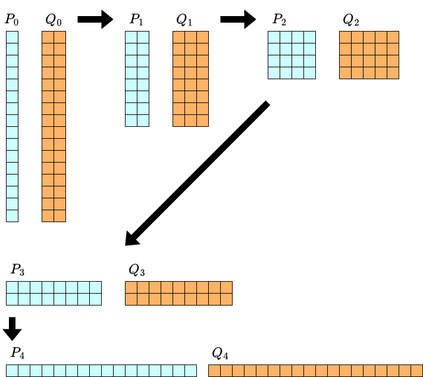
另外，在 $[x^0]f=0$ 时恒有 $[x^0]Q_k=1$，输出内容就只是 $P_k(x,y)$。一般的 power projection 可通过 $\sum_j w_j[x^j](f(x)+c)^i=i!\cdot \sum_{p+q=i}\dfrac{w_j}{p!}[x^j]f(x)^p\cdot \dfrac{c^q}{q!}$ 等变形归约到 $[x^0]f=0$ 的情形，因此也可以专门实现 $[x^0]f=0$ 的情形（本篇给出的实现示例就是这么做的）。分析复杂度时，考虑各 $P_k, Q_k$ 的次数。例如 $n=16$ 时如下。请将行 $i$、列 $j$ 理解为存在 $x^iy^j$ 项。
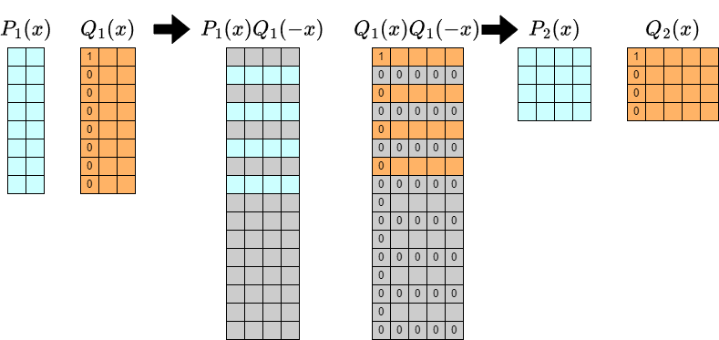
关于 $y$ 的次数，随着计算推进每次翻倍；而关于 $x$ 的次数每次减半。因此在迭代的每一阶段，需要保留的项数始终为 $\Theta(n)$ 个。这种形态的二变量多项式之积（二维卷积）可在 $\Theta(n\log n)$ 时间内完成。迭代 $\log_2 n$ 次后，最后再做一次 $m-1$ 次的 FPS 除法，整体复杂度即为 $\Theta(n\log^2 n + m\log m)$。下面更详细地看上面算法的每一轮迭代。
所计算内容的 $y$ 方向长度变成了 $2^k+1$，这看起来很不适合卷积，直接算会恶化常数倍。
另一方面，由 $Q(x,y)=1-yf(x)$ 可知恒有 $[y^0]Q_k=1$。因此 $Q_k$ 次数带来的麻烦，可以通过对 $[y^0]$ 部分做适当特殊处理来解决。
不过这样一来，统一处理的部分次数变为 $[1, 2^k]$，在实现上会成为麻烦之处；对此，“考虑 $y$ 方向 reverse 后的东西”可以实现简洁的实现。这并非优化所必需，但我也觉得这样好理解很多，所以本篇也采用。
对算法本身做一点修正，如下：
令 $P_0(x,y)=g(x), Q_0(x,y)=-f(x)+y, n_0=n$。
反复通过下式定义 $P_k, Q_k$，直到 $n_k=1$：
- 从 $P_k(x,y)Q_k(-x,y)$ 中取出关于 $x$ 的奇次部分，取 $n_k/2$ 项作为 $P_{k+1}(x,y)$。
- 从 $Q_k(x,y)Q_k(-x,y)$ 中取出关于 $x$ 的偶次部分，取 $n_k/2$ 项作为 $Q_{k+1}(x,y)$。
- 令 $n_{k+1}=n_k/2$。
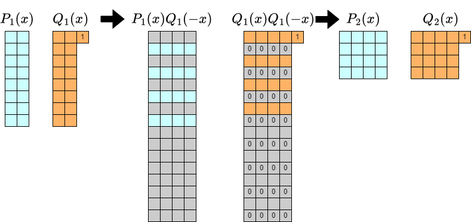
当 $n_k=1$ 时，将 $P_k(x,y), Q_k(x,y)$ reverse 后的东西记为 $p(y), q(y)$（更形式地如 $p(y)=y^{n-1}P_k(x,1/y)$ 等），输出 $p(y)q(y)^{-1}$ 到 $m-1$ 次。这样，每个时刻 $Q_k$ 关于 $y$ 的最高次项变为唯一的项 $y^{2^k}$，实现方针变为：对 $[0,2^k-1]$ 部分适当做卷积，同时对 $2^k$ 次部分做适当特殊处理。
如果不特别关心加速，基于上述理解来实现即可。虽然需要二维卷积，但例如可像下面的实现示例那样，将二变量多项式的 $(i,j)$ 分量对应到一变量多项式的 $Wi+j$ 分量，从而归约到一维卷积；即使没有丰富的库也能简单实现。
实现示例（1083ms）：https://judge.yosupo.jp/submission/203740
上面的实现示例为了让算法动作易懂，先把二维数组转成一维数组，卷积后再转回二维数组。也可以从一开始就全部用一维数组实现，例如可以像下面这样。虽然运行时间改善不大，但我觉得能相当程度地节省内存（并简化实现）。
实现示例（1042ms）：https://judge.yosupo.jp/submission/203746
利用 FFT 加速 Power Projection（案1）
当能进行多项式的 FFT 时，可以实现常数倍更好的实现。许多加速手法与下题相通：
https://judge.yosupo.jp/problem/kth_term_of_linearly_recurrent_sequence
因此若对上述讨论不熟，也许可以先去攻克该题的加速。下面这份资料应该也有帮助：
https://noshi91.hatenablog.com/entry/2023/12/10/163348
将关于 $x$ 为 $a-1$ 次、关于 $y$ 为 $b-1$ 次的多项式称为型 $(a,b)$ 的多项式。
设每轮迭代开始时，$P=P_k, Q=Q_k$ 的型为 $(n,m)$。记 $R(x)=Q(-x)$。所求为 $P(x)R(x)$ 或 $Q(x)R(x)$ 的适当部分。
$P(x)R(x)$ 与 $Q(x)R(x)$ 可按如下步骤计算：
- 将 $P(x),Q(x),R(x)$ 补零扩展到型 $(2n,2m)$。给 $[x^0]Q(x)$ 加上 $y^m$。
- 计算将 $P,Q,R$ 在长度 $(2n,2m)$ 下傅里叶变换后的 $\mathcal{F}[P], \mathcal{F}[Q], \mathcal{F}[R]$。可沿各轴方向做 FFT 得到。
- $\mathcal{F}[P]$ 与 $\mathcal{F}[R]$ 的逐点乘积就是 $PR$ 的傅里叶变换 $\mathcal{F}[PR]$，对其做逆傅里叶变换即得到 $PR$。
- $QR$ 同理。逆傅里叶变换的输出是 $Q(x)R(x)$ 在长度 $(2n,2m)$ 下的循环卷积，因此本应为 $y^{2m}$ 的项变成了 $1$，需要修正。
因此似乎需要 3 次傅里叶变换、2 次逆变换；但进一步利用如下性质可将傅里叶变换次数降到 2 次：
$\mathcal{F}[R]$ 可由 $\mathcal{F}[Q]$ 读出。特别是，在以 bit reverse 顺序存放傅里叶变换的实现中，$\mathcal{F}[Q]$ 的第 $2i+0$、第 $2i+1$ 个分别与 $\mathcal{F}[R]$ 的第 $2i+1$、第 $2i+0$ 个一致（参考文章中“计算 $f(-x)$ 的 DFT”）。因此在实现中无需定义 $R$ 也不必对其做傅里叶变换。
实现示例（725ms）：https://judge.yosupo.jp/submission/203748
进一步利用参考文章中“只对偶数部分（奇数部分）做 IDFT”的技巧，可直接计算 $P(x)R(x)$ 的奇数部分、$Q(x)R(x)$ 的偶数部分的傅里叶变换。为取出奇数部分需要计算 $\omega_{2n}^{n+j}$ 部分，所以预先计算好。之后做逆变换取上半部分即可。
实现示例（586ms）：https://judge.yosupo.jp/submission/203750
进一步关注每轮迭代的开头与结尾，会发现进行了“对长度 $2m$ 的列做逆傅里叶变换，再对它做长度 $4m$ 的傅里叶变换”的处理。这可用参考文章中“2 倍长度的 DFT 的计算”的方法加速。始终只保留 $P, Q$ 在 $y$ 方向傅里叶变换后的值，用这种 doubling 代替 $y$ 方向的傅里叶变换，并省去最后的傅里叶逆变换。注意 $Q(x,y)$ 中 $y^m$ 部分的补正也需据此修改。
这也应是减少 FFT 总量的常数倍加速，但比我预想的运行速度改善要小。
实现示例（574ms）https://judge.yosupo.jp/submission/203752
另外，除了 $y$ 方向的 doubling 之外，计算对每个 $j$ 是独立的。比起对每个 $j$ 一步步算，把它们汇总起来做能减少内存重排等，性能更好。
实现示例（501ms）https://judge.yosupo.jp/submission/203753
把它用一维数组适当改写成省内存的实现后，变成了下面这样。
实现示例（477ms）https://judge.yosupo.jp/submission/203754
利用 FFT 加速 Power Projection（案2）
本篇开头介绍的实现示例，采用了将二维卷积归约到一维卷积的方法。
实现示例（1042ms）https://judge.yosupo.jp/submission/203746
若让二维数组的 $(i,j)$ 分量对应到索引 $2nj+i$ 处，所需操作依然是“卷积后取出奇偶的适当一方”。因此即便采用这种实现方针，也能利用 FFT 的性质加速。
实现示例（531ms）https://judge.yosupo.jp/submission/203785
其算术运算次数应比（案1）多，但瓶颈部分每轮迭代只是调用长度 $4n, 2n$ 的 FFT 各 2 次，这种简单的处理，结果达到了与（案1）接近的运行时间。
实现的简洁性与性能的良好兼顾得相当不错，可能挺好的。
评论
Power Projection 算法·实现的基础讲解到此为止。受限于我的能力和时间，无法讲解能达到 Library Checker 最速程度的精炼实现，但我认为重要的思想已大致介绍到了。
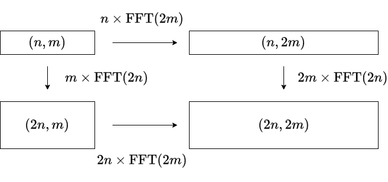
接下来简单说一下想要进一步加速时可能的方向。这些我并没有全部实现。对型 $(n,m)$ 的多项式在长度 $(2n,2m)$ 下做 FFT 时，做 FFT 的轴顺序有优化空间。如上图，两种计算方法会产生 $n\mathrm{FFT}(2m)-m\mathrm{FFT}(2n)$ 的复杂度差。若把 $\mathrm{FFT}(n)$ 估计为 $n\log n$ 的常数倍，则先处理较长方向的 FFT 会更快（Nachia 的想法）。
频繁出现“对二维数组的所有列（或一维数组每隔 $k$ 个取出的东西）做某操作”的计算。若将 FFT 实现泛化到适应这种情况，可能减少内存搬移次数从而加速。
本篇介绍的实现中，始终持有 $y$ 方向傅里叶变换后的值。也可以考虑同时持有 $x$ 方向傅里叶变换后的值。我也探讨过这种方法，但没能降低复杂度（会是同程度）。如果能做到下面这一点我认为能改善复杂度，但我觉得很难：
给定长度 $2n$ 的列 $(a_0, \ldots, a_{2n-1})$ 的傅里叶变换，想求长度 $2n$ 的列 $(a_0, \ldots, a_{n-1}, 0, \ldots, 0)$ 的傅里叶变换。能否以优于 $2\times\mathrm{FFT}(2n)$ 的复杂度做到？
这里介绍了若干实现，但请注意，巧妙利用傅里叶变换性质的加速实现，依赖于“多项式的 FFT 可行”这一系数环的性质。若考虑竞技编程中的使用，例如会变成“在 $\mod 998244353$ 下可用但在 $\mod 1000000007$ 下不可用”的实现。像最初介绍的那类只用 convolution 的实现，只要系数环上能做 convolution 就能用，从这个意义上库的准备比较简单。
下一篇 → FPS 复合·反函数讲解（2）利用转置原理推导复合算法
第7篇（英文）：FPS 复合与反函数（第1部分）
原文为英文（maspy 用英文撰写的第6篇对应文章）。其内容与第6篇（日文）一致，此处保留英文原文。对应的日文版翻译见第6篇。 Japanese Version → FPS 合成・逆関数の解説（１）逆関数と Power Projection
(Part 1) Compositional Inverse and Power Projection (Here) (Part 2) Composition Algorithm via Transposition Principle
Overview
noshi91 has presented a method to compute the Composition and Compositional Inverse of formal power series in $\Theta(n\log^2 n)$ time.
https://noshi91.hatenablog.com/entry/2024/03/16/224034
This method offers a simple algorithm for fundamental problems, improving upon known computational complexity and attracting considerable attention both domestically and internationally.
Subsequently, there have been discussions, utilizing the transposition principle for simpler derivations of the algorithm of Composition (by Elegia, hos_lyric), and algorithms have been implemented with good performance (by Nachia and others). Feeling a lack of articles explaining these matters, I’ve decided to provide some explanation.
I plan to divide the explanation into two parts, (1) and (2). In this article (1), I will cover the Compositional Inverse, and Power Projection used in the implementation of Compositional Inverse. In article (2), I will discuss the derivation and implementations of the Composition algorithm using the transposition principle.
In this article, we assume that convolution of polynomials can be implemented in $\Theta(n\log n)$ time. If you are interested in using it for competitive programming, it is acceptable to consider choosing a prime number $p$ and working with coefficients modulo $p$.
I denote formal power series as FPS. I will use the notation FFT without distinguishing between FFT and NTT (however, in my source code, I use the term NTT).
Reference
https://noshi91.hatenablog.com/entry/2024/03/16/224034 （noshi91, in Japanese）
https://arxiv.org/abs/2404.05177 （noshi91, Elegia） The Composition algorithm is explained without using the transposition principle.
Library Checker We can verify these alrogithms.
https://judge.yosupo.jp/problem/composition_of_formal_power_series_large
https://judge.yosupo.jp/problem/compositional_inverse_of_formal_power_series_large
FPS composition f(g(x)) の実装について （Nachia, in Japanese） Nachia’s notes on the implementations of FPS composition. Nachia achieved the fastest implementation as March 2024 for the problems on Library Checker.
On implementing O(nlog(n)^2) algorithm of FPS composition （hly1024, codeforces blog）
Why is no one talking about the new fast polynomial composition algorithm? （Kapt, codeforces blog）
Compositional Inverse and Power Projection
Let $f$ be an FPS such that $[x^0]f=0$ and $[x^1]f\neq 0$. It can be proven that there exists a unique FPS $g$ satisfying $g(f(x))=f(g(x))=x$, and it is called the compositional inverse of $f$.
Let $c=[x^1]f$. It is easy to see that if $f(x)/c$ has a compositional inverse $g(x)$, then $g(x/c)$ will be the compositional inverse of $f(x)$. Therefore, the problem of find the compositional inverse can be reduced to the case where $[x^1]f=1$.
In this case, the compositional inverse $g$ satisfies $[x^0]g=0$ and $[x^1]g=1$.
Given the parts of $f$ up to degree $n$, we aim to find the parts of $g$ up to degree $n$. According to the Lagrange inversion formula, for any $i$,
holds. If we can compute the left-hand side for $i=1,\ldots,n$, then we can obtain $(g(x)/x)^{-n}$ up to the degree $n-1$. Taking the $-1/n$ -th power, we can find $g(x)/x$ up to the degree $n-1$ (note that $[x^1]g=1$ is required for defining the $-1/n$ -th power and ensuring it matches $g(x)/x$). Thus $g(x)$ can be computed up to degree $n$.
Ultimately, the problem of finding the compositional inverse can be reduced to the following computation:
Compute $[x^n]f(x)^i$ for $i=1,\ldots,n$.
This is a special case of a problem called Power Projection, which is explained below. The method by noshi91 solves Power Projection in $\Theta(n\log^2 n + m\log m)$ time. Therefore, the problem of finding the compositional inverse can be solved in $\Theta(n\log^2 n)$ time.
Next, we will explain algorithms for solving Power Projection and how to implement it with good performance.
Power Projection Algorithm
Let’s consider the following problem of enumerating a linear combination (projection) of powers of an FPS with some weights:
[Power Projection] Given a sequence $(w_0, \ldots, w_{n-1})$ and an FPS $f(x)$, compute the following for $i=0, \ldots, m-1$: $\sum_{j=0}^{n-1}w_j\cdot [x^j]f(x)^i$.
In this article, for the sake of simplicity, we assume that $n$ is a power of $2$. If necessary, we can reduce it to this case by appending $0$s to the end of $f$ and $w$. (Not only does this simplify the explanation, but it also slightly reduces the number of cases in the implementation without significantly changing the constant factors in computational complexity).
If we consider $g(x)=\sum_{j=0}^{n-1}w_{n-1-j}x^j$ instead of $w_j$, the problem can be rephased as follows:
Given FPS $f(x), g(x)$, compute $[x^{n-1}]g(x)f(x)^i$ for $i=0,\ldots,m-1$.
By considering $2$-variable FPS, we have $g(x)f(x)^i = [y^i]\dfrac{g(x)}{1-yf(x)}$. Therefore, if we let $P(x,y)=g(x)$ and $Q(x,y)=1-yf(x)$, what we want to compute becomes $[x^{n-1}]P(x,y)Q(x,y)^{-1}$．
We compute this by using the same technique as the Bostan-Mori’s algorithm, namely the $Q(x)Q(-x)$ technique (Graeffe’s method).
Assuming that $n$ is a power of $2$ not less than $2$, we utilize the following equation:
The product $Q(x,y)Q(-x,y)$ is an even function of $x$, and there exists some $Q_1(x,y)$ such that $Q(x,y)Q(-x,y)=Q_1(x^2,y)$. If we decompose the part of $P(x,y)Q(-x,y)$ into odd and even degree terms with respect to $x$ as $P(x,y)Q(-x,y) = xP_1(x^2,y)+P_2(x^2,y)$, then we have:
Given that $n\geq 2$ is a power of $2$, it is clear that $[x^{n-1}]P_2(x^2,y)Q_1(x^2,y)^{-1}$ is equal to $0$. Hence
It’s worth noting that for $P_1$ and $Q_1$, we only need to keep terms up to degree $n/2-1$.
This transformation preserves the form of the problem while reducing the size of $n$ by half. By repeating it $\log_2n-1$ times, we can reduce the problem to the case of $n=1$. When $n=1$, we are left with the problem of “Find $p(y)/q(y)$ up to degree $m-1$”, which is simply FPS division. In summary, the following algorithm roughly provides the solution.
Let $P_0(x,y)=g(x), Q_0(x,y)=1-yf(x), n_0=n$.
Define $P_k$ and $Q_k$ as follows, until $n_k=1$.
- Extract $n_k/2$ terms of the odd-degree part with respect to $x$ from $P_k(x,y)Q_k(-x,y)$ and let it be $P_{k+1}(x,y)$.
- Extract $n_k/2$ terms of the even-degree part with respect to $x$ from $Q_k(x,y)Q_k(-x,y)$ and let it be $Q_{k+1}(x,y)$.
- Let $n_{k+1}=n_k/2$.
When we reach $n_k=1$, $P_k(x,y)Q_k(x,y)^{-1}$ is just a division of $1$-variable FPS. Compute this up to degree $m-1$ and output it.
Furthermore, in the case where $[x^0]f=0$, it always holds that $[x^0]Q_k=1$, and the desired output is simply $P_k(x,y)$. General power projection can be reduced to the case of $[x^0]f=0$ by using equations such as $\sum_j w_j[x^j](f(x)+c)^i=i!\cdot \sum_{p+q=i}\dfrac{w_j}{p!}[x^j]f(x)^p\cdot \dfrac{c^q}{q!}$. Therefore, it may be a good idea to specialize the implementation for the case of $[x^0]f=0$, and reduce to it if neccesary. (The sample code I introduce in this article follow this approach. )
To analyze the computational complexity, let’s consider the degrees of each $P_k$ and $Q_k$. For example, when $n=16$, it looks like the figure below. In this figure, there is a term of $x^iy^j$ in row $i$ and column $j$.
 As we proceed with the computation, the degree with respect to $y$ doubles with each iteration. On the other hand, the degree with respect to $x$ halves each time. Therefore, at each stage of the iteration, the number of terms to be retained is always $\Theta(n)$. Multiplication of such two-variable polynomials (2D convolution) can be performed in $\Theta(n\log n)$ time. We need to perform this iteration $\log_2 n$ times and an FPS division up to degree $m-1$. Thus the overall computational complexity becomes $\Theta(n\log^2 n + m\log m)$.
As we proceed with the computation, the degree with respect to $y$ doubles with each iteration. On the other hand, the degree with respect to $x$ halves each time. Therefore, at each stage of the iteration, the number of terms to be retained is always $\Theta(n)$. Multiplication of such two-variable polynomials (2D convolution) can be performed in $\Theta(n\log n)$ time. We need to perform this iteration $\log_2 n$ times and an FPS division up to degree $m-1$. Thus the overall computational complexity becomes $\Theta(n\log^2 n + m\log m)$.
Let’s take a closer look at each iteration of the algorithm described above.
 The length of $Q_k$ in the $y$ direction is $2^k+1$, which seems not well-suited for convolution and might worsen the constant factors.
The length of $Q_k$ in the $y$ direction is $2^k+1$, which seems not well-suited for convolution and might worsen the constant factors.
On the other hand, since $Q(x,y)=1-yf(x)$, $[y^0]Q_k$ is always $1$. Therefore, handling the troublesome degree of $Q_k$ can be resolved by properly handling the $[y^0]$-part.
However, handling parts with unified treatment where degree ranges from $[1,2^k]$ might become cumbersome in the implementation. To address this, considering the “reverse” in the $y$ direction could lead to a more concise implementation. Although this is not nesessary for optimization purposes, I’ll include it in this article for ease of understanding.
Let’s make a slight modification to the algorithm.
Let $P_0(x,y)=g(x), Q_0(x,y)=-f(x)+y, n_0=n$．
Define $P_k$ and $Q_k$ as follows, until $n_k=1$.
- Extract $n_k/2$ terms of the odd-degree part with respect to $x$ from $P_k(x,y)Q_k(-x,y)$ and let it be $P_{k+1}(x,y)$.
- Extract $n_k/2$ terms of the even-degree part with respect to $x$ from $Q_k(x,y)Q_k(-x,y)$ and let it be $Q_{k+1}(x,y)$.
- Let $n_{k+1}=n_k/2$.
When we reach $n_k=1$, let $p(y), q(y)$ be the reverses of $P_k(x,y), Q_k(x,y)$ (more formally, $p(y)=y^{n-1}P_k(x,1/y)$ and so on ). Then output $p(y)q(y)^{-1}$ up to degree $m-1$.
 Then, at each stage, the highest degree term of $Q_k$ with respect to $y$ becomes the unique term $y^{2^k}$ and the implementations strategy involves convolving the degree range $[0,2^k-1]$ while handling the $2^k$-degree part accordingly.
Then, at each stage, the highest degree term of $Q_k$ with respect to $y$ becomes the unique term $y^{2^k}$ and the implementations strategy involves convolving the degree range $[0,2^k-1]$ while handling the $2^k$-degree part accordingly.
If you’re not particularly concerned about performance tuning, implementing based on the understanding so far should suffice. While 2D convolution is required, you can easily implement it even without 2D convolution library by reducing it to a one-dimensional convolution, by associating the $(i,j)$-th term of the $2$-variable polynomial with $(2ki+j)$-th term of the $1$-variable polynomial, as demonstrated in the following sample code.
Sample Code（1083ms）：https://judge.yosupo.jp/submission/203740
In the above sample code, to make the algorithm’s operations more understandable, we convert the two-dimensional array into a one-dimensional array, perform convolution, and then convert it back to a two-dimensional array. However, it’s also possible to implement everything directly using a one-dimensional array from the begining as the following sample code. While it doesn’t significantly improve execution time, it saves a considerable amount of memory and simplifies the implementation.
Sample Code（1042ms）：https://judge.yosupo.jp/submission/203746
Speeding up Power Projection using FFT (Proposal 1)
When polynomial FFT is feasible, it enables better implementations in terms of constant factors. Many acceleration technique are common with the problem:
https://judge.yosupo.jp/problem/kth_term_of_linearly_recurrent_sequence
So, if you’re not familiar with the following discussion, it might be good to tackle the acceleration of this problem first.
The following resource may also be helpful (in Japanese).
https://noshi91.hatenablog.com/entry/2023/12/10/163348
Let’ｓdefine a polynomial of degree $a-1$ with respect to $x$ and degree $b-1$ with respect to $y$ as a polynomial of shape $(a,b)$.
At the beginning of each iteration, let’s assume that $P=P_k$ and $Q=Q_k$ have shapes $(n,m)$. We denote $R(x)=Q(-x)$. We want to extract appropriate parts of $P(x)R(x)$ and $Q(x)R(x)$.
$P(x)R(x)$ and $Q(x)R(x)$ can be computed as follows:
- Extend $P(x),Q(x)$ and $R(x)$ to shape $(2n,2m)$ by zero-padding. Add $y^m$ to $[x^0]Q(x)$ and $[x^0]R(x)$.
- Compute the Fourier transforms $\mathcal{F}[P], \mathcal{F}[Q]$ and $\mathcal{F}[R]$ of $P,Q$ and $R$ respectively, at length $(2n,2m)$. This can be done by performing FFT along each axis.
- The pointwise multiplication of $\mathcal{F}[P]$ and $\mathcal{F}[R]$ gives the Fourier transform $\mathcal{F}[PR]$ of $PR$. We can obtain $PR$ by inverse Fourier transform.
- Similarly, $QR$ can be obtained. The output of the inverse Fourier transform is a circular convolution of length $(2n,2m)$ of $Q(x), R(x)$. Therefore, wee need to adjust the term that should be $y^{2m}$ from $1$.
Thus, it seems that three Fourier transforms and two inverse transforms are needed. However, we can reduce the number of Fourier transform to two by using the following property:
$\mathcal{F}[R]$ can be inferred from $\mathcal{F}[Q]$. In particular, in implementations where the Fourier transform is arranged in bit-reversed order, there is a simple correspondence where the $2i+0$-th and $2i+1$-th elements of $\mathcal{F}[Q]$ match the $2i+1$-th and $2i+0$-th elements of $\mathcal{F}[R]$, respectively (We can prove it easily from the definition). Therefore, there is no need to define $R$ or calculate its Fourier transform within the implementation.
Sample Code（725ms）：https://judge.yosupo.jp/submission/203748
Furthermore, there is a technique to extract only the even and odd parts of the Fourier transform from the Fourier transform of the entire sequence.
This is explained in the reference 「偶数部分 (奇数部分) だけ IDFT」. Let me explain this for English readers.
Let $f$ be a polynomial of degree $2n$, and suppose $f(x)=f_0(x^2)+xf_1(x^2)$. Given the Fourier transform $\mathcal{F}[f(x)]$ of $f$ of length $2n$. As mentioned above, there is a simple relationship between the Fourier transforms $\mathcal{F}[f(x)]$ and $\mathcal{F}[f(-x)]$, where every $2i$-th and $2i+1$-th elements are swapped.
Therefore, by adding and subtracting these, we can obtain $\mathcal{F}[f(x)\pm f(-x)]$. Consequently, we can obtain $\mathcal{F}[f_0(x^2)]$ and $\mathcal{F}[xf_1(x^2)]$. Recalling that the Fourier transform is a kind of multipoint evaluation, we can obtain the Fourier transform of $f_0(x)$ and $f_1(x)$ of length $n$, by extracting some part of them and rescale it if necessary.
By using this method to extract the Fourier transform of the odd and even parts of $P(x)Q(-x)$ and $Q(x)Q(-x)$, we can halve the length of the inverse Fourier transform that needs to be performed.
Sample Code（586ms）：https://judge.yosupo.jp/submission/203750
Furthermore, if we focus on the beginning and end of each iteration, we can see that the process involves “performing an inverse Fourier transform on a sequence of length $2m$, then Fourier transforming it with a length of $4m$”.
This can be sped up using the method described in the reference 「2 倍の長さの DFT の計算」. Again, I explain it for English readers.
Let $\omega$ be a primitive $2n$-th root of unity. Then Fourier transform of length $n$ can be considered as computing $f(\omega^{2k})$ for each $k$. If we know the Fourier transform of length $n$, to obtain the Fourier transform of length $2n$, we need to compute $f(\omega^{2k+1})$ for each $k$, which corresponds to the Fourier transform of length $n$ for $f(\omega x)$.
Therefore, if the Fourier transform of length $n$ is known, obtaining the Fourier transform of length $2n$ simply requires computing the Fourier transform of $f(\omega x)$ with length $n$, effectively halving the length of the required Fourier transforms.
To improve the performance, I modified the algorithm to always retain only the Fourier transforms of $P$ and $Q$ in the $y$ direction. Instead of performing Fourier transforms in the $y$ direction, we apply the doubling technique described here. We then omit the final inverse Fourier transform step. It’s important to note that the correction of the $y^m$ part of $Q(x,y)$ needs to be adjusted accordingly.
While this adjustment should result in a constant factor speedup by reducing the overall amount of FFT operations, the improvement in execution speed was less significant than I initially expected.
Sample Code（574ms）https://judge.yosupo.jp/submission/203752
Note that the calculations, excluding the doubling in the $y$ direction, are independent for each $j$. Combining calculations for each individual $j$ at once results in better performance than computing one step at a time for all $j$.
Sample Code（501ms）https://judge.yosupo.jp/submission/203753
By implemented this with a one-dimensional array, it becomes the following sample code:
Sample Code（477ms）https://judge.yosupo.jp/submission/203754
Speeding up Power Projection using FFT (Proposal 2)
The first sample code in this article used a method to reduce 2D convolution to 1D convolution.
Sample Code（1042ms）https://judge.yosupo.jp/submission/203746
If we correspond the $(i,j)$ entry of a 2D array to the $(2nj+i)$-th entry (with the inner index being $i$), the required operations still involve extracting the appropriate parity after convolution. Therefore, even with this approach, we can use techniques to reduce the number of FFTs.
Sample Code（531ms）https://judge.yosupo.jp/submission/203785
Although the number of arithmetic operations may be higher than in Plan 1, the processing bottleneck involves simple operations of calling FFTs of length $4n$ and $2n$ twice each in each iteration, resulting in execution times close to those of Proposal 1. Overall, it strikes a balance between succinct implementation and good performance.
Comments
The basic explanation of the Power Projection algorithm and its implementation ends here. Due to my limitations in ability and time, I couldn’t explain a refined implementation that would achieve the fastest speed on the Library Checker, but I believe I’ve introduced the important concepts to a reasonable extent.
Now, let me briefly mention the directions one could consider for further optimization if aiming for even higher speeds. I haven’t implemented all of these myself.
When performing FFT on a polynomial of shape $(n,m)$ with a shape of $(2n,2m)$, there is room for optimization in the order of the axes on which FFT is performed.
 As shown in the figure above, there is a difference in computational complexity between the two calculation methods, $n\mathrm{FFT}(2m)-m\mathrm{FFT}(2n)$. Assuming $\mathrm{FFT}(n)$ is estimated to be a constant multiple of $n\log n$, it is believed that processing the FFT in the longer direction first would be faster (Nachia’s idea).
As shown in the figure above, there is a difference in computational complexity between the two calculation methods, $n\mathrm{FFT}(2m)-m\mathrm{FFT}(2n)$. Assuming $\mathrm{FFT}(n)$ is estimated to be a constant multiple of $n\log n$, it is believed that processing the FFT in the longer direction first would be faster (Nachia’s idea).
There are frequent computations that involve performing operations on all columns of a two-dimensional array (or on every $k$-th element from a one-dimensional array). Generalizing the implementation of FFT to accommodate such cases may reduce the number of memory transfers and potentially lead to speedups.
In the implementation introduced in this article, we always maintain values that have undergone Fourier transforms in the $y$ direction. Additionally, there’s also the possibility of maintaining values that have undergone Fourier transforms in the $x$ direction. I considered this approach as well, but I couldn’t reduce the computational complexity significantly (it remains comparable).
We have introduced several implementations so far, but it’s important to note that the efficiency improvements achieved by leveraging the properties of the Fourier transform depend on the properties of the coefficient ring, particularly the ability to perform FFT on polynomials. For those considering its use in competitive programming, it’s worth noting that an implementation may work under one modulus (e.g., $\mod 998244353$) but not under another (e.g., $\mod 1000000007$). For implementations that only involve convolution, like the one introduced initially, as long as convolution is feasible in the coefficient ring, it’s relatively straightforward to utilize.
(Part 2) Composition Algorithm via Transposition Principle
第8篇：FPS 复合与反函数讲解（2）基于转置原理的复合算法推导
英文版本 → FPS Composition and Compositional Inverse (Part 2)
本篇目录：概要 / 参考文献 / 转置映射与转置原理 / Power Projection 的转置与复合 / Power Projection 转置算法（整体概览）/ Power Projection 转置算法（实现示例）/ 卷积的转置（middle product）/ middle product 的计算（推导1）/ middle product 的计算（推导2）/ 傅里叶变换的转置 / bit reversed FFT 的转置 / 复合的实现示例（完成版）
概要
这是续篇。
前一篇 → FPS 复合·反函数讲解（1）反函数与 Power Projection
设 $f(x), g(x)$ 为 FPS，在满足下列任一条件时，复合 $f(g(x)) = \sum_{i=0}^{\infty}([x^i]f)g(x)^i$ 被定义：
- $f$ 是多项式。
- $[x^0]g=0$。
本篇介绍：当输入 $f(x), g(x)$ 的 $n-1$ 次以下部分时，在 $\Theta(n\log^2n)$ 时间内求出 $f(g(x))$ 的 $n-1$ 次以下部分的算法，以及能一定程度高速运行的实现。
简而言之，前篇讲解的 Power Projection 正是复合的转置问题；因此复合算法可通过取 Power Projection 算法的转置来推导。所以若熟悉转置原理，本篇内容应都能自行轻松推导。
我认为即便是本篇的读者，也有很多人没学过转置原理、没把它用于算法推导，所以我的目标是：通过复合算法的推导，让读者也能学到转置原理。
关于转置原理，集合幂级数的 power projection 讲解中也有涉及，本篇有一部分内容与那篇完全相同。
另外，论文 Power Series Composition in Near-Linear Time 中用不借助转置原理的方式讲解了与本篇本质相同的复合算法，建议一并确认。
参考文献
Power Series Composition in Near-Linear Time
Tellegen’s Principle into Practice
多項式環、形式的冪級数環上の線形変換とその転置
転置原理まとめ
转置映射与转置原理
即使不能完全理解转置映射的定义等，我也打算讲解得让大家能理解后面的复合算法推导，所以难的话可以跳过。
转置映射的简单说明就是“用矩阵写出时变成转置矩阵的那个”。不过我不擅长把映射写成矩阵，所以还是用线性映射的语言写一下。
转置映射（抽象定义，可跳过）
设 $K$ 为环，$M, N$ 为自由模，$F\colon M\longrightarrow N$ 为 $K$ 线性映射。此时由 $\phi\mapsto \phi\circ F$ 确定出一个 $K$ 线性映射 $F^{T}\colon \mathrm{Hom}_K(N, K) \longrightarrow \mathrm{Hom}_K(M, K)$，称为 $F$ 的转置映射。
这就是抽象定义。
转置映射（按分量定义）
设 $K$ 为环，$F\colon K^n\longrightarrow K^m$ 为 $K$ 线性映射。$F$ 的转置映射 $F^{T}\colon K^m\longrightarrow K^n$ 是由下式唯一确定的线性映射：
对 $(x_1, \ldots, x_m)\in K^m$，当 $(g_1, \ldots, g_m) = F(f_1, \ldots, f_n)$ 时，对任意 $(f_i)$ 都满足 $\sum_jx_jg_j = \sum_iy_if_i$ 的 $(y_1, \ldots, y_n)$ 是唯一存在的。将其定义为 $F^{T}(x_1, \ldots, x_m)$。
因此，“计算 $F^{T}(x_1, \ldots, x_m)$”这一问题可理解为“把式子 $\sum_j x_jg_j$ 表成 $\sum_i y_if_i$”。也可看作“求式子 $\sum_j x_jg_j$ 中各个 $f_i$ 的贡献”。
注意，$F$ 与 $F^T$ 的定义域和到达域是互换的，但这与逆映射完全不同。
转置原理
粗略地说，转置原理是指下面两个问题拥有同等复杂度的算法：
- 以 $f = (f_1, \ldots, f_n)$ 为输入，输出 $F(f) = (g_1, \ldots, g_m)$。
- 以 $x=(x_1, \ldots, x_m)$ 为输入，输出 $F^{T}(x) = (y_1, \ldots, y_n)$。
从 $F$ 的算法推导 $F^{T}$ 的算法，原理上应可通过列举 $F$ 的全部算术运算来实现，但算法复杂时这种机械推导很吃力。实际上往往是将算法分解为比算术运算更大一些的步骤，对各步骤的转置问题（不借助转置原理）求解来推导。本篇也用这种步骤推导复合算法。
Power Projection 的转置与复合
首先说明“Power Projection 的转置就是复合”。
重述 Power Projection（与前篇相比改了些记号，序列与 FPS 的长度都省略了，但请都视为 $n$）。
[Power Projection] 给定列 $w=(w_j)$ 与 FPS $g(x)$。对每个 $i$ 求 $\mathrm{PowProj}(w,g)[i] := \sum_{j}w_j[x^j]g(x)^i$。
考虑该问题的转置。严格说这不太准确，因为转置是针对线性映射定义的，而映射 $(w,g)\mapsto \mathrm{PowProj}(w,g)$ 不是线性的。
但若固定 $g$，考虑映射 $\mathrm{P}_g = \mathrm{PowProj}(-,g); w\mapsto \mathrm{PowProj}(w,g)$，这就是线性映射。于是我们看 $\mathrm{P}_g$ 的转置 $\mathrm{P}_g^T$ 是怎样的映射。
基于按分量的定义，对 $f=(f_0,\ldots,f_{n-1})$，$(x_0,\ldots,x_{n-1}) = \mathrm{P}_g^T(f)$ 是对任意 $w$ 都满足 $\sum_{j}w_jx_j = \sum_i f_i\mathrm{P}_g(w)[i]$ 的列。也就是说，“求 $\mathrm{P}_g(w)$”的转置问题“求 $\mathrm{P}_g^T(f)$”可形式化为：
[Power Projection 的转置] 给定 $f,g$。对列 $w$ 考虑值 $X = \sum_i f_i \mathrm{P}_g(w)[i]$。当把它表为 $\sum_{j}w_jx_j$ 时，求 $(x_0,\ldots,x_{n-1})$。
回忆 $\mathrm{P}_g(w)=\mathrm{PowProj}(w,g)$ 的定义：
因此该问题的解显然为 $x_j=[x^j]\sum_if_ig(x)^i=[x^j]f(g(x))$。由此明白了 Power Projection 与复合——更精确地说，固定 $g$ 时的 $w\mapsto \mathrm{PowProj}(w,g)$ 与复合 $f\mapsto f(g(x))$——之间处于转置关系。
 于是根据转置原理，复合也存在与 Power Projection 同等复杂度的算法。下面具体考察该算法的形态。
于是根据转置原理，复合也存在与 Power Projection 同等复杂度的算法。下面具体考察该算法的形态。

Power Projection 转置算法（整体概览）
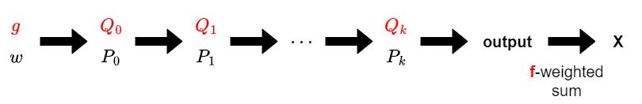
以大致理解 Power Projection 算法为前提，将其表示成下图那样。Power Projection 转置问题，是在给定 $f,g$ 时，求“把 $X = \sum_i f_i \mathrm{P}_g(w)[i]$ 用 $w$ 表示”时的系数。加上计算 $X$ 的步骤会更容易理解。
要解的问题是“给定 $f,g$ 时，把 $X$ 用 $w$ 表示”。注意图中哪些是求解时已知的、哪些不是，这很重要。
图中 $f, g$ 是给定的，而 $Q_i$ 可由 $g$ 算出，所以图中红字给出的量都可视为已知。其余的量都是给定 $w$ 后顺次算出的（更精确地说，是由“已知量”确定的线性映射送过去的计算）。
按下述步骤求解：
- 已知 $X$ 是输出系数 $f_i$ 的线性组合。
- 利用它，求“把 $X$ 表为 $P_k$ 的元素的线性组合”时的系数。
- $\vdots$
- 利用它，求“把 $X$ 表为 $P_0$ 的元素的线性组合”时的系数。
- 利用它，求“把 $X$ 表为 $w$ 的元素的线性组合”时的系数。
 这样逆着原问题的顺序计算（对应于矩阵积转置的性质 $(A_1\cdots A_n)^T=A_n^T\cdots A_1^T$）。
这样逆着原问题的顺序计算（对应于矩阵积转置的性质 $(A_1\cdots A_n)^T=A_n^T\cdots A_1^T$）。
总结起来，复合算法的整体概览可表示为下图：
首先从 $g$ 计算 $Q_0, Q_1, \cdots$，这与 Power Projection 算法完全相同。
接着，顺次从后往前求“把 $X$ 表为 $P_i$ 的元素的线性组合”时的系数 $p_i$。重复此计算最终得到“把 $X$ 表为 $w$ 的元素的线性组合”时的系数，那就是所求的 $f(g(x))$。
Power Projection 转置算法（实现示例）
为简化说明，假设 $[x^0]g=0$ 且 $n$ 为 $2$ 的幂。
要实现的转置算法，需先准备好原算法的实现。
如上所述，计算流程是“从 $g$ 顺次求 $Q_i$，再基于结果从后往前回推”。因此用递归函数实现会很简洁。另外与 Power Projection 不同，计算出 $Q_{i+1}$ 后还会再次使用 $Q_i$ 的值，所以要实现成避免覆盖同一数组反复使用。
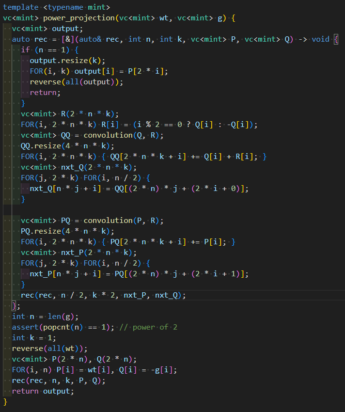
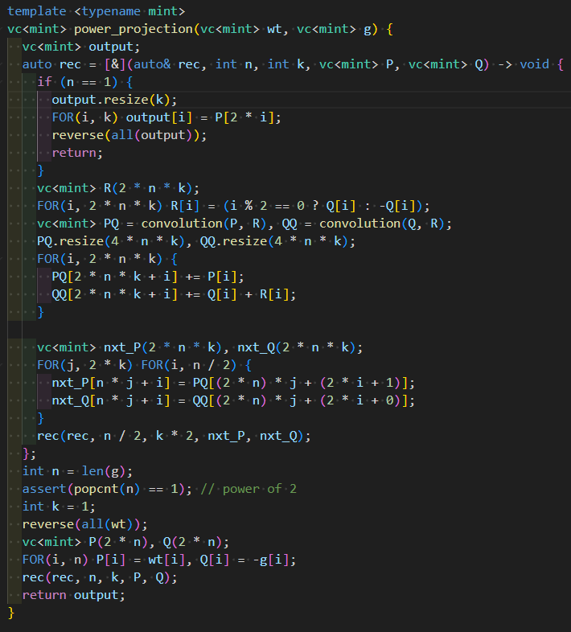
据此我准备了如下实现（若需要模板等信息，请从提交记录里取）。进一步把它分离为对 $Q$ 的计算与对 $P$ 的计算，会更易懂。
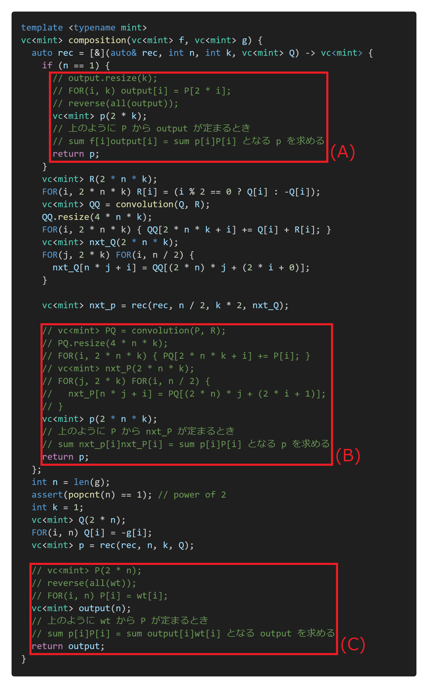
将其改造为复合的实现。把“由 P 求 nxt_P”这类实现，替换为“由 nxt_P 的系数求 P 的系数”这类实现。大致如下实现即可。 有 3 处红框，把这里替换成适当的实现，复合的实现就完成了。它们分别对应整体算法图中的如下部分。
有 3 处红框，把这里替换成适当的实现，复合的实现就完成了。它们分别对应整体算法图中的如下部分。
(A)、(C) 很简单，只要正确理解要算的东西就能马上实现。这种只是把数组对应索引重排的部分，重排到对应位置、其余补 $0$ 返回即可。

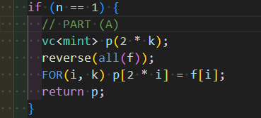
最后考虑 (B) 部分。不知道转置会变成什么样时，可拆成几步来考虑。这里实现为“由 P 确定 PQ”“由 PQ 确定 nxt_P”两步，我们逆着顺序回溯实现。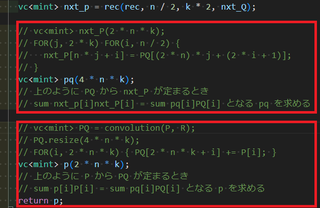
上半部分简单。看下半部分，会发现需要“用 $\mathrm{convolution}(-,R)$ 的转置把 pq 送过去”的处理。这里先放着以后实现，除卷积的转置外，下一节就能完成实现。卷积的转置（middle product）
 设 $a$ 为长度 $n$ 的列，$b$ 为长度 $m$ 的列。则 $c = \mathrm{convolution}(a,b)$ 是由 $c_k=\sum_{i+j=k}a_ib_j$ 确定的长度 $n+m-1$ 的列。
设 $a$ 为长度 $n$ 的列，$b$ 为长度 $m$ 的列。则 $c = \mathrm{convolution}(a,b)$ 是由 $c_k=\sum_{i+j=k}a_ib_j$ 确定的长度 $n+m-1$ 的列。
固定 $b$ 时，$\mathrm{convolution}(-,b); a\mapsto \mathrm{convolution}(a,b)$ 是把长度 $n$ 的列映到长度 $n+m-1$ 的列上的线性映射。考虑该映射的转置映射是怎样的。
它是把长度 $n+m-1$ 的列 $x$ 映到满足 $\sum_{k}c_kx_k = \sum_{i}a_iy_i$ 的列 $y$ 的映射。代入 $c_k = \sum_{i+j=k}a_ib_j$，左边变为 $\sum_{i}\sum_ja_ib_jx_{i+j}=\sum_i a_i(\sum_jb_jx_{i+j})$，于是转置问题变为：
给定长度 $n+m-1$ 的列 $x$，求由 $y_i=\sum_jb_jx_{i+j}$ 确定的长度 $n$ 的列 $y$。
该列 $y$ 也称为 $x, b$ 的 middle product（参考文章中的“middle product”）。
熟悉卷积的读者会注意到，这用卷积就能简单算出：把 $b$ 或 $x$ 中某一个 reverse 后卷积，再收集适当的值输出即可。直接这样实现的话，需要长度约 $n+2m$ 的 FFT。
但 middle product 若实现得当，只用长度约 $n+m-1$ 的 FFT 就能更高速。下面用两种方法讲解。
另外，middle product 不仅在考虑转置问题时常用，很多人可能没意识到自己其实在做普通卷积时也能用上它。
middle product 的计算（推导1）
若把 $b$ reverse，则所求变为 $y_i=\sum_{j}x_{i+j}b_{m-1-j}=\sum_{j+k=m+i-1}x_jb_k$。因此 $x, b$ 卷积后，取出第 $m-1$ 到第 $m+n-2$ 个即可。
利用“卷积后只需少量部分”这一点，可将卷积换成循环卷积。即取满足 $L\geq n+m-1$ 的 $L$，对 $x,b$ 做长度 $L$ 的循环卷积，再取出第 $m-1$ 到第 $m+n-2$ 个。
确实，对 $0\leq j< n+m-1$ 及 $0\leq k<m$，有 $0\leq j+k<n+2m-1\leq L+m$，所以循环卷积中进入第 $m-1$ 到第 $m+n-2$ 个位置的项，与通常卷积中进入该范围的项完全一致。
middle product 的计算（推导2）
注意到 middle product 是卷积的转置，我们用转置原理来推导算法。
卷积可用如下计算步骤求得。
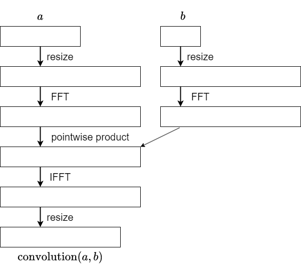
考虑转置时，注意 $b$ 被当作常数。由 $a$ 得到 $\mathrm{convolution}(a,b)$ 的操作，表示为（由 $b$ 确定的）5 个线性映射的复合。转置映射则可表示为这 5 个映射按逆序的复合。对逐点乘积（pointwise product），回忆 $b$ 被当作常数，它就是逐分量的常数倍。因此转置也是同样的常数倍。于是可知如下实现是可行的。
接下来只需知道 FFT、IFFT 的转置是怎样的。这本身也是不限于 middle product 应用的重要问题，下节另作说明。

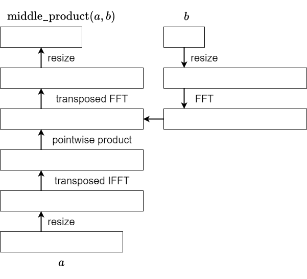
傅里叶变换的转置
设 $a$ 为长度 $n$ 的列，固定 $1$ 的 $n$ 次本原根 $\omega$，则 $\mathcal{F}[a]_i=\sum_{j}\omega^{-ij}a_j$ 确定的列 $\mathcal{F}[a]$ 称为 $a$ 的傅里叶变换。傅里叶变换等价于乘一个对称矩阵，所以傅里叶变换的转置就是傅里叶变换本身。
逆傅里叶变换由 $\mathcal{F}^{-1}[a]_i = \dfrac{1}{n}\sum_j\omega^{ij}a_j$ 定义，是傅里叶变换的逆操作。它也是乘对称矩阵，所以逆傅里叶变换的转置就是逆傅里叶变换本身。
注意，这些定义（比如 $1/n$ 加在哪边等）在不同文献中略有差异，请留意。
大体如上就对了，但也有注意点。
当前广泛使用的 FFT 实现（如 AtCoder Library）输出的是按 bit 反序（bit-reversed）排列的列。因此依 FFT 实现不同，它自身未必等于自己的转置。
bit reversed FFT 的转置
设 $n=2^k$ 为 $2$ 的幂，$\mathrm{rev}(i)$ 为 $i$ 的二进制前 $k$ 位的 bit 反序。定义 bit reversed FFT、bit reversed IFFT 如下（严格说 FFT 指算法而非变换本身，但这里放宽理解）：
- bit reversed FFT：输入列 $a$，输出由 $b_i = \sum_j \omega^{-\mathrm{rev}(i)\cdot j}a_j$ 确定的列 $b$。
- bit reversed IFFT：输入列 $b$，输出由 $a_i = \dfrac{1}{n}\sum_{j} \omega^{i\cdot \mathrm{rev}(j)}b_j$ 确定的列 $a$。
于是它们的转置是如下变换：
- transposed bit reversed FFT：输入列 $b$，输出由 $a_i = \sum_j \omega^{-i\cdot \mathrm{rev}(j)}b_j$ 确定的列 $a$。
- transposed bit reversed IFFT：输入列 $a$，输出由 $b_i = \dfrac{1}{n}\sum_j \omega^{\mathrm{rev}(i)\cdot j}a_j$ 确定的列 $b$。
对比可见，“bit reversed FFT”与“transposed bit reversed IFFT”、“bit reversed IFFT”与“transposed bit reversed FFT”几乎一模一样。差别仅在于整体的 $\dfrac{1}{n}$ 与指数的 $-1$ 倍，因此得到如下结论：
- transposed bit reversed FFT 是：将 bit reversed IFFT 的结果除首元素外 reverse 后乘以 $n$。
- transposed bit reversed IFFT 是：除首元素外 reverse，再对其做 bit reversed FFT，然后乘以 $1/n$。
出现“除首元素外 reverse”这一操作，是因为由 $\omega^{-i} = \omega^{n-i}$ 把第 $i$ 个送到第 $n-i$ 个。
复合的实现示例（完成版）
篇幅很长，但到此复合的实现已完成。下面实现严格按本篇说明编写。
实现示例（1035ms）https://judge.yosupo.jp/submission/204008
与作为基础的 Power Projection 实现（逆函数，1042ms）运行时间大致相同（逆函数那篇因在 Power Projection 之后还要算一次 FPS 的 pow，所以稍慢）。
另外，本篇为简化说明，采用了 $n$ 为 $2$ 的幂、$[x^0]g=0$ 等假设的实现，反映到自己的库时请注意这些点。
本篇选取一个 Power Projection 实现，应用转置原理实现了复合。当然，若从复杂度更好的 Power Projection 实现出发，能得到更高速的复合实现。例如从前篇（2）中介绍的（案2）实现（逆函数，531ms）出发，得到了实现示例（479ms）。作为转置原理的练习请尝试一下。
第9篇（英文）：FPS 复合与反函数（第2部分）
原文为英文（maspy 用英文撰写的第8篇对应文章）。其内容与第8篇（日文）一致，此处保留英文原文。对应的日文版翻译见第8篇。 日本語版 → FPS 合成・逆関数の解説（２）転置原理による合成アルゴリズムの導出
(Part 1) Compositional Inverse and Power Projection (Part 2) Composition Algorithm via Transposition Principle (Here)
Overview
When $f(x), g(x)$ are formal power series (FPS), the composite $f(g(x)) = \sum_{i=0}^{\infty}([x^i]f)g(x)^i$ is defined under one of the following conditions:
- $f$ is a polynomial.
- $[x^0]g=0$.
In this article, we introduce an algorithm and an efficient implementation to compute the terms of $f(g(x))$ of degree at most $n-1$, given the terms of $f(x)$ and $g(x)$ up to degree $n-1$, in $\Theta(n\log^2n)$ time.
In simple terms, the previously explained Power Projection can be regarded as a transposed version of the composition problem. Hence, the composition algorithm can be derived by transposing the Power Projection algorithm. Therefore, if you are familiar with the transposition principle, you should be able to derive all the content of this article by yourself.
Considering that many readers of this article may not have learned about the transposition principle or applied it in algorithm derivation, I aimed to provide an explanation that enables learning the transpose principle through the derivation of the composition algorithm.
Furthermore, in the paper “Power Series Composition in Near-Linear Time“, essentially the same composition algorithm discussed in this article is explained without using the transpose principle. So, it would be beneficial to refer to that paper as well for a comprehensive understanding.
Reference
Power Series Composition in Near-Linear Time
Tellegen’s Principle into Practice
多項式環、形式的冪級数環上の線形変換とその転置
Transposed mapping and Transposition Principle
Even if you don’t fully understand the definition of transposed mappings, I intend to explain the derivation of the composite algorithm in a way that you can understand, so feel free to skip it if it seems difficult.
A brief explanation of transposed mappings is that they are “those that become transposed matrices when written in matrix form.” However, since I am not good at representing mappings with matrices, I will briefly explain it in terms of linear transformations.
Transposed mapping (Abstract Definition, Skippable)
Let $K$ be a ring, $M, N$ be free $K$-modules, and $F\colon M\longrightarrow N$ be a $K$-linear map. Then, the $K$-linear map $F^{T}\colon \mathrm{Hom}_K(N, K) \longrightarrow \mathrm{Hom}_K(M, K)$ is defined by $\phi\mapsto \phi\circ F$. This is called the transposed mapping of $F$.
Transposed mapping (Definition by Components)
Let $K$ be a ring, and $F\colon K^n\longrightarrow K^m$ be a $K$-linear map. The transposed mapping $F^{T}\colon K^m\longrightarrow K^n$ of $F$ is uniquely defined by the following:
For $(x_1, \ldots, x_m)\in K^m$, let $(g_1, \ldots, g_m) = F(f_1, \ldots, f_n)$. Then, there exists a unique $(y_1, \ldots, y_n)$ such that $\sum_jx_jg_j = \sum_iy_if_i$ holds for any $(f_i)$. We define $F^{T}(x_1, \ldots, x_m)$ as this unique solution.
Therefore, the problem of “computing $F^{T}(x_1, \ldots, x_m)$” can be thought of as “expressing the expression $\sum_j x_jg_j$ as $\sum_i y_if_i$.” It may also be approached as “finding the contribution of each $f_i$ in the expression $\sum_j x_jg_j$.”
Note that although the domains and codomains of $F$ and $F^T$ are interchanged, this is entirely different from an inverse mapping.
Transposition Principle
Roughly speaking, the transposition principle states that the following two problems have algorithms with similar computational complexity:
- Given $f = (f_1, \ldots, f_n)$ as input, compute $F(f) = (g_1, \ldots, g_m)$.
- Given $x=(x_1, \ldots, x_m)$ as input, compute $F^{T}(x) = (y_1, \ldots, y_n)$.
Deriving the algorithm of $F^{T}$ from the algorithm of $F$ should theoretically be possible by enumerating all arithmetic operations of $F$, but it becomes challenging with complex algorithms. In practice, it’s often done by decomposing the algorithm into steps larger than arithmetic operations and solving each step’s transpose problem (sometimes without using the transpose principle). In this article, we derive the composite algorithm using such steps.
Tranposition of Power Projection and Composition
First, let’s explain that “the transposition of Power Projection is composition.”
Let’s recap Power Projection. I’ve changed some symbols from the previous article. Also, please assume that all lengths of sequences and FPS are $n$.
[Power Projection] Given a sequence $w=(w_j)$ and an FPS $g(x)$. Compute$\mathrm{PowProj}(w,g)[i] := \sum_{j}w_j[x^j]g(x)^i$ for each $i$.
Now, let’s consider the transpose of this problem. This is not entirely accurate because transposition is defined for linear transformations, but the mapping $(w,g)\mapsto \mathrm{PowProj}(w,g)$ is not a linear transformation.
However, if we fix $g$, the mapping $\mathrm{P}_g = \mathrm{PowProj}(-,g); w\mapsto \mathrm{PowProj}(w,g)$ is a linear transformation. Therefore, we can consider what the transposed mapping $\mathrm{P}_g^T$ of $\mathrm{P}_g$ would be.
Based on the definition by components of transposed mappings, for $f=(f_0,\ldots,f_{n-1})$, $(x_0,\ldots,x_{n-1}) = \mathrm{P}g^T(f)$ is a sequence such that for any $w$, $\sum{j}w_jx_j = \sum_i f_i\mathrm{P}_g(w)[i]$. In other words, the transposed problem of “compute $\mathrm{P}_g(w)$” is formulated as “compute $\mathrm{P}_g^T(f)$” as follows:
[Transposition of Power Projection] Given $f,g$, consider the value $X = \sum_i f_i \mathrm{P}_g(w)[i]$ for a sequence $w$. Determine $(x_0,\ldots,x_{n-1})$ when expressed $X$ as $\sum_{j}w_jx_j$.
Recalling the definition $\mathrm{P}_g(w)=\mathrm{PowProj}(w,g)$,
Then it’s clear that the solution to this problem is $x_j=[x^j]\sum_if_ig(x)^i=[x^j]f(g(x))$. Hence, it’s evident that there’s a transposed relationship between Power Projection and composition, more precisely, between $w\mapsto \mathrm{PowProj}(w,g)$ with $g$ fixed and $f\mapsto f(g(x))$.
Therefore, according to the transposition principle, we can say that there exists an algorithm for composition with computational complexity similar to that of Power Projection. In the following, let’s explore what this algorithm specifically looks like.
Transposed Power Projection Algorithm (Overview)
Assuming a basic understanding of the Power Projection algorithm, let’s represent it as follows:
The transposed Power Projection problem involves finding the coefficients when expressing $X = \sum_i f_i \mathrm{P}_g(w)[i]$ in terms of $w$, given $f$ and $g$ as inputs. Adding the steps to compute $X$ can make it easier to understand.
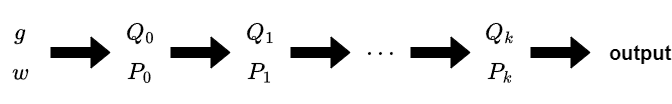
The problem to solve is to “Express $X$ in terms of $w$ given $f$ and $g$.” It’s important to be mindful of what is given and what needs to be determined from the figures above.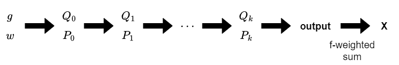
Among the elements in the above diagram, $f$ and $g$ are given, and $Q_i$ can be computed from $g$, so all the quantities in red text can be considered as given. Everything else is calculated sequentially when $w$ is given (more precisely, it’s a calculation based on the linear transformation determined by the “given quantities”). We solve the transposed problem by following steps:
We solve the transposed problem by following steps:
- Knowing that $X$ is a linear combination of coefficients $f_i$ of the output.
- Using the result of previous step, determine the coefficients when expressing $X$ as a linear combination of elements of $P_k$.
- $\vdots$
- Using the result of previous step, determine the coefficients when expressing $X$ as a linear combination of elements of $P_0$.
- Using the result of previous step, determine the coefficients when expressing $X$ as a linear combination of elements of $w$.
In this manner, we compute the answer in the reverse order of the original problem (corresponding to the property of transposition of matrix products: $(A_1\cdots A_n)^T=A_n^T\cdots A_1^T$).
Summarizing what we’ve discussed so far, the overall scheme of the composite algorithm can be represented by the following diagram:
First, we compute $Q_0, Q_1, \cdots$ from $g$. This involves exactly the same calculations as the Power Projection algorithm.
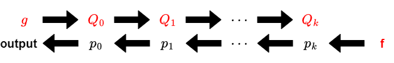
Next, we sequentially determine the coefficients $p_i$ of $X$ when expressed as a linear combination of elements of $P_i$, starting from the end. Repeating this calculation eventually yields the coefficients of $X$ when expressed as a linear combination of elements of $w$, which gives us the desired $f(g(x))$.Transposed Power Projection Algorithm (Sample Implementation)
To simplify the explanation, let’s assume $[x^0]g=0$ and that $n$ is a power of $2$.
To implement the transposed algorithm, we first prepare the implementation of the original algorithm.
As explained earlier, the computation follows the flow of “computing $Q_i$ iteratively from $g$, and then traversing back based on the results.” Therefore, implementing it using recursion would make the code concise. Additionally, unlike in Power Projection, we’ll need to reuse the values of $Q_i$ even after computing $Q_{i+1}$, so we’ll implement it in a way that avoids overwriting the same array for reuse.
With that in mind, I prepared the following implementation. (If you need information about templates used, please pick it up from the submission).
Furthermore, separating the computation into calculations for $Q$ and calculations for $P$ makes it easier to understand.
 Let’s modify this code to make it an implementation for composition. Instead of implementations like “calculating nxt_P from P,” we’ll replace them with implementations like “calculating coefficients of P from coefficients of nxt_P.” Here’s roughly how the implementation should look:
Let’s modify this code to make it an implementation for composition. Instead of implementations like “calculating nxt_P from P,” we’ll replace them with implementations like “calculating coefficients of P from coefficients of nxt_P.” Here’s roughly how the implementation should look:
 There are three places marked with red boxes, and replacing them with appropriate implementations will complete the implementation for composition. Each of these corresponds to the following parts of the overall algorithm diagram.
There are three places marked with red boxes, and replacing them with appropriate implementations will complete the implementation for composition. Each of these corresponds to the following parts of the overall algorithm diagram.
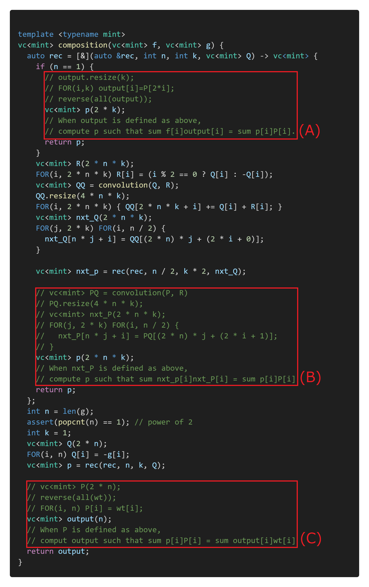
Now, (A) and (C) are straightforward, and if you understand what needs to be calculated correctly, you can implement them quickly. For these parts, which involve simply rearranging elements in arrays to correspond to each other, you just need to reinsert them at the appropriate locations and fill the rest with zeros.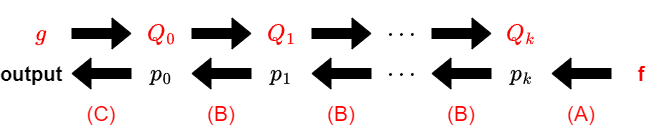
Finally, let’s consider part (B). When you’re not sure what the transpose will look like, it’s helpful to break it down into several steps. Here, it’s implemented in two steps: “determining PQ from P” and “determining nxt_P from PQ”. We’ll implement this by tracing back in reverse order.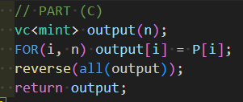
 The upper half is straightforward. Let’s focus on the lower half.
The upper half is straightforward. Let’s focus on the lower half.
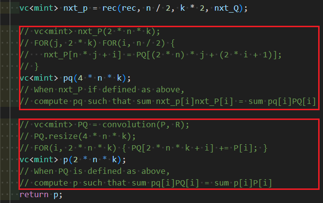
The lower half involves transferring pq using the transposed mapping of $\mathrm{convolution}(-, R)$. Let’s leave this part for later. With that, the implementation is completed, excluding the transposition of convolution.Transposition of Convolution (middle product)
Let $a$ be a sequence of length $n$, and $b$ be a sequence of length $m$. Then, $c = \mathrm{convolution}(a,b)$ is a sequence of length $n+m-1$ defined by $c_k = \sum_{i+j=k}a_ib_j$.
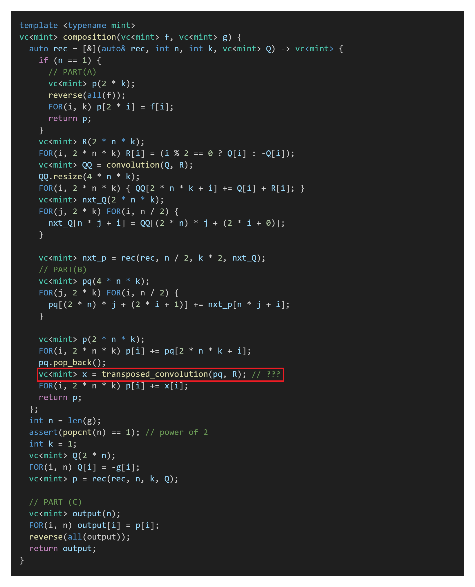
When $b$ is fixed, $\mathrm{convolution}(-,b); a\mapsto \mathrm{convolution}(a,b)$ is a linear mapping that maps a sequence of length $n$ to a sequence of length $n+m-1$. Let’s consider what the transposed mapping of this function looks like.It’s a mapping that transfers a sequence $x$ of length $n+m-1$ to a sequence $y$ that satisfies $\sum_{k}c_kx_k = \sum_{i}a_iy_i$. Substituting $c_k = \sum_{i+j=k}a_ib_j$, the left-hand side becomes $\sum_{i}\sum_ja_ib_jx_{i+j}=\sum_i a_i(\sum_jb_jx_{i+j})$. Therefore, the transposition problem can be formulated as follows:
Given a sequence $x$ of length $n+m-1$, find the sequence $y$ of length $n$ determined by $y_i=\sum_jb_jx_{i+j}$.
This sequence $y$ is also known as the middle product of $x$ and $b$.
For readers familiar with convolution, they may notice that this can be easily computed using convolution. By convolving one of $b$ or $x$ in reverse order, and then gathering the appropriate values, the output can be obtained. If implemented directly, this would require an FFT of length around $n+2m$.
However, with an appropriately implemented middle product, a faster implementation can be achieved using FFT of length around $n+m-1$. Below, we will explain this in two different way.
(The middle product is often usable beyond the context of transposition problems. Many people may be performing normal convolutions without realizing that the middle product can be utilized.)
Calculating the Middle Product (Derivation 1)
If we reverse $b$, what we want to compute becomes $y_i=\sum_{j}x_{i+j}b_{m-1-j}=\sum_{j+k=m+i-1}x_jb_k$. Therefore, after convolving $x$ and $b$, we only need to extract elements from the $(m-1)$-th to the $(m+n-2)$-th positions.
Exploiting the fact that we only need a small portion after convolution, we can replace the convolution with circular convolution. That is, we choose $L$ satisfying $L\geq n+m-1$, perform circular convolution of length $L$ on $x$ and $b$, then extract elements from the $(m-1)$-th to the $(m+n-2)$-th positions.
Indeed, for $0\leq j < n+m-1$ and $0\leq k<m$, we have $0\leq j+k<n+2m-1\leq L+m$, showing that the terms entering from the $(m−1)$-th to the $(2m+n-2)$-th positions in circular convolution are exactly the terms entering in that range in normal convolution.
Calculating the Middle Product (Derivation 2)
Let’s derive an algorithm from the transposition principle, noting that the middle product is the transposition of convolution.
Convolution can be computed using the following steps:
 When considering transposition, please note that $b$ is treated as a constant. The operation of obtaining $\mathrm{convolution}(a,b)$ from $a$ is represented as the composition of five (determined by $b$) linear mappings. The transposed mapping can be expressed as the composition of these five mappings in reverse order.
When considering transposition, please note that $b$ is treated as a constant. The operation of obtaining $\mathrm{convolution}(a,b)$ from $a$ is represented as the composition of five (determined by $b$) linear mappings. The transposed mapping can be expressed as the composition of these five mappings in reverse order.
For the pointwise product, recalling that $b$ is treated as a constant, it is just a component-wise scalar multiplication. Therefore, the transposition follows the same scalar multiplication pattern. Thus, the following implementation is feasible:
We just need to understand how the transposition of FFT and IFFT works. This is another important issue, not limited to the application in middle product. I will explain this again in the following.
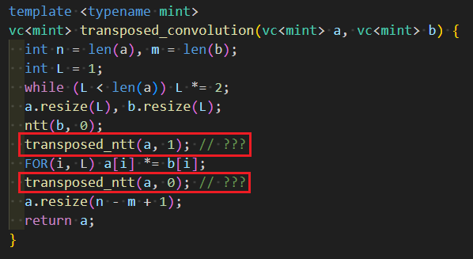

Transposition of Fourier Transform
When $a$ is a sequence of length $n$, and we fix the primitive $n$-th root of unity $\omega$, the Fourier transform of $a$, denoted as $\mathcal{F}[a]$, is defined as:
The Fourier transform can be regarded as a multiplication by a symmetric matrix, and therefore the transpose of the Fourier transform is simply the Fourier transform itself.
The inverse Fourier transform is defined as:
and it serves as the inverse operation of the Fourier transform. Like the Fourier transform, it can be written by a symmetric matrix, so the transpose of the inverse Fourier transform is the inverse Fourier transform itself.
(Note that there are variations in the definitions of these operations across different references, including differences in scaling factors such as $1/n$ ).
That’s mostly correct, but there’s an important caveat.
Many FFT implementations output sequences arranged in bit-reversed order, including widely-used libraries like the one in the AtCoder Library. Consequently, depending on the FFT implementation, it’s not guaranteed that the FFT operation itself is equal to its transpose.
Transposition of Bit-Reversed FFT
Let $n=2^k$ be a power of $2$, and $\mathrm{rev}(i)$ as the bit-reversal of $i$ up to the $k$th binary digit.
Let’s define bit-reversed FFT and bit-reversed IFFT as follows (though strictly speaking, FFT refers to the algorithm rather than the transformation itself, let’s consider it more broadly here):
- Bit-reversed FFT: Input $a$ and output $b$ defined by $b_i = \sum_j \omega^{-\mathrm{rev}(i)\cdot j}a_j$.
- Bit-reversed IFFT: Input $b$ and output $a$ defined by $a_i = \dfrac{1}{n}\sum_{j} \omega^{i\cdot \mathrm{rev}(j)}b_j$.
Therefore, their transposes can be described as follows:
- Transposed Bit-reversed FFT: Input $b$ and output $a$ defined by $a_i = \sum_j \omega^{-i\cdot \mathrm{rev}(j)}b_j$.
- Tranposed Bit-reversed IFFT: Input $a$ and output $b$ defined by $b_i = \dfrac{1}{n}\sum_j \omega^{\mathrm{rev}(i)\cdot j}a_j$.
Comparing them, you’ll notice that “bit reversed FFT” and “transposed bit reversed IFFT“, as well as “bit reversed IFFF” and “transposed bit reversed FFT“, are nearly identical. The only differences lie in the presence of $\dfrac{1}{n}$ overall and a negative exponent. Therefore, we can conclude the following:
- The transposed bit-reversed FFT is: bit-reversed IFFT, then reversing all but the first element, then scaling it by $n$.
- The transposed bit-reversed IFFT is: reversing all but the first element, then bit-reversed FFT, then scaling it by $1/n$.
The operation of “reversing all but the first element” is to send $i$-th element to $(n-i)$-th position, and since $\omega^{-i} = \omega^{n-i}$, the exponent is negated.
Sample Code of Composition
The implementation of composition is now complete based on the preceding discussions. The following sample code faithfully follows the explanation in this article.
Sample Code（1035ms）https://judge.yosupo.jp/submission/204008
The execution time is approximately the same as the original implementation of Power Projection (Inverse Function, 1042ms). The latter is slightly slower because it computes the formal power series pow after Power Projection.
In this article, for the sake of simplicity, we assumed that $n$ is a power of $2$ and $[x^0]g=0$ in the implementation. So, when integrating it into your library, please pay attention to these points.
In this article, we selected one implementation example of Power Projection and implemented composition using the transposition principle. Of course, starting with a more efficient implementation of Power Projection would yield an even faster implementation of composition. For example, from the implementation introduced in the previous article (Proposal 2), I obtained the following impolementation.
Sample Code（479ms）https://judge.yosupo.jp/submission/204011
Try challenging yourself with the transposition principle as an exercise.
第10篇：FPS 24 题
来源：https://atcoder.jp/contests/fps-24
本篇目录：A – 点心 / B – 整数对 / C – 数列 / D – 数列 2 / E – 数列 3 / F – 彩纸 / G – 硬币 / H – 跳跃 / I – 得分 / J – 双六 / K – 排列 / L – 排列 2 / M – 连通图 / N – 硬币 2 / O – 有根树 / P – 球 / Q – 骰子 / R – 随机游走 / S – 游戏 / T – 多彩 / U – 录像机 / V – 12 方向 / W – 回路 / X – 函数平方根
A – 点心
可立式为 $[x^N](x+x^3+x^4+x^6)^D$。
因为是稀疏的 fps pow，可在 $O(N)$ 时间内解出。参考：https://atcoder.jp/contests/fps-24/submissions/70655410
B – 整数对
可立式为 $[x^N](1+x)\cdot (1+x+x^2)\cdot \frac{1}{1-x^2}\cdot \frac{1}{1-x^3}$。
这是求有理函数系数的问题（求线性递推第 $K$ 项的问题），可用 Bostan-Mori 法等解出。$O(\log N)$ 时间。
参考：https://atcoder.jp/contests/fps-24/submissions/70655442
说到底，这个有理式可以约分，直接变成 $[x^N]1/(1-x)^2$，因此答案只是 $N+1$。
C – 数列
可立式为 $[x^S](1+x+\cdots+x^{M})^N$。
可以直接用 fps pow 的库，也可以先变形为 $(1-x^{M+1})^N\cdot (1-x)^{-N}$，再用二项式定理与负二项式定理。分别可在 $O(S\log S)$ 时间、$O(S)$ 时间内解出。
https://atcoder.jp/contests/fps-24/submissions/70655467
D – 数列 2
考虑 $0\to a_1\to a_2\to \cdots \to a_N\to M$ 这样的移动，则变成把 $M$ 表示为
- 非负整数
- 正奇数 $N-1$ 个
- 非负整数
之和的问题。于是要求：
例如可先计算中间部分的 $N-1$ 次幂，再做 2 次前缀和来实现。
https://atcoder.jp/contests/fps-24/submissions/70655569
E – 数列 3
设各数出现次数为 $c_1,c_2,\ldots$，则变成在适当范围内累加 $\frac{N!}{c_1!\cdots c_M!}$ 的问题。适当范围是指 $\sum c_i=M$ 且 $0\leq c_i\leq i$，考虑这点后答案可立式为：
https://atcoder.jp/contests/fps-24/submissions/70655613
F – 彩纸
有一种用 4 状态矩阵快速幂的解法，用它能 AC。
能用矩阵快速幂解的东西都有线性递推，所以不显式求矩阵、直接用 BMBM 法也能解。
https://atcoder.jp/contests/fps-24/submissions/70655811
G – 硬币
考虑 dp 表 $\dp[n]$ 表示恰好支付 $n$ 日元的方法数（$0\leq n\leq N$），只需对已有的硬币做添加·删除即可。
删除略微不直观，但若用 FPS 考虑，添加只是乘上 $\frac{1}{1-x^a}$，所以删除只需实现乘上 $(1-x^a)$。
https://atcoder.jp/contests/fps-24/submissions/70655777
H – 跳跃
设给定移动规则的母函数为 $F(x,y)$，把 $(0,0)$ 也认可的记为 $G(x,y)$。
$G(x,y)=1+F(x,y)$，而 $G(x,y)$ 在规律处理上更方便。
先求 $b_n = [x^Ny^M]G^n$。这按坐标轴分开处理就很简单。
目标是求 $a_n = [x^Ny^M]F^n$，由 $F^n=(G-1)^n$ 得 $a_n=\sum_k\binom{n}{k}b_k(-1)^{n-k}$，整理后可知 $a$ 由 $b$ 经适当卷积求得。
也可以考虑指数型母函数的意义，直接立式为 $B(x)=A(x)e^x$ 的形式。
https://atcoder.jp/contests/fps-24/submissions/70656002
I – 得分
即 $[x^K]\prod_i(1+A_ix)$。这种总乘积，利用分治等保持次数平衡的计算步骤，可在 $O(N\log^2 N)$ 时间内算出。
https://atcoder.jp/contests/fps-24/submissions/70656079
J – 双六
目标是求到达 $i$ 的概率 $\dp[i]$ 这张 dp 表。禁止从 NG cell 转移，并求在 NG cell 处 dp 值的总和，即可算出失败概率。
dp 的转移有一定计算顺序的自由度，只要满足如下顺序处理即可：
- 对所有满足 $i<j$ 的 $i,j$，计算转移 $\dp[i]\to \dp[j]$。
- 但在计算 $\dp[i]$ 时，指向 $i$ 的转移都已算完。
用分治计算。设 dfs(L,R) 为处理满足 $L\leq i<j<R$ 的所有转移的函数，当调用 dfs(L,R) 时，依次调用：
- dfs(L,M)
- $[L,M)$ 到 $[M,R)$ 的所有组合转移
- dfs(M,R)
这样即可实现目标计算步骤。中间处理可化为大小 $O(R-L)$ 的列的卷积，故整体 $O(N\log^2N)$ 时间可解。
https://atcoder.jp/contests/fps-24/submissions/70656410
K – 排列
在得到计数关系式时，有一种手法是考虑“把任意的东西分解为既约的东西”（后述的连通图计数等也是如此）。
对任意排列，考虑“$[l,r]$ 作为多重集与 $l,…,r$ 一致”这样的区间 $[l,r]$ 为既约区间，可做既约分解：
于是，“任意排列”对应于“取满足 $k_1+k_2+\cdots+k_m=n$ 的划分 $(k_1,k_2,\ldots,k_m)$，各自确定长度 $k_i$ 的既约排列”。
设“任意排列”的母函数为 $F(x)$，“既约排列”的母函数为 $G(x)$，则得到关系式 $F(x)=\sum_mG(x)^m$。因此 $F(x)=\frac{1}{1-G(x)}$。
$F(x)$ 容易知道，由此 $G(x)$ 也可知。
参考，OEIS A003319：https://atcoder.jp/contests/fps-24/submissions/70656467
L – 排列 2
把排列看作 functional graph 来考虑，则如下：
数 $N$ 个顶点的有向图，其中每个连通分量都是至少 3 个顶点的环。
要得到它，可如下做：
- 取若干 $3$ 以上的 $k_1,\ldots,k_m$ 使 $N=k_1+k_2+\cdots+k_m$。
- 把 $N$ 元集合划分为 $k_1,\ldots,k_m$ 元集合 $S_1,\ldots,S_m$（出现多项式系数）。
- 把各 $S_i$ 做成有向环。
但这种方法下，同一个图会被生成 $m!$ 次（集合标签的置换）。
设把 $n$ 个顶点做成环的方法数为 $a_n$，令 $A(x)=\sum_n\frac{a_n}{n!}x^n$，则答案可立式为：
$N!$ 与 $A(x)$ 定义式中分母的 $n!$ 来自多项式系数。因同一图被生成 $m!$ 次而出现 $\frac{1}{m!}$。归根结底本质是 $\exp$ 的计算，可在 $O(N\log N)$ 时间内解出。
https://atcoder.jp/contests/fps-24/submissions/70656508
本题中 $A(x)=\sum_{n\geq 3}\frac{1}{n}x^n=-\log(1-x)-x-\frac{1}{2}x^2$。因此
所以也能在 $O(N)$ 时间内解出。
https://atcoder.jp/contests/fps-24/submissions/70672603
M – 连通图
设 $A(x)$ 为连通图的 EGF，$B(x)$ 为任意图的 EGF（计数分别为 $a_n,b_n$ 时的 $\sum \frac{a_n}{n!}x^n$, $\sum \frac{b_n}{n!}x^n$）。
则与 L 几乎相同，可知 $B(x)=\exp A(x)$。
这次是 $B(x)$ 容易求得，已知 $B$ 而想求 $A$ 的情况。这可计算为 $A(x)=\log B(x)$。
参考：https://atcoder.jp/contests/fps-24/submissions/70656541
N – 硬币 2
答案可立式为：
把它表成 $\frac{1-x^{i(A+1)}}{1-x^A}$ 的形式，则只需乘上 $O(N)$ 个形如 $(1-x^a)^{\pm 1}$ 的 FPS。
因为 $\log (1-x^A)$ 在 $N$ 次以下只有约 $O(N/A)$ 项，所以可用“求 $\log$ 再代入 $\exp$”的要领，在 $O(N\log N)$ 时间内解出。
https://atcoder.jp/contests/fps-24/submissions/70656689
O – 有根树
忽略“根为 $1$”这个条件来计数，最后除以 $N$。
设 $F(x)$ 为有根树的 EGF，则可立式为：
当然，“$1$”部分对应于子节点数为 $0$ 的情况，“$\frac{1}{p!}F(x)^p$”部分对应于子节点数为 $p$ 的情况。
确认一下 $p$ 个的情况：确定有 $N$ 个顶点、子节点数为 $p$ 的有根树，需要：
- 把 $N$ 划分为 $N=1+n_1+\cdots+n_p$
- 把顶点集合划分为 $1,n_1,\ldots,n_p$ 元集合 $S_0,S_1,\ldots,S_p$
- 把各 $n_i$ 顶点集合分别做成有根树
但这样同一棵有根树会被生成 $p!$ 次。
这种“想算 $F(x)$ 时 $F(x)$ 又出现了”的情况，在有根树计数中特别常见。本题中，若令 $G(x)=\frac{1}{1+\sum_{p}\frac{1}{p!}x^p}$，则满足 $G(F(x))=x$，因此可用反函数计算（$O(N\log^2N)$ 时间）或拉格朗日反演（$O(N\log N)$ 时间）求得答案。
https://atcoder.jp/contests/fps-24/submissions/70656985
P – 球
答案可立式为：
答是 $N![x^N]\prod_{0\leq i\leq m}f_i(x)$，其中
- $f_0(x)=\sum_{n=0}^{K}\frac{1}{n!}x^n$
- $f_i(x)=\sum_{n=0}^{\infty}\frac{1}{n!}x^n=e^x$（$i\geq 1$）
因此略加整理，答案为 $N![x^N]f_0(x)e^{mx}$。
由 $e^{mx}=\sum_n\frac{m^n}{n!}x^n$，可把答案表成 $\mathrm{polynomial}(m)$ 的形式。之后用多点求值，可在 $O(m\log^2 m+n\log n)$ 时间内解出。
https://atcoder.jp/contests/fps-24/submissions/70657206
Q – 骰子
应计算的值为：
直接用二项式定理展开，得
于是若令 $a_d = \sum_{i}A_i^d$, $b_d=\sum_jB_j^d$，则
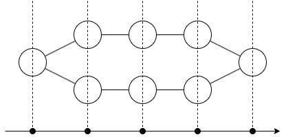
因此只要求出 $a_0,\ldots,a_K$ 与 $b_0,\ldots,b_K$，答案就由适当卷积得到。枚举 $a_d$ 可用：$\sum_da_dx^d=\sum_i\frac{1}{1-A_ix}$。
把这个有理式作为分子分母多项式的组来计算。这用分治可在 $O(N\log^2N)$ 时间内完成，之后求系数序列即可。
https://atcoder.jp/contests/fps-24/submissions/70657503
R – 随机游走
设 $n=2^N$。
端点处转移概率看似不同，但看下图就解决了。
可以这样考虑：
- 在圆环上随机游走（相邻点必为 $2$ 个，等概率选一个前进）。
- 只观测 $x$ 坐标。
给圆环上的顶点适当编号，则（无论是端点还是什么）编号总是以概率 $1/2$ 增减。不过编号是按 $\pmod{2n}$ 考虑的。
归根结底，求出 $(x+x^{-1})^{T}\pmod{1-x^{2n}}$ 即可。用倍增法求的话复杂度像是 $O(n\log n\log T)$，但这次由于 $n=2^N$ 的约束，更简单。
FFT 是把循环卷积关系变成逐点乘积。因此这种关于循环卷积的 $T$ 次幂计算，只需对周期 $2^{N+1}$ 做 FFT，各点取 $T$ 次幂，再用 IFFT 转回即可。
其知名度虽低于多项式乘法，但一般本应从“用 FFT 与循环卷积的关系推导多项式乘法”来理解，所以只要理解多项式乘法与 FFT 的关系，这个也应能理解。
https://atcoder.jp/contests/fps-24/submissions/70662103
S – 游戏
type 1
像问题 O 那样做 EGF，但按胜者准备 $F_0(x), F_1(x)$ 两种。
- $F_0(x)+F_1(x)=\sum_n\frac{n^{n-1}}{n!}x^n$（带标签有根树的总数）
- $F_0(x)=x\exp F_1(x)$
要求这个，只需能：
- 在线地，对 $n=0,1,2,\ldots$，输入 $[x^n]F_1(x)$，接收 $[x^n]\exp F_1(x)$。
这就是在线 exp。利用 $F=\exp f$ 时 $F’=f’F$，可归约到在线卷积。复杂度 $O(N\log^2N)$ 时间可解。另外似乎也能用 Newton 法达到 $O(N\log N)$ 时间。
type 2
虽是不经意写了实验，但这个游戏是（即使在一般图上也能解）有名的游戏。
归根结底，是数“存在完美匹配的树”。
这样，判定问题就能用自底向上的树 dp 解，因此把它同样用 EGF 表示即可。不过我在注意到这点之前，是用实验和 OEIS 解的。而且想要的实验结果样例里全都有。
https://atcoder.jp/contests/fps-24/submissions/70660873
T – 多彩
满足条件的列，可通过依次排列如下得到：
- 地点 $1$
- 其他颜色的、长度正的顶点列
- （颜色 1 的顶点，与其他颜色的长度正的顶点列的结合）重复非负整数次
- 最后地点 $1$
为应对 $A_1=998244353$，这里写得略冗余（不能只写第 1、3 个最后除以 $A_i$）。
设“其他颜色的长度正的顶点列”的母函数为 $F(x)$，答案为
结论是，$F(x)$ 是 $O(N)$ 次的有理式，因此答案的母函数也是（答案可在 $O(N\log N\log T)$ 时间内求得）。来求 $F(x)$。
用容斥原理。即对若干移动标上“移动到同色”的记号，以 $-1$ 为权重来计数序列。
把被记号连起来的顶点汇总处理，归根结底如下：
要数长度为 $N$ 的“其他颜色的长度正的顶点列”，需：
- 把 $N$ 划分为正整数 $N=n_1+n_2+\cdots+n_m$
- 各块内，只由同色移动组成的顶点列，按移动次数给 $-1$ 的权重
这个块的母函数，按颜色分别考虑，成为 $\sum_{i} (A_ix-A_ix^2+A_ix^3-A_ix^4\pm\cdots)$ 这样的交错和之和。这是有理式之和，故为有理式。
https://atcoder.jp/contests/fps-24/submissions/70658357
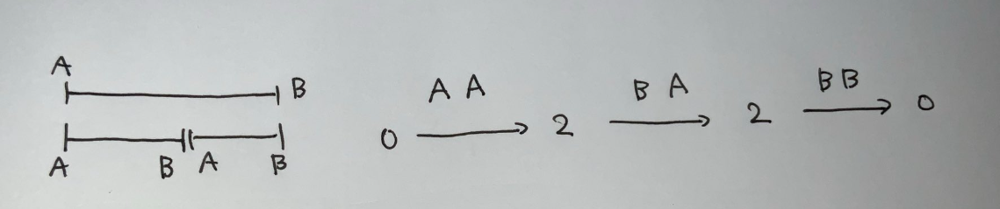
U – 录像机
首先关于判定，任意时刻都是 $2$ 台以下。
关于 $A,B$ 的构造方式：
- 决定多重集 $A$
- 决定多重集 $B$
- 把 $A,B$ 做匹配
按时间升序计数。
- 放 $A$ 时不贴标签（查询索引），最后用多项式系数确定标签。
- 放 $B$ 时决定与哪个 $A$ 匹配。
按此要领造式。关于“2 台以下”的条件，可像括号列的累积和那样的折线图，处理成高度始终在 $[0,2]$ 内。代替最后乘多项式系数，对多项式系数分母部分，按把 $A$ 放在同一坐标的个数预备好，最后给答案乘阶乘。
仔细做这些，问题可被改写为：
给定由次数不超过 2 的多项式组成的 $(3,3)$ 矩阵 $F$。对 $t=1,2,3,\ldots,U$ 求 $[x^N]F^t$。
$F$ 虽是矩阵，但处理与只是多项式时几乎无异。用分治可在 $O((N+U)\log ^2 (N+U))$ 时间内计算。
https://atcoder.jp/contests/fps-24/submissions/70661856
关于加速到 $O(N+U)$ 时间的信息，也请确认 noshi91 的用户解说。
V – 12 方向
首先可分为如下两种来考虑：
- 偶数方向，即只看 $i=0,2,4,6,8,10$ 的移动，到达 $(H,0)$。
- 奇数方向，即只看 $i=1,3,5,7,9,11$ 的移动，到达 $(0,W)$。
这若有分圆域论的知识，由 $\mathbb{Q}(\zeta_{3})\subsetneq \mathbb{Q}(\zeta_{12})$ 立即可知。在高中数学水平也能通过按坐标轴分别看而较简单证明（$x$ 方向看只有 $1, \sqrt{3}$ 的有理数倍移动，要到达 $H$ 需所有 $\sqrt{3}$ 来源的移动互相抵消）。
因此只需解如下：只用偶数方向移动，求 $n=0,1,\ldots,N$ 下用 $n$ 次到达 $(H,0)$ 的方法数。
利用适当的斜交坐标，可归约为：对 $n=0,1,\ldots,N$ 求 $[x^H](x+y+xy+x^{-1}+y^{-1}+x^{-1}y^{-1})^n$。此情形与问题 H 略相似。
设 $F(x,y)=x+y+xy+x^{-1}+y^{-1}+x^{-1}y^{-1}$。比它更好处理的是
计划是先枚举 $[x^H]G(x,y)^n$，再利用它枚举 $[x^H]F(x,y)^n$。$[x^H]G(x,y)^n$ 的枚举，由因式分解形式与二项式定理，变成“把适当的 3 个二项式系数的积，沿适当的一次式规则大量相加”这类计算，写出式子可知可用卷积求得。
综上，本问题可在 $O(N\log N)$ 时间内解出。
https://atcoder.jp/contests/fps-24/submissions/70659336
W – 回路
这与其说是 FPS，不如说出现了 SPS（集合幂级数）。
若知道双连通子图的计数，则几乎没有新元素。
设：
- $G[S]$：顶点集为 $S$ 的子图个数
- $C[S]$：顶点集为 $S$ 的连通图个数
- $B[S]$：顶点集为 $S$ 的双连通图个数
则有 $G = \exp C$。本题中 $G$ 立即可知，由此 $C$ 可知。
由 $C$ 求 $B$ 需如下步骤：
- $F_0[S]$：顶点集为 $S$ 的连通图个数
- $F_1[S]$：顶点集为 $S$ 的连通图，且 $0$ 不是关节点的个数
- $F_2[S]$：顶点集为 $S$ 的连通图，且 $0, 1$ 不是关节点的个数
- $F_3[S]$：顶点集为 $S$ 的连通图，且 $0, 1, 2$ 不是关节点的个数
- $\vdots$
只需能由 $F_r$ 求 $F_{r+1}$，不过考虑“由 $F_{r+1}$ 求 $F_r$”的步骤更好理解。值的改动只发生在包含 $r$ 的部分，做的是“合并与 $r$ 以外无公共顶点的子图”这类计算。可知这计算是 SPS 的 $\exp$。
反过来，由 $F_r$ 得 $F_{r+1}$ 只需取 SPS 的 $\log$。因此 $B[S]=F_N[S]$ 通过 $N$ 次 SPS $\log$，可在 $O(N^3\cdot 2^N)$ 时间内计算。
另一方面，逆着追溯也能按 $B \to C\to G$ 顺序计算。直接这么做只是回到原点没意义，但若改成：
- $B'[S]$：顶点集为 $S$ 的双连通图个数，但顶点 $0,N-1$ 不会同属一个顶点数 $3$ 以上的双连通分量。
- $C'[S]$：顶点集为 $S$ 的连通图个数，但顶点 $0,N-1$ 不会同属一个顶点数 $3$ 以上的双连通分量。
- $G'[S]$：顶点集为 $S$ 的子图个数，但顶点 $0,N-1$ 不会同属一个顶点数 $3$ 以上的双连通分量。
做同样的修正再走同一计算步骤即可。由 $B$ 把部分值置 $0$ 修正得到 $B’$，再由此按 $B’\to C’\to G’$ 计算，即得答案（从整体中减去的东西）。
https://atcoder.jp/contests/fps-24/submissions/70659975
X – 函数平方根
来自 hos 的提交，惊人解法。
记 $F(x)\in \mathbb{F}_p(x)$ 的 $k$ 次复合为 $F^{(k)}(x)$。此时成立 $F^{(p)}(x)=x\pmod{x^p}$。
来验证这一点。令 $V$ 为次数小于 $p$ 的多项式全体，$\phi\colon V\longrightarrow V$ 为 $g(x)\longmapsto g(F(x))$。此时把 $\phi$ 用基底 $1,x,\ldots,x^{p-1}$ 分量表示，会成为对角元为 $1$ 的上三角矩阵。因此 $(\phi-\id_{V})^p=0$，由 $\id_{V}$ 与 $\phi$ 的可交换性及二项式定理得 $\phi^p=\id_{V}$。
由此，$F(x)=G^{(2)}(x)\pmod {x^p} \iff F^{((p+1)/2)}(x)=G(x) \pmod{p}$ 这一等价，无论 $\implies$ 还是 $\impliedby$ 都易证。
归根结底，要求答案只需把输入 $F$ 复合 $(p+1)/2$ 次，可在 $O(N\log^2N\log p)$ 时间内解出。
https://atcoder.jp/contests/fps-24/submissions/70667150
第11篇：O(1) 模逆元、模对数、模幂
本篇目录：概要 / $O(1)$ inv / $O(1)$ log / 追记 / 追记其二（hos.lyric 的改进）/ $O(1)$ pow / 相关
概要
看过 QOJ 按题号顺序的题、或典型训练集的人，应该知道下面这题。
https://qoj.ac/contest/1167/problem/5
它要求在必要时做适当预处理，从而高速计算 $x^{-1} \bmod p$，正如题名所示，可以 $O(1)$ 时间在线计算。（当然预处理是 $o(p)$ 的）。
由此联想到，把 mod pow 也做成 $O(1)$ 时间在线计算，我便实现了它。
以下写 $p$ 时指奇素数（设想其大小约 $10^9$）。
$O(1)$ inv
先证明。
设 $n$ 为正整数。对任意 $x\in [1,p)$，存在 $(a,b)$ 使 $x \equiv a/b \pmod{p}$ 且 $0\leq |a| \leq 2p/n, 1\leq b\leq n$。进一步，通过 $O(n^2)$ 时间的预处理，可 $O(1)$ 时间算出这样的 $(a,b)$。
考虑把分母不超过 $n$ 的有理数排列成的 Farey 数列，可取 $b_i,c_i$ 满足 $c_1/b_1\leq x/p\leq c_2/b_2$ 且 $0\leq b_i,c_i\leq n$，并且 $b_1+b_2>n$ 且 $|b_1c_2-b_2c_1|=1$。
当 $b_1<b_2$ 时 $b_2> n/2$，于是取 $(b,c)=(b_1,c_1)$，有
从而 $|bx-cp|\leq \dfrac{2p}{n}$。在 $b_2<b_1$ 时取 $(b,c)=(b_2,c_2)$ 也得同样不等式。令 $a=bx-cp$ 即得所求 $(a,b)$。
由以上证明可知，要求 $(a,b)$，只需对 $x/p$ 取得分子·分母不超过 $n$ 的有理数中左、右两侧的最佳近似分数即可。
分子分母不超过 $n$ 的有理数至多 $n^2$ 个，可对所有这些做某种处理。又两个这样的有理数之差至少 $1/n^2$，所以把 $[0,1]$ 分成 $n^2$ 个桶，对每个桶记录前后的有理数，即可 $O(1)$ 时间回答查询。
据此，逆元按 $x^{-1} = (a/b)^{-1} = b\cdot a^{-1}$ 计算。若对范围 $|a|\leq 2p/n$ 内的 $a$ 预计算逆元，则逆元查询变为在线 $O(1)$ 时间。预处理的时间·空间为 $O(n^2 + 2p/n)$，取 $n=p^{1/3}$ 则为 $O(p^{2/3})$。
在 QOJ 的提交中，出现过完全相同的代码运行时间差 2 倍以上的情况（submissions 914536, 914538），所以想测时最好本地测（交互题似乎会放大不稳定性）。
$O(1)$ log
以下设 $n=p^{1/3}$。
固定原根 $r$，考虑对数映射 $\log \colon \mathbb{F}_p^\times \longrightarrow \mathbb{Z}/(p-1)\mathbb{Z}; r^x\longmapsto x$。
与逆元时同理，若能计算范围 $1\leq |a| \leq 2p/n$ 内的 $\log a$，则 $\log$ 可 $O(1)$ 时间查询。由 $\log(ab)=\log(a)+\log(b)$，只需计算 $-1$ 与素数的 $\log$ 即可。注意 $\log(-1)=(p-1)/2$。由素数定理估计，需要预计算的 $\log$ 个数为 $2p/(n\log p)$。
固定底、解 $Q=2p/(n\log p)$ 个离散对数时，适当选取 BSGS 法的桶大小，可使复杂度达 $O(\sqrt{pQ})$ 时间。在 $n = p^{1/3}$ 设定下，这是 $O(p^{5/6}/(\log p)^{1/2})$ 时间。我的实现中确认在 $p=998244353$ 等下预处理约 $0.75$ 秒可完成。
Index Calculus 也是底固定、有 $Q$ 查询条件下可期待加速的手法，但我没实现。
另外，在 $\bmod 998244353$ 设定下，因 $p-1$ 是小素数之积，离散对数可高速解。我的实现（类似 Pohlig-Hellman 算法的简化）中确认约 $0.1$ 秒可完成全部预处理。
追记
用如下类似 Index Calculus 简化的方法，不利用 $p$ 的特殊性也能达到约 $0.17$ 秒的构建：
- 小的 $i$ 用 BSGS 解。
- 大的 $i$，随机取 $k$ 求 $ir^k \bmod p$。若它能分解为 $i$ 以下素数的乘积，则利用小情况的值算出 $\log(i)$。质因数分解用足够小的素数试除，以及对一定以下的值持有筛来简易进行。
细节见后述实现示例。
追记其二（hos.lyric 的改进）
$i \geq \sqrt{p}$ 时的 $\log(i)$，令 $p=ij+k$，利用 $\log(i) = \log(-k)-\log(j)$，可 $O(1)$ 时间得到。因此要解的离散对数问题个数变为 $O(p^{1/2}/\log p)$ 个。用此方法达到了构建 $0.1$ 秒以下。
$O(1)$ pow
考虑给定 $a,b$ 求 $a^b\pmod{p}$ 的问题。把 $a=0$ 的情况分支处理后，其余情况由 $a^b=r^{b\log a}$ 归约到计算 $r$ 的幂的问题。
把指数替换为模 $p-1$ 的余数并考虑平方倍增，则这部分通过 $O(\sqrt{p})$ 时间的预处理可使查询为 $O(1)$ 时间。
当 $1\leq a<p$, $0\leq b<p-1$ 时，我的实现中每次查询进行 2 次除法与 5 次数组访问。若发现更好的方法请告诉我。
实现示例：https://maspypy.github.io/library/mod/modfast.hpp
本地处理随机 $10^8$ 次查询时：
- 通常的倍增法：$11.4$ 秒
- 本文手法（不含预处理）：$3.7$ 秒
大致这样的加速。
相关
逆元的计算，若是离线，可在 $O(Q+\log p)$ 时间内完成。例如 https://noshi91.hatenablog.com/entry/2019/10/18/182935
pow 若底固定，用 $k$ 次幂根分割做预处理 $O(kp^{1/k})$、查询 $O(k)$ 时间也很方便。（https://maspypy.github.io/library/ds/power_query.hpp）
第12篇：树上 0-1 背包 / 京都观光 train seats
本篇目录：概要 / [京都观光] 向 [01 on Tree] 的归约 / [Train Seats] 向 [01 on Tree] 的归约
概要
本篇叙述如下几个问题之间的关联。（按出题时间顺序，可能有误。）
- [Icy Roads Of Nomel]，Gennady Korotkevich Contest 1。
- [01 on Tree]，AGC023。
- [Heavy Stones]，Yuhao Du Contest 7。
- [京都观光]，JOI 2022 春合宿，其实与 [Icy Roads Of Nomel] 完全相同。
- [Train Seats]，NPCAPC 2024，其实与 [Heavy Stones] 大致相同。
也就是说，考虑 [Train Seats] 可归约到 [京都观光]，考虑 [京都观光] 又可归约到 [01 on Tree] 的重要子问题。
本篇并不完整说明任一问题的解法，但包含一定程度的剧透。
[京都观光] 向 [01 on Tree] 的归约
设横线条（行）数为 $1+H$，竖线条（列）数为 $1+W$，各行的权重记为 $a_i$，各列的权重记为 $b_j$。
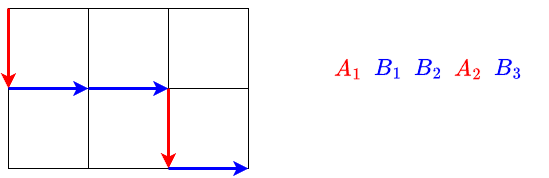
把第 $i$ 行的到达记作 $A_i$，第 $j$ 列的到达记作 $B_j$，则网格路径可转换为 $H+W$ 个对象 $A_i, B_j$（$1\leq i\leq H$，$1\leq j\leq W$）的排列。不过附带条件：“若 $i<j$，则 $A_j$ 在 $A_i$ 右侧，$B_j$ 在 $B_i$ 右侧”。考虑每行的贡献，如下。关于 $i=0,H$ 附近需要适当定义缺失值，此处省略该讨论。
设 $A_i$ 右侧的 $B_j$ 个数为 $x_i$，则 $a_i$ 被加算 $x_i-x_{i+1}$ 次。
行的贡献总和为 $\sum a_i(x_i-x_{i+1})=\sum (a_i-a_{i-1})x_i$。
重新令 $p_i=a_i-a_{i-1}$，并适当处理 $i=0,H$ 附近，可把行的贡献总和改写为 $c+\sum_{i=1}^{H} p_ix_i$ 的形式。
对列做同样处理，可把本题重写为如下逆序对问题：
有 $H+W$ 个 01 字符串 $A_i, B_j$。每个 $A_i, B_j$ 形如：$100\cdots 0$（在 $1$ 后接 $p$ 个 $0$）。当把它们按“若 $i<j$ 则 $A_i$ 在 $A_j$ 左侧、$B_i$ 在 $B_j$ 左侧”的条件排列时，求所得字符串的逆序对（转倒数）的最小值。
我个人觉得解释为逆序对问题比较好懂，但 $p$ 也可能变成负的（若边权设为实数，也会变成实数），所以这样写有点别扭。觉得难以接受的一方，请体会其意并适当重新形式化。例如可理解为：给字符 $0$ 赋予权重 $p$ 后的逆序对。
另外，实际要求的值并非所得字符串的逆序对，而是从中减去“来自 $A_i$ 的字符之间”与“来自 $B_j$ 的字符之间”的逆序对；但由于 $A$ 之间、$B$ 之间的顺序是确定的，所以能这样改写。
“$A$ 之间、$B$ 之间顺序确定”这一点，等价于如下操作：在一棵有根树上保持拓扑序地把字符串拼接起来。
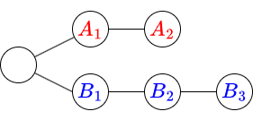
因此，[京都观光] 可用与 [01 on Tree] 相同的方法求解。（如前所述，$p<0$ 可能发生，但已确认它不影响解法。）解答例（京都观光）：https://atcoder.jp/contests/joisc2022/submissions/58563187
[Train Seats] 向 [01 on Tree] 的归约
起初我是从 [Train Seats] 先经由一次向 [京都观光] 的归约，但直接归约到 [01 on Tree] 更简单。[Train Seats] 能立刻归约到 [Heavy Stones]，所以这里讲解后者。它果然也能归约到如下问题：从如下有根树中取 01 字符串时，最小化逆序对。
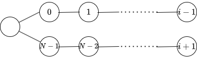
因此也可用相同方法求解。因树形随 $i$ 变化，实现量会稍增，但只要充分理解 01 on Tree 的计算，剩下的解法推导应该不难。解答例（Heavy Stones）：https://qoj.ac/submission/621998
解答例（Train Seats）：https://atcoder.jp/contests/npcapc_2024/submissions/58564666